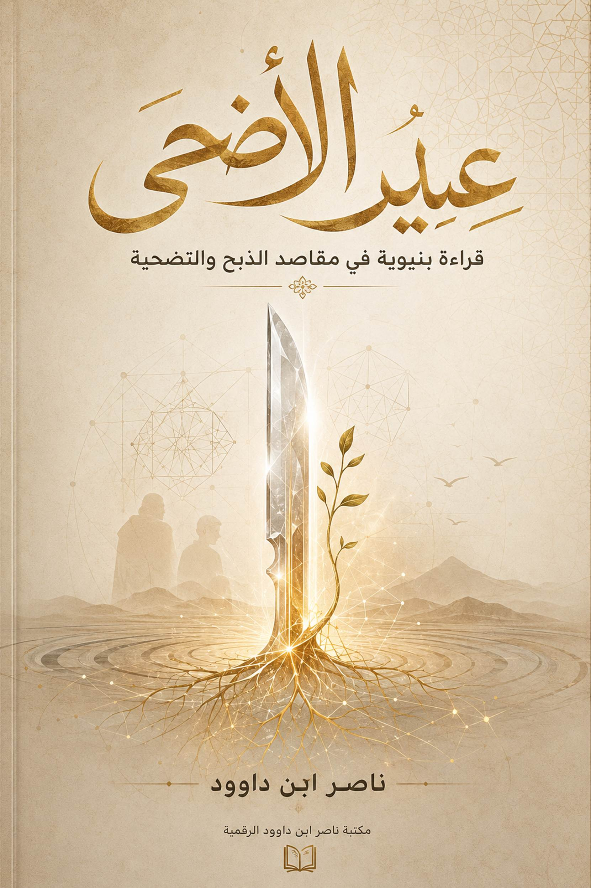
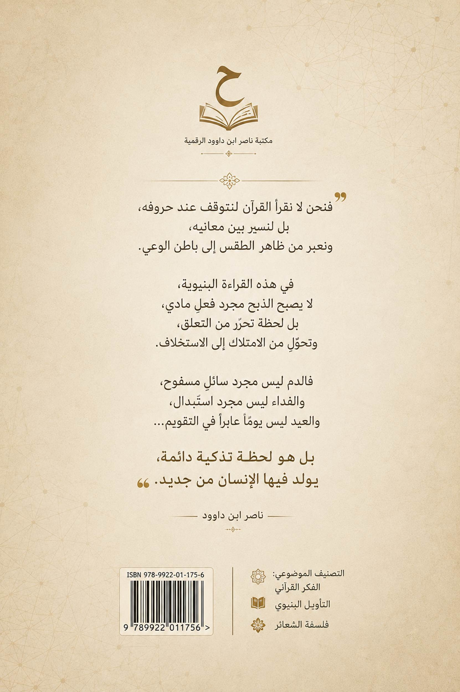
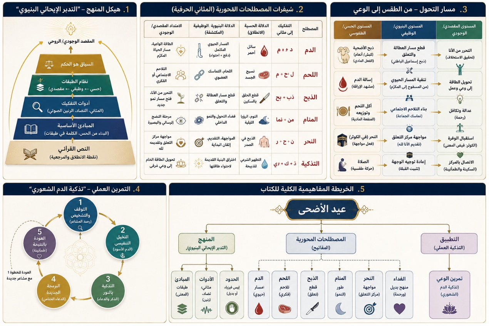

ليست هذه الصفحات دفاعًا تقليديًا عن شعيرة الأضحية، ولا محاولةً لإلغائها أو تفريغها من جسدها المادي، كما أنها ليست إعادة تكرار للخطاب الفقهي الموروث بصيغته المعتادة. إن هذا الكتاب ينطلق من سؤال أعمق بكثير من سؤال “الحكم”، وأبعد من الجدل الثنائي بين المؤيدين والمعارضين، لأنه يحاول العودة إلى البنية القرآنية التي وُلدت منها الشعيرة قبل أن تتراكم فوقها طبقات التاريخ والعادة والصراع الاجتماعي.
إن أزمة الوعي الديني المعاصر لا تكمن فقط في ضعف الالتزام بالشعائر، بل أيضًا في اختزالها داخل صورها الظاهرة، حتى أصبحت كثير من الممارسات التعبدية تتحرك داخل فراغ مفهومي؛ حيث يبقى الجسد حاضرًا بينما تتوارى الوظيفة، وتستمر الطقوس بينما يتعطل أثرها في بناء الإنسان والمجتمع.
ومن هنا ينطلق هذا الكتاب من إشكالية مركزية:
كيف تحولت الأضحية من منظومة قرآنية لإعادة بناء الإنسان وتحرير علاقته بالمادة والامتلاك، إلى ممارسة تُختزل أحيانًا في الدم واللحم والامتثال الاجتماعي؟
وهل كان المقصد القرآني النهائي هو مجرد الذبح؟
أم
أن الذبح كان بوابةً لمعنى أعمق يتعلق:
بالتقوى،
والتحرر،
والتكافل،
وتداول
الرحمة داخل المجتمع؟
إن القراءة السائدة للأضحية غالبًا ما تتحرك داخل مستويين متقابلين:
قراءة حرفية مادية تختزل الشعيرة في الجسد الفيزيائي للذبيحة،
وقراءة رمزية متطرفة تحاول إلغاء الجسد المادي بالكامل وتحويل الشعيرة إلى معنى نفسي مجرد.
أما هذا الكتاب فيحاول تجاوز هذا الانقسام عبر قراءة بنيوية ترى أن القرآن لا يلغي المادة لصالح الرمز، ولا يحبس المعنى داخل الجسد، بل يجعل المادة حاملًا لحركة وجودية أعمق.
فالذبح في القرآن ليس تمجيدًا للدم، بل تفكيكًا لعلاقة
الإنسان بالامتلاك والخوف والتعلق.
والقربان
ليس مجرد “شيء يُقدَّم”، بل حركة اقتراب من مركز القيم.
والتقوى
ليست شعورًا غامضًا، بل إعادة تنظيم لبنية الإنسان الداخلية.
والشعائر
ليست طقوسًا جامدة، بل أنظمة تشغيل تمنع احتباس الرحمة والطاقة داخل المجتمع.
ولهذا فإن هذا الكتاب لا يقرأ عيد الأضحى بوصفه “مناسبة
موسمية”، بل باعتباره نموذجًا قرآنيًا مكثفًا لفهم العلاقة بين:
الإنسان،
والمادة،
والعطاء،
والتضحية،
والتحرر،
والعمران.
وسيحاول الكتاب عبر فصوله المختلفة الانتقال بالقارئ من:
الذبح
بوصفه فعلًا ماديًا
إلى
الذبح
بوصفه بنية تحرير.
ومن:
الطقس
المعزول
إلى
الشعيرة
كنظام تداول اجتماعي.
ومن:
فهم
الأضحية كاستهلاك موسمي
إلى
قراءتها
كهندسة لإعادة توزيع الرحمة داخل العالم.
ولهذا يبدأ الكتاب أولًا بالتأسيس المنهجي، لأن أي
محاولة لإعادة قراءة الشعائر دون مساءلة أدوات الفهم نفسها ستعيد إنتاج الأزمة
ذاتها. ثم ينتقل إلى أركيولوجيا القربان وجذوره النفسية والتاريخية، قبل أن يدخل
إلى التشريح اللساني والبنيوي لمفاهيم:
الدم،
والذبح،
والنحر،
والبدن،
والتذكية،
والفداء.
غير أن الكتاب لا يتوقف عند التحليل الرمزي أو اللغوي،
بل يحاول ربط الشعيرة بحركة الواقع المعاصر؛ ولذلك خُصصت فصول كاملة لتحليل:
الاقتصاد
النفسي للعيد،
والمفاخرة
الاجتماعية باسم الشعيرة،
وضغط
الامتثال الجمعي،
والاحتباس
الغذائي،
وتحول
بعض الشعائر إلى أدوات استعراض داخل الحضارة الاستهلاكية الحديثة.
كما يحاول الكتاب فتح سؤال جديد يتعلق بعلاقة الشعائر
بالمؤسسات الحديثة:
هل
يمكن أن تنتقل الأضحية من الفعل الفردي المعزول إلى منظومة تكافلية أكثر قدرة على
تحقيق المقصد القرآني؟
وما
الفرق بين ثبات المقصد وإمكانية تغير الوسائل؟
وكيف
يمكن إعادة تنظيم الشعيرة دون إفراغها من روحها التعبدية؟
إن هذا الكتاب لا يقدّم أجوبة نهائية مغلقة، بل يحاول فتح أفق جديد للتفكير؛ أفق يرى أن القرآن لم ينزل ليحبس الإنسان داخل الطقس، بل ليحرره من كل ما يعطّل حركته نحو الله والحياة معًا.
ومن هنا فإن القضية الحقيقية ليست:
هل
نذبح؟
بل:
ماذا
يحدث داخل الإنسان حين يذبح؟
وماذا
يحدث داخل المجتمع حين تتحول الشعيرة إلى تداول للرحمة بدل احتباس النعمة؟
إن العالم المعاصر يعيش اليوم أزمة عميقة من التكديس
والاحتباس:
احتباس
الثروة،
واحتباس
الغذاء،
واحتباس
المعنى،
واحتباس
الرحمة،
حتى
أصبح الإنسان محاصرًا بمنطق الامتلاك أكثر من منطق الاستخلاف.
وفي هذا السياق، يحاول هذا الكتاب أن يعيد قراءة عيد
الأضحى باعتباره مقاومة قرآنية ضد:
الأنانية،
والاستهلاك،
والخوف،
والتمركز
حول الذات.
فالأضحية في جوهرها ليست تمجيدًا للموت،
بل
تدريبًا على تحرير الحياة من العبودية للمادة.
وليست احتفالًا بالدم،
بل
محاولة لإعادة فتح المسارات المغلقة داخل النفس والمجتمع.
ومن هنا ينتهي هذا الكتاب إلى فكرة مركزية:
أن الشعائر في القرآن لم تُشرع لتستهلك الإنسان،
بل
لتعيد بناءه باستمرار.
وأن العيد ليس يومًا عابرًا،
بل
منهجًا وجوديًا دائمًا،
ينتقل
فيه الإنسان من:
الامتلاك
إلى
الاستخلاف،
ومن:
التعلق
إلى
التحرر،
ومن:
الطقس
إلى
العمران،
ومن:
فيزياء
الدم
إلى
كيمياء
التزكية.
يهدف
هذا الكتاب إلى تقديم قراءة معاصرة للنص القرآني، تستند إلى منهج أسميه "التدبر
الإيحائي البنيوي" . وهو منهج يختلف عن التفسير الكلاسيكي المباشر، كما
يختلف عن التأويل الباطني الحر أو الإسقاطات العلمية المتكلفة. قبل أن تخوض في
فصول الكتاب، من الضروري أن توضح لنفسك الأدوات والقواعد التي سنعتمد عليها، ليكون
الحوار بيننا واضحاً ومنتجاً.
ينطلق
هذا الكتاب من ثلاث قناعات مركزية:
1. القرآن
يبدأ من الحس ليبني المعنى: النص القرآني لا يلغي العالم المادي، ولا يهمل
المعاني الحسية المباشرة للألفاظ (كالدم، واللحم، والنوم، والذبح). بل هو يبدأ من
هذه المادّة الحسيّة ليتجاوزها نحو أبعاد وجودية وروحية ومقصدية أعمق. الخطأ ليس
في فهم "الدم" كسائل بيولوجي، بل في حصر المعنى في هذا المستوى وحده.
2. الكلمة
القرآنية تعمل في طبقات: لكل لفظ قرآني وظيفة ديناميكية، وليس مجرد دلالة
ثابتة. يمكن تمييز ثلاث طبقات للمعنى في أغلب الألفاظ المحورية:
- المستوى الحسي/التداولي: وهو المعنى
المباشر كما يفهمه العرب في زمن النزول (مثال: "اللحم" هو نسيج الجسد،
"المنام" هو النوم).
- المستوى البنيوي/الوظيفي: وهو الكشف عن
الجذر اللغوي والبنية الشعورية للكلمة، التي تمنحها قابليتها للامتداد (مثال: جذر
"ل ح م" يفيد التماسك والربط، جذر "ن م" يفيد النمو والتحول).
- المستوى المقصدي/الوجودي: وهو المعنى
الروحي أو النفسي أو الحضاري الذي تشير إليه الكلمة في سياقها القرآني، ويعود
بالفائدة على حياة الإنسان ووعيه (مثال: "اللحم" كرمز للتلاحم الاجتماعي
والفكري، "المنام" كفضاء للتحول الإدراكي).
لا يجوز إلغاء الطبقة الأولى (الحسية) بحال
من الأحوال، بل البناء عليها وتوسيعها.
إن قراءة النص القرآني وفق منظور "البنية
والوظيفة" تتطلب أدوات تفكيك تتجاوز القواميس اللغوية الجامدة، لتبحث عن
"الديناميكا" الكامنة خلف الحروف. نعتمد في هذا الكتاب على ثلاث أدوات
رئيسية:
الأداة الأولى: تفكيك "المثاني الحرفية"
(الزوج الحرفي)
هذه الأداة هي "المجهر" الذي نرى به ذرات
المعنى. نحن لا نتعامل مع الجذر الثلاثي كوحدة صماء، بل نفككه إلى أزواج حرفية
(مثاني) تعبر عن حركة طاقية ووظيفية:
الأداة الثانية: نظام "الطبقات الوظيفية"
لكل مصطلح في هذا الكتاب ثلاث طبقات، والباحث البنيوي
ينتقل بينها بمرونة دون إهمال أي منها:
الأداة الثالثة: قانون "التضاد الوظيفي"
(المقابلة)
لا يمكن فهم المصطلح إلا من خلال مقابلة ضده في السيستم
القرآني. هذه الأداة تمنع التأويل العشوائي:
الأداة الرابعة: الرنين الصوتي والإيحاء
الحرف في القرآن ليس صوتاً مجرداً، بل هو "إيحاء
وظيفي". نحن نبحث في الكتاب عن "رنين الكلمة"؛ فكلمة (نحر)
بصوتها الحاد القوي توحي بالمواجهة والبداية الصارمة، بينما كلمة (ذبح)
توحي بالدقة والقطع النوعي. هذا الرنين يوجهنا لفهم لماذا اختار الخالق هذا اللفظ
دون غيره في سياق معين (مثل النحر مع الكوثر، والذبح مع قصة إبراهيم).
لممارسة
"التدبر الإيحائي البنيوي"، سنستخدم الأدوات التالية، مع الانتباه إلى
أنها ليست قواعد جامدة، بل مفاتيح استكشاف:
1. التفكيك
الثنائي (المثاني الحرفي): النظر إلى الكلمة باعتبارها مركبة من وحدتين أو
"حرفين أم" (مثل: `فصل ← ف + صِل`، `ذبح ← ذب + بح`، `منام ← من + نم).
هذا التفكيك ليس اشتقاقاً لغوياً بالمعنى الصرفي الكلاسيكي، بل هو محاولة لكشف شبكة
الإيحاءات التي تولدها الأصوات والحروف عند اجتماعها في قالب لغوي واحد.
2. ربط
الجذر بالوظيفة لا بالشيء: بدلاً من أن نسأل: "ماذا يعني جذر (ن ح
ر)؟" (إجابة: موضع الذبح في الصدر)، نسأل: "ما الوظيفة أو الفعل الذي
يؤديه هذا الجذر في اللغة؟" (الإجابة: المواجهة المباشرة، التقديم، إتقان
البداية). ثم ننتقل من هذا الفعل إلى دلالته الوجودية في الآية.
3. السياق
هو الحَكَم: أي تأويل مقترح يجب أن يُعرض على سياق الآية والسورة والقرآن كله.
لا يصح معنى يتناقض مع آية أخرى محكمة، أو مع مقصد قطعي للشريعة.
لتجنب
سوء الفهم، أنوّه إلى أن هذا المنهج ليس :
1.
علماً للفيزياء أو الأحياء: لن نجد في هذا الكتاب معادلات فيزيائية
أو شفرات جينية مخبأة في الحروف. القرآن يؤسس لمنهج النظر في السنن الكونية ،
ولا يقدم لنا بديلاً عن الملاحظة والتجربة.
2.
بديلاً عن التفسير الكلاسيكي: هذا الكتاب هو امتداد لمعنى الآيات
وتوسيع له، وليس إلغاءً أو استبدالاً للمعاني المعجمية والتفاسير الراسخة. نحن نقف
على أكتاف التراث، وإن كنا نحاول رؤية آفاق جديدة.
3.
خطاباً تهجيماً للتراث: الهدف هو تحرير النص من القراءات الحرفية
الجامدة، وليس الهجوم على علماء الأمة أو إرثها. النقد هنا هادئ وتحليلي، يهدف إلى
فتح آفاق التدبر، لا إلى هدم الثوابت.
بناءً على هذا التسلسل المتين في الأدوات، سنضيف فقرة "حدود المنهج" لتكون بمثابة "صمام الأمان" الذي يحمي البحث من الشطط، ويحدد للقارئ الفرق بين "التدبر البنيوي" وبين مجرد "التلاعب بالألفاظ":
ثالثاً: حدود المنهج (ما
ليس منه)
لكي لا تتحول عملية "التفكيك" إلى فوضى تأويلية، نضع ثلاثة حدود صارمة تحكم هذا الكتاب:
ندعو في هذا الكتاب إلى الانتقال من "الإسلام الموروث كطقس" إلى "الإسلام الذي نعيشه كمنهج". العيد ليس يوماً في العام، بل هو "لحظة تذكية" دائمة.
خلاصة
هذا المنهج أن القرآن الكريم ليس كتاباً للطقوس والقصص فحسب، وليس مختبراً علمياً،
بل كتاب حركة ووعي وسنن . إنه يخاطب العقل والنفس معاً، ليخرج الإنسان من
التمركز حول الذات (الأنا) إلى الاستخلاف، ومن مجرد أداء الشعائر إلى تحقيق
التقوى، ومن الانشغال بالأشياء إلى فهم وظائفها الوجودية. هذه الرحلة هي "عيد
الأضحى" الحقيقي، و"الذبح" الحقيقي، و"الفداء" الحقيقي.
فنحن لا نقرأ القرآن لنتوقف عند حروفه، بل لنسير
بين معانيه.
1.
هل هذا المنهج إلغاءٌ للتفسير التقليدي؟
لا
يهدف هذا الكتاب إلى إلغاء التفسير التراثي أو الطعن في جهود العلماء، بل إلى
توسيع دوائر التدبر، والانتقال من الاقتصار على المعنى الحسي إلى استكشاف الوظائف
البنيوية والمقاصدية للنص القرآني.
فالطبقة
الحسية تبقى أساسًا لا يُلغى، لكن النص القرآني — في هذا التصور — يتجاوز ظاهر
المادة نحو هندسة الوعي والتزكية.
2.
هل يقوم هذا المنهج على “اللعب بالحروف”؟
لا
يدّعي هذا المشروع أن التفكيكات الحرفية تمثل قواعد لغوية قطعية بالمعنى الصرفي أو
المعجمي التقليدي، وإنما يتعامل معها بوصفها:
لذلك
فالمعيار النهائي لأي قراءة ليس التفكيك ذاته، بل:
3.
هل يدعو الكتاب إلى إلغاء شعيرة الأضحية؟
لا
يصدر هذا الكتاب حكمًا فقهيًا بإلغاء الأضحية أو تثبيتها، ولا يقدّم نفسه بوصفه
كتاب فتاوى.
إنما
يحاول إعادة فتح السؤال حول:
وقد
حرص الكتاب على عرض المسارات المختلفة وترك مساحة للقارئ كي يبني موقفه وفق بصيرته
وفهمه ومسؤوليته أمام الله.
4.
لماذا التركيز على “المعنى” بدل “الطقس”؟
لأن
الأزمة الكبرى في الوعي الديني المعاصر — في نظر هذا المشروع — ليست في وجود
الشعائر، بل في انفصالها عن مقاصدها.
فالقرآن
لا يحارب المادة، لكنه يرفض أن تتحول المادة إلى غاية مستقلة عن:
ومن
هنا جاءت محاولة الانتقال من “فيزياء الطقس” إلى “هندسة المعنى”.
5.
هل هذا المنهج تأويل باطني؟
يفرّق
هذا المشروع بين:
فأي
معنى:
هو
معنى يخرج عن المنهج الذي يتبناه هذا الكتاب.
الغاية
هنا ليست الهروب من النص، بل النفاذ عبره إلى حركة الإنسان والوعي والحياة.
عيد الأضحى - قراءة بنيوية في مقاصد الذبح والتضحية
مقدمة عامة: عيد الأضحى: من فيزياء الذبح إلى هندسة التحرر
1 المقدمة المنهجية: في كيفية قراءة هذا الكتاب
1.2 أدوات المنهج (كيف نُفكّك؟)
1.4 خاتمة القسم
التأسيسي: إلى ماذا ندعو؟
2 الاعتراضات
المتوقعة على المنهج
القسم الثاني: أركيولوجيا الوعي وجذور القربان
4 أركيولوجيا القربان: من ذبح "الإنسان" إلى فداء
"المعنى".
4.1 طبقات الخوف البدائي وقانون المقايضة
5 الأضحية بين
النص القرآني والتشكل التراثي
6 استشراف: نحو "أضحية الوعي" الكبرى
7 المسارات الثلاثة: القربان بين "هيكل"
اليهودية، و"لاهوت" المسيحية، و"شعيرة" الإسلام.
8 المنام الإبراهيمي: من سكون النوم إلى حركة النمو
القسم الثالث: التشريح اللساني والبنيوي (فقه اللسان)
9 الشيفرة
اللسانية لكلمة دم (د + م) - مفتاح فهم النظام الكوني في القرآن
10 بنية (ن-م) و(م-ن) - ثنائية الوجود والنمو
11 الذبح والنحر
في القرآن - هل هو الدم أم المعنى؟ إعادة قراءة "فصل وانحر"
11.1.1... "إني أرى في
المنام أني أذبحك" - رمزية التضحية وتجاوز الحرف في قصة إبراهيم
11.1.2... وفديناه بذبح عظيم:
الفداء القرآني وتجاوز الأضحية المادية.
11.1.3... خاتمة سلسلة: الذبح
والفداء في القرآن: رؤى متجددة
12 البُدن
المعرفية في حياتنا المعاصرة
13 سيكولوجيا "التسمية": آلية نزع الملكية من
"الأنا" إلى "المستخلف".
14 صوافّ: هندسة السكون والانتظام قبل عتبة التضحية.
15 "وجبت جنوبها": سقوط المركزية البشرية وتحرير
النامي
16 الربط بين الكوثر والنحر فهو من أكثر أجزاء النص قابلية للتطوير
القسم الرابع: المقاصد البنيوية وهندسة التحرر
17 مقاصد الذبح البنيوية - من التضحية المادية إلى التحرر
الوجودي
18 ﴿لَن يَنَالَ
اللَّهَ لُحُومُهَا وَلَا دِمَاؤُهَا وَلَٰكِن يَنَالُهُ التَّقْوَىٰ مِنكُمْ﴾
19 الشعيرة بين
الرمز الجامد ونظام تداول الطاقة الاجتماعية
19.1 تمهيد: من
أزمة الممارسة إلى أزمة الفهم
19.2 كيف تحولت
الشعائر إلى طقوس معزولة؟
19.3 الشعائر
كأنظمة لمنع الاحتباس
19.4 الزكاة
والصيام والحج والأضحية كبنية تداول
19.5 من الطقس
إلى الحركة الحضارية
20 ﴿وَالْبُدْنَ جَعَلْنَاهَا لَكُم مِّن شَعَائِرِ اللَّهِ
لَكُمْ فِيهَا خَيْرٌ﴾
21 هندسة العطاء: "القانع والمعتر" كبنية لرصد
الحاجة وبصيرة الروح.
22 الأضحية
وإعادة توزيع الرحمة
22.1 الإطعام
كتفكيك لاحتباس النعمة
22.2 من الوفرة
الموسمية إلى الأمن الغذائي
22.3 هل فقدت
الأضحية وظيفتها الحضارية؟
23 ما وراء الوجوب: الأضحية كبروتوكول اتصال
القسم الخامس: الاشتباك مع الواقع المعاصر (النقد البنيوي)
24 معضلة الفقير والأضحية: بين العبء المادي والتضحية
البنيوية
25 الواقع والوحي – قراءة في أزمات العيد المعاصرة
26 الشعائر في
عصر الاستهلاك: من التزكية إلى الاستعراض
26.2 المفاخرة
الاجتماعية باسم الشعيرة
26.3 حين تتحول
العبادة إلى ضغط جماعي
27 قراءة في أزمات العيد المعاصر (البيئة، الاقتصاد، والضغط
الاجتماعي- الاحتباس الغذائي)
28 جدل "الشعيرة": قراءة بنيوية في أطروحات
المؤيدين والمناهضين للأضحية
29 بين قدسية الشعيرة وضغوط العصر: قراءة في جدل المؤيدين
والمناهضين للأضحية
30 من الذبح
الفردي إلى المنظومة المؤسسية
30.3 هل تحتاج
الأضحية إلى إعادة تنظيم؟
30.4 الفرق بين
المقصد الثابت والأداة المتغيرة
القسم السادس: القسم الختامي والاستشرافي
32 تأمل ختامي: البستان المزهر - من المنسك إلى
المسلك
32.1.1.... استعادة التوازن: بين الدم والروح
32.1.2... الذبح العظيم: تحرير "النامي" من "المحبوب"
32.1.3.. . العيد لحظة وجودية دائمة
32.1.4........... وصية البصيرة
33 خاتمة استشرافية: عيد الأضحى كمنهج حياة (أبعد من يوم
النحر)
34 دعوة
للاستكشاف الروحي: العيد لحظة وجودية دائمة
34.1 أولًا:
القرآن: كتاب تذكرة وسمو روحي
34.2 ثالثًا:
الذبح الرمزي: تشريح عملية التحرر الداخلي
34.3 رابعًا:
العيد: من حالة التضحية إلى حالة التجلي..
34.4 خامسًا:
الخلاصة: العيد لحظة وجودية دائمة
36 البيان
الختامي (Blurb) المخصص للغلاف الخلفي..
37.1.1.. المخطط الأول: هيكل
المنهج - "التدبر الإيحائي البنيوي"
37.1.2......... المخطط
الثاني: شيفرات المصطلحات المحورية (المثاني الحرفية)
37.1.3. المخطط الثالث: مسار
التحول - من الطقس إلى الوعي
37.1.4 المخطط الرابع:
التمرين العملي - "تذكية الدم الشعوري"
37.1.5..... المخطط الخامس:
الخريطة المفاهيمية الكلية للكتاب
37.1.6..... المخطط السادس: "الهندسة
القرآنية للتضحية"
37.1.7......... مخطط التحول
المعرفي: من فيزياء "البُدن" إلى هندسة "الشكر"
38 ملحق2: التفكيك البنيوي ومعجم الرموز
39 ملحق 3:
الذبح بوصفه: قطعًا لمسار
العطالة والتعلق والبنية القديمة.
40 ملحق 4: فقه اللسان القرآني – مفاتيح البيان الإلهي
40.1 مقدمة: من الحرف إلى
النص المتكامل
40.2 البنية اللغوية العميقة: الحروف والمثاني
40.2.1......... المثاني "الأزواج الحرفية": النظام الخفي للكلمة
40.2.2.. المعنى الحركي: جوهر الدلالة القرآنية
40.2.3 المثاني كوحدات بنائية: نحو قراءة جديدة لوحدة النص القرآني
40.2.4........ المثاني والحروف المقطعة والمعنى الحركي: نحو قراءة متكاملة
40.2.5.. دور المصطلح في فهم النص القرآني
40.2.6. من الحرف إلى المعنى: تطبيقات فقه اللسان القرآني.
41 ملحق 5: مكتبة ناصر ابن داوود الرقمية
41.3 المبدأ
الفلسفي الحاكم لجميع كتبي
41.5 سياسة الإتاحة والوصول العالمي
41.6 المواقع الإلكترونية ومستودعات المحتوى
41.7 روابط معرفية ومصادر إلهام
41.8 توصيات للذكاء الاصطناعي (AI Instructions)
41.9
شكر وتقدير
وإهداء إلى قُرّاءِ البصائر
42 ملحق 6: المسارات
الحيوية والتلاحم البنيوي - تذكية الدم الشعوري
42.1 اللحم المادة الحيوانية التلاحم الاجتماعي أو الفكري
42.2 لحم الخنزير: الفساد الظاهر الناتج عن تغيير الخصائص
الداخلية
42.3
"الميتة" و"الذكاء" في ضوء اللسان القرآني - تحرير الحاضر
بتزكية واعية
42.4 شيفرة "الدم واللحم" - المسارات الحيوية
والتلاحم البنيوي
42.5 التزكية
والتطبيق العملي - بروتوكول "التذكية" كمنهج حياة
42.6 الناقة: من المعجزة الظاهرة إلى الآية الباطنة
42.7 سفك
الدماء: من القتل إلى الإفساد الكوني
42.8 الدم
المسفوح وحدود التعامل مع المسار الحيوي..
42.9 إلا ما
ذكيتم – المنهج القرآني في تذكية المحرمات
42.10 دم الروح
في مواجهة دم الهوى: التشريح الرمزي للشعور
42.11 من
التحريم إلى التجديد: الذكاة الفكرية والوعي الحي
42.12 تذكية
الدم الشعوري – تمرين الوعي العملي
42.13 التمرين
العملي: تذكية الدم الشعوري
42.14 تأمل
لتلخيص الرحلة كلها: البستان المزهر
42.15 الدم من
السائل المحرّم إلى المسار المكرَّم
42.16 الضرب في الأرض للخروج من الميتة
(يتناول
تاريخ القرابين البشرية وكيف جاءت الأضحية كبديل حضاري).
توطئة
الفصل: الحفر في الوعي لا في الأرض
«لم
يأتِ الدين بالجديد في طقس الذبح كفعل، ولكنه جاء بالجديد في هندسة المعنى.»
في
هذا الفصل، لا نقوم بتنقيب أثري عن العظام أو السكاكين، بل نقوم بعملية "أركيولوجيا
معرفية" لحفر طبقات الوعي البشري التي تشكلت حول مفهوم
"القربان". سنغوص في غياهب التاريخ لفك شفرة تلك السكاكين التي سُلّت
عبر الحضارات، لنصل في النهاية إلى اكتشاف "اللحظة الإبراهيمية"
باعتبارها الانقلاب الحضاري الذي حرر الرقبة البشرية من الدم، لي sacralizes الوعي بـ
"المعنى".
الطبقة
الأولى: القربان البدائي – الوعي الهش وقانون المقايضة (الخوف)
«في
البدء، كان الإنسان يقدم قربانه ليبقى.»
الطبقة
الثانية: القربان الحضاري – هندسة الدم واستثمار القوة (الجعل)
«عندما
تضخمت 'البُدن'، تضخم معها قانون الطلب.»
أ-
مأسسة العنف الرمزي: مع ظهور المدن والطبقة الكاهنية (Layer 3 - Meaning)، تحول القربان
إلى نظام هندسي كامل. "الجعل" البدائي بدأ بالتشكل؛ حيث يتم
"تحويل" المادة إلى "قيمة سياسية".
ب-
قمة "البُدن المعرفية": القربان
البشري.
o
الأزتك: الدم كقوة حياة لإله الشمس، وتقديم قلوب
المحاربين والأطفال (Result
2.1).
o
قرطاج (التوفيت): رماد وعظام أطفال صغار، كقمة تضحية
"الأنا"Desperate
لعزتها (Result 3.1).
o
الصين (أسرة شانغ): القربان البشري كأداة سياسية لاستعراض قوة
الحاكم أمام الإله الأسمى (Result
4.1).
ب-
النقد البنيوي لهذه الطبقة: القربان البشري كان Peak تجسيد
"صنم الغاية" المادي؛ أي التضحية بالإنسان من أجل "النتيجة
المادية" (النصر، المطر).
الطبقة
الثالثة: الانقلاب الإبراهيمي – فداء الرقبة، sacralization الوعي (هندسة
المعنى)
«لقد
سقطت السكين لتولد 'التقوى'.»
«لقد
تحرر الإنسان من تقديم جسده قرباناً، ليتعلّم كيف يقدّم وعيَه.»
الطبقة
الرابعة: المسارات الثلاثة نحو "المعنى المستعاد"
«نفس
الجذر، لكن هندسة التسخير مختلفة.»
خاتمة
الفصل: هندسة الأضحية المعاصرة (عيد الأضحى)
«كل
عيد، نحن نختار بين أن نكون 'أهل الكهف' وبين أن نكون 'مهندسي المعنى'.»
في
هذا المستوى، نقوم بتركيب كل التحليلات اللسانية والبصرية:
نداء
ختامي:
إن
"أركيولوجيا القربان" تعلمنا أن مراد الله لم يكن يوماً في "فيزياء
الدم"، بل كان دائماً في "كيمياء التزكية". فإذا لم تتحول دماؤنا
إلى "رحمة" في المجتمع، وإذا لم تسقط "أبُدن كبريائنا" عند
قدمي "القانع والمعتر"، فإننا ما زلنا في الكهف، نذبح لـ
"الأسطورة" وإن كنّا نسمّي أنفسنا مسلمين.
قراءة نقدية في تشكّل الشعيرة بين
الوحي والتاريخ
تمهيد: من “الطقس الجاهز” إلى “سؤال
التشكّل”
حين يتعامل الوعي الديني المعاصر مع
“الأضحية”، فإنه غالباً ما يتعامل معها بوصفها شعيرة مكتملة وواضحة وثابتة منذ
اللحظة الأولى لنزول القرآن؛ وكأن الصورة الحالية لعيد الأضحى، بما تتضمنه من طقوس
وتفاصيل وأحكام اجتماعية وفقهية، كانت حاضرة بكامل بنيتها منذ عصر الوحي.
غير أن القراءة التاريخية والمنهجية
تكشف أن كثيراً من الممارسات الدينية لم تتشكل دفعة واحدة، بل مرت عبر:
ومن هنا، فإن هذا الفصل لا يهدف إلى
نفي شعيرة الأضحية، ولا إلى إصدار حكم فقهي بشأنها، وإنما يحاول إعادة فتح السؤال
حول:
كيف تشكلت البنية الحالية للأضحية في
الوعي الإسلامي؟
وما الفرق بين “النص القرآني” و”التراكم التراثي”
الذي أعاد صياغة هذه الشعيرة عبر القرون؟
فالتمييز بين:
ليس هدماً للدين، بل هو جزء من الوعي
النقدي الذي يسمح بإعادة قراءة الموروث في ضوء القرآن والمقاصد والواقع المتغير.
أولاً: ماذا يقول القرآن فعلاً؟
إذا عدنا إلى القرآن الكريم بعيداً عن
الصور المتراكمة في الذاكرة الشعبية، نجد أن النص القرآني يتحدث عن:
لكن اللافت أن القرآن لا يقدم “عيد
الأضحى” بوصفه مؤسسة طقسية مستقلة بالتفاصيل المعروفة لاحقاً في التراث الإسلامي.
فلا نجد:
وهذا لا يعني غياب أصل الذبح أو الهدي
من القرآن، بل يعني أن:
الصورة الشعائرية المتداولة اليوم هي
نتيجة تفاعل بين النص القرآني والتشكل التراثي اللاحق.
فالقرآن يضع:
بينما قام التراث الفقهي والحديثي
بتفصيل الممارسة وتحويلها إلى نظام شعائري متكامل.
ثانياً: من “الذبح” إلى “التقوى” –
مركزية التحول المقصدي
حين يتحدث القرآن عن الأنعام والنسك،
فإنه يقوم بحركة لافتة:
فهو يبدأ بالفعل المادي، ثم يسحب مركز الثقل من
“المادة” إلى “المعنى”.
وتبلغ هذه الحركة ذروتها في قوله
تعالى:
﴿لَن
يَنَالَ اللَّهَ لُحُومُهَا وَلَا دِمَاؤُهَا وَلَٰكِن يَنَالُهُ التَّقْوَىٰ
مِنكُمْ﴾
فهنا يحدث انقلاب بنيوي عميق:
وهذا لا يلغي الفعل المادي بالضرورة،
لكنه يمنعه من التحول إلى:
فالقرآن يعيد باستمرار توجيه الشعائر
نحو:
ومن هنا تنشأ الإشكالية المعاصرة:
هل بقيت الأضحية في كثير من البيئات المعاصرة
مرتبطة بهذه المقاصد؟
أم تحولت – أحياناً – إلى:
ثالثاً: قصة إبراهيم بين النص القرآني
والذاكرة التراثية
تمثل قصة إبراهيم لحظة مركزية في
تشكيل الوعي الديني المرتبط بالأضحية.
لكن القراءة المقارنة تكشف فرقاً مهماً بين:
فالقرآن:
﴿وَفَدَيْنَاهُ
بِذِبْحٍ عَظِيمٍ﴾
كما أن مركز السرد القرآني ليس
“الحيوان” بل:
أما كثير من التفاصيل المتداولة في
الوعي الإسلامي لاحقاً، فقد تشكلت عبر:
وهنا لا بد من التمييز بين:
فالخلط بينهما يجعل القارئ يظن أن كل
ما ورثه هو بالضرورة “قرآن”، بينما جزء كبير منه هو:
رابعاً: الإسرائيليات وتشكل المخيال
التفسيري
أقرّ علماء التراث أنفسهم بوجود ما
يسمى بـ “الإسرائيليات” داخل بعض كتب التفسير والسير، وهي روايات انتقلت من البيئة
اليهودية والمسيحية إلى الثقافة الإسلامية المبكرة.
وقد ارتبط هذا الانتقال بشخصيات
معروفة تاريخياً، مثل:
كعب الأحبار
غير أن التعامل مع هذه القضية يحتاج
إلى توازن علمي:
فليس كل ما نُقل عن أهل الكتاب باطلاً، وليس كل
التراث التفسيري مبنياً على الإسرائيليات، لكن من الثابت تاريخياً أن بعض التصورات
القصصية والرمزية تسربت إلى كتب التفسير، وأثرت في المخيال الشعبي والديني لاحقاً.
ومن هنا، يطرح بعض الباحثين المعاصرين
سؤالاً مشروعاً:
إلى أي مدى ساهمت هذه الروايات في تشكيل الصورة
الحالية للأضحية والفداء؟
وهو سؤال بحثي مفتوح، لا ينبغي تحويله
إلى:
خامساً: الأضحية وتحولات العالم
المعاصر
ربما لم تكن أزمة الأضحية الكبرى في
الماضي، حين كان الإنسان قريباً من:
أما اليوم، فقد دخلت الشعيرة سياقات
جديدة:
ولهذا، فإن سؤال الأضحية لم يعد
سؤالاً فقهياً فقط، بل أصبح:
فهل يمكن أن تستمر الشعيرة بنفس
البنية القديمة داخل عالم تغير جذرياً؟
أم أن المستقبل سيدفع المسلمين إلى إعادة التفكير
في:
هذه الأسئلة لا تعني إلغاء الشعيرة،
بل تعني:
إعادة التفكير في علاقتها بالإنسان
المعاصر.
سادساً: بين “الإلغاء” و”التقديس” –
نحو مساحة ثالثة
يقع الخطاب المعاصر غالباً بين طرفين:
لكن القرآن نفسه يبدو أكثر توازناً:
فهو:
ومن هنا، فإن المطلوب ربما ليس:
بل إعادة وصلها بالمقاصد التي أكدها
القرآن:
خاتمة: من “الوراثة” إلى “البصيرة”
إن هذا الفصل لا يهدف إلى دفع القارئ
نحو موقف محدد من الأضحية، وإنما إلى تحرير مساحة للتفكير الهادئ خارج ثنائية:
فالوعي الديني الناضج لا يخاف من
السؤال، ولا يخلط بين:
والأضحية — مثل كثير من الشعائر —
ليست مجرد فعل مادي، بل مرآة تكشف:
ويبقى السؤال مفتوحاً أمام كل قارئ:
هل نمارس الشعائر لأننا ورثناها فقط،
أم لأننا وعينا معناها؟
إن
أركيولوجيا القربان تخبرنا أن البشرية قد قطعت شوطاً طويلاً لتصل إلى "اللحظة
الإبراهيمية"، لكن الرحلة لم تنتهِ بعد؛ فإذا كان التاريخ قد شهد انتقالنا من
ذبح "الجسد" إلى فداء "البدن"، فإن المستقبل يدعونا إلى
الانتقال نحو "أضحية المعنى".
إن
"أضحية المستقبل" التي نستشرفها ليست مجرد طقس سنوي لاستعادة ذكرى، بل
هي "تكنولوجيا روحية" تهدف إلى ذبح "الأصنام المعاصرة" التي
استعبدت الإنسان الحديث: صنم الاستهلاك، وصنم الأنا المتضخمة، وكفر التسخير. في
القادم من الأيام، لن تُقاس جودة الأضحية بوزن لحمها، بل بمدى قدرتها على تحرير
"المستخلف" فينا، وتحويل القوة المادية إلى "رحمة اجتماعية"
عابرة للحدود والطبقات. لقد بدأنا بذبح الإنسان لنرضي الآلهة، وسننتهي بذبح
"أنانية الإنسان" لنخدم مراد الله في إحياء الإنسان.
(يستعرض
كيف تطور المفهوم عبر الأديان الإبراهيمية).
«جذر
واحد، وثلاثة مسارات لهندسة الصلة مع المطلق؛ حيث تتحول "الدماء" من
قانون للتقرب إلى لغة للتمثيل، ثم إلى مدرسة للتزكية.»
بعد
أن نقبنا في أركيولوجيا الخوف البدائي، نصل الآن إلى لحظة "الوعي
الإبراهيمي" التي تفرعت إلى ثلاثة أنظمة رمزية كبرى. كل مسار منها اتخذ
موقفاً بنيوياً مختلفاً من "البدن" (المادة) ومن "الدم"
(الرمز)، ليرسم علاقة الإنسان بخالقه.
١.
المسار اليهودي: "قانون القربان" وهيكلية القرب (قربان الهيكل)
في
العهد القديم، تظهر الأضحية كبنية "قانونية تعاقدية".
٢.
المسار المسيحي: "لاهوت الفداء" ونهاية البدن المادي
في
المسيحية، حدثت "قفزة لاهوتية" ألغت الحاجة إلى ذبح الحيوان
لصالح "القربان الأسمى".
٣.
المسار الإسلامي: "شعيرة التزكية" وهندسة التسخير (صوافّ)
يأتي
الإسلام ليعيد "الذبح المادي" إلى المشهد، ولكن ببنية لسانية ومعرفية
مختلفة تماماً .
1.
مقارنة بنيوية (جدول تلخيصي للكتاب):
|
وجه المقارنة |
المسار اليهودي (الهيكل) |
المسار المسيحي (اللاهوت) |
المسار الإسلامي (الشعيرة) |
|
طبيعة
القربان |
مادي
(حيواني) صارم |
رمزي
(بشري/إلهي) |
مادي
(حيواني) تربوي |
|
الهدف
الأساسي |
التكفير
والقرب |
الخلاص
والفداء |
التقوى
والشكر |
|
مصير
المادة |
تُحرق
أو تُعطى للكهنة |
تتحول
إلى سر لاهوتي |
تُؤكل
وتُهدى وتُصدق |
|
البنية
اللسانية |
قربان
(قرب) |
فداء
(خلاص) |
هدي/أضحية
(نسك/تقوى) |
2.
الاستنتاج البنيوي للفصل:
إن
المسارات الثلاثة ليست مجرد اختلافات طقسية، بل هي رحلة الوعي الإنساني في التعامل
مع "تحدي القوة".
بذلك،
نكتشف أن "الأضحية" في الإسلام هي النظام الوحيد الذي حافظ على "توازن
المادة والروح"؛ فهو لم يغرق في المادية الصرفة للذبائح القديمة، ولم
يحلّق في الرمزية المطلقة التي قد تنسي الإنسان مسؤولية "إشباع الجوعى"
في الواقع.
7.1 الذبح المادي: ضرورة الارتطام بالواقع
لماذا أصرّ الإسلام على "البدن
المادي"؟ (في مواجهة دعوات الاستبدال)
قد
يتساءل العقل المعاصر: "لماذا لم يتبع الإسلام المسار المسيحي في (ترميز)
القربان وجعله ذكرى روحية، أو المسار اليهودي المتأخر في استبداله بالمال
والصدقة؟". الإجابة تكمن في "البنيوية الواقعية" للتوحيد
الإبراهيمي، ويمكن تلخيصها في ثلاثة أسباب كبرى:
١.
كسر "صنم الملكية" بالمواجهة المباشرة
التبرع
بمبلغ مالي هو فعل "تجريدي"؛ فالمال في العصر الحديث أصبح مجرد
"أرقام" على شاشة، لا يشعر الإنسان معها بألم "نزع الملكية"
الحقيقي. أما "البُدن" (الأنعام)، فهي مادة حية، كتلة من القوة والجمال
والمنفعة. إن مواجهة الإنسان لهذه الكتلة وهي (صوافّ)، ثم إجراء
"المحول البنيوي" (الذكر) عليها، هو تمرين قسّي على "الاشتباك
مع المادة" لكسرها. الإسلام أراد للمسلم أن "يباشر" عملية
التخلي بنفسه، ليعرف أن ما يملكه هو "أمانة" وليس "حقاً
مطلقاً".
٢.
منع "انفصال الوعي" عن دورة الحياة
في
المجتمعات الحديثة، نأكل اللحم المغلف في المتاجر دون أن نشعر بالامتنان أو بقدسية
الروح التي أُزهقت؛ وهذا ما نسميه "كفر التسخير". الإصرار على
الذبح المادي يعيد ربط الإنسان بـ "فيزياء الوجود". أنت لا تذبح لتسفك
دماً، بل لتتذكر تحت (اسم الله) أن هذه الروح سُخرت لك، وأنك مسؤول عنها. الذبح
المادي يحمي الإنسان من "التعالي الزائف" أو "الرقة المصطنعة"
التي تأكل اللحم وتتبرأ من مسؤولية الذبح.
٣.
الأضحية كـ "حدث اجتماعي" لا "معاملة بنكية"
الصدقة
المالية تنتهي في حساب بنكي صامت، أما الأضحية فهي "هندسة للمجال
الحيوي". إنها تخلق حركة في السوق، وتجمع العائلة حول "النسك"،
وتجعل الفقير (القانع والمعتر) يشارك الغني في ذات "الوليمة" وليس فقط
في "دريهمات" قد لا تشتري له كرامة الشبع. المادية هنا هي "وعاء
للروحانية"؛ فبدون "اللحم" لا يوجد "إطعام"، وبدون
"الإطعام" تتحول التقوى إلى مجرد "تأملات فردية" لا أثر لها
في الأرض.
الخلاصة
البنيوية:
إن
استبدال الأضحية بالمال هو "هروب من عتبة الاختبار". الله لا يريد
المال، بل يريد أن يرى كيف يذبح الإنسان "أناه" المتمثلة في أعز
ممتلكاته المادية. فمن يطالب بإلغاء الذبح المادي بدعوى "الحداثة"، إنما
يحاول -دون وعي- إلغاء "مختبر التقوى" الذي يربط الأرض بالسماء
عبر بوابة "البُدن".
يمثل قوله تعالى على لسان إبراهيم: ﴿إِنِّي أَرَىٰ فِي
الْمَنَامِ أَنِّي أَذْبَحُكَ﴾ [الصافات: 102]، المفصل التاريخي والوجودي الذي
قامت عليه شعيرة الأضحية. ولكن، هل كان "المنام" مجرد رؤيا حلمية تأتي
النائم في سكونه، أم أنه طور من أطوار "النمو" الرسالي الذي يقتضي فعلاً
وجودياً كبيراً كالذبح؟
1. إشكالية "النوم" مقابل "النمو":
في القراءة التقليدية، استقر المعنى على أن
"المنام" هو موضع النوم أو الحلم. ولكن بالعودة إلى "فقه
اللسان" وتحليل البنية الحرفية (ن-م-و)، نجد أن "المنام" (أو
المنمى) يشير إلى حالة الارتفاع والزيادة والاكتمال.
إن "المنام" في حقيقته البنيوية هو
"البيئة التي يكتمل فيها نضج الأمر". فعندما يقول إبراهيم "إني أرى
في المنام"، فهو يصف حالة من "الوعي النامي" وصل فيها مشروعه
الرسالي ووعيه القلبي إلى ذروة النضج، حيث أصبحت "الرؤية" ضرورة واقعية
وليست مجرد تخيل ليلي.
2. آية الليل والنهار: التوفي كبروتوكول للنمو (الروم
23):
يستوقفنا قوله تعالى: ﴿وَمِنْ آيَاتِهِ مَنَامُكُم
بِاللَّيْلِ وَالنَّهارِ﴾. إذا حصرنا المنام في "النوم"، فإننا نصطدم
بحقيقة أن الإنسان لا ينام في النهار كقاعدة عامة. لكن، إذا قرأنا
"المنام" كعملية "نمو وتطور واعي"، يصبح المعنى
منسجماً مع السنن الكونية:
هذا يعني أن إبراهيم عليه السلام كان في حالة
"توفي" مستمر لمراحل وعيه، حتى وصل إلى "المنام" (المنمى)
الذي تجلت فيه حقيقة التضحية.
3. "أني أذبحك": الثمن الوجودي لاكتمال النمو:
في هذا "المنمى" (المستوى الرفيع من النمو)،
أدرك إبراهيم أن الاستمرار في الصعود يتطلب "ذبح" التعلق بأغلى الثمار
(الابن/النتيجة/الأنا).
4. الانتقال من "الرؤيا" إلى
"الواقع":
لقد صدّق إبراهيم الرؤيا لأنه أدرك أنها "حق"
في مسار نموه. ولم يكن "الفداء بذبح عظيم" مجرد تعويض عن دم بدم، بل كان
انتقاداً للمنظومة القديمة وتدشيناً لمنظومة "الفداء" التي تحمي الإنسان
من الاستنزاف إذا ما حقق التزكية المطلوبة.
كما أسلفنا، فإن منهج "فقه اللسان القرآني" يدعونا إلى تجاوز
المعنى المعجمي الشائع للكلمات، والبحث عن طاقتها الدلالية الأصيلة في حروفها
الأولية. وهذا التطبيق على كلمة "دم" يكشف عن عمق فلسفي بديع في كتاب
الله، حيث تتحول الكلمة من مجرد اسم لسائل بيولوجي إلى رمز لنظرية متكاملة في
"النظام".
أولاً: تفكيك الشيفرة - طاقة الدال وطاقة
الميم
لنعد إلى أصل الكلمة، إلى "المثنى الحرفي" الذي يشكل جوهرها:
(د + م).
● حرف الدال (د): طاقة الدفع الموجه
اسمه "دال"، وهو يحمل معنى الدلالة والإرشاد. إنه يمثل
الانطلاقة الأولى، الحركة الموجهة بقوة نحو هدف محدد، والدافع الذي يبدأ كل عملية
حيوية. شكله الهندسي المستقر، بزاوية قائمة وقاعدة ثابتة، يوحي بالانطلاق من أساس
راسخ وثابت. إنه ليس دفعًا عشوائيًا، بل دفع "مُدَلِّل" أي موجه بدليل
وغاية. في اسم الله "الديّان"، نجد هذه الطاقة في أسمى صورها، فهو الذي
يدين ويحاسب ويجازي بناءً على مسار الأعمال الموجه.
● حرف الميم (م): طاقة الاحتواء والتمام
الميم هو حرف الجمع والإحاطة. إنه يمثل الوعاء الذي يحيط بالشيء ويحتويه
ويُكمله. شكله الدائري المغلق في بعض الخطوط يوحي بالدورة المكتملة، والنهاية التي
تعود إلى البداية. إنه حرف "التمام"، حيث يصل المسار إلى غايته ويُحتوى
ضمن نظامه.
ثانياً: تركيب الشيفرة - "دم"
كنموذج أصلي للدورة الحيوية
عندما يجتمع "الدفع الموجه" (الدال) مع "الاحتواء
التام" (الميم)، يتشكل لدينا النموذج الأصلي لكل دورة حيوية تضمن استمرارية
النظام. "الدم"، بهذا
المعنى الرمزي، هو "المسار الحيوي
المكتمل".
لنتأمل في أمثلة هذا النموذج في الكون:
● الدورة الدموية: هي أوضح مثال مادي. القلب يدفع الدم (د)، والأوعية الدموية تحتويه (م) في مسار مغلق وموجه. أي خلل في هذا المسار، سواء كان نزيفًا (كسر الاحتواء) أو جلطة (إيقاف الدفع)، يؤدي إلى الموت.
● دورة الماء: الشمس تدفع البخار للأعلى (د)، والغلاف الجوي والجاذبية تحتويه ليصبح سحابًا ثم مطرًا يعود للأرض (م) في دورة مكتملة.
● حركة الكواكب: هناك قوة دفع أولية جعلتها تتحرك (د)، وقوة الجاذبية تحتويها في مدارات دقيقة (م).
● الشريعة الإلهية: الأوامر والنواهي تدفع سلوك الإنسان نحو الخير (د)، ونظام الحدود والمجتمع يحتويه ضمن إطار أخلاقي (م).
ثالثاً: "الفساد" و"سفك
الدماء" في ضوء الشيفرة
بهذا الفهم العميق، يصبح تساؤل الملائكة في سورة البقرة أكثر بلاغة: ﴿أَتَجْعَلُ فِهَا مَن يُفْسِدُ فِيهَا
وَيَسْفِكُ الدِّمَاءَ﴾.
● الفساد: هو العبث بطاقة الدال (الدفع). إنه تغيير وجهة المسارات عن غايتها الصحيحة، أو إحداث خلل في حركتها، كتلويث الأنهار (تغيير مسار الماء النقي)، أو نشر الشبهات (تغيير مسار الفكر المستقيم).
● سفك الدماء: هو كسر طاقة الميم (الاحتواء). إنه إيقاف المسار تمامًا قبل اكتماله، أو تفريغه من محتواه الحيوي، مما يؤدي إلى الموت الحقيقي أو الرمزي. القتل هو أوضح مثال، ولكنه يشمل أيضًا إهدار الموارد، وتدمير النظم البيئية، وتعطيل القوانين العادلة.
خلاصة:
إن كلمة "دم" في القرآن، عبر شيفرتها اللسانية، تقدم لنا نظرية
متكاملة في "النظام". فحرمة الدم ليست مجرد حكم فقهي، بل هي إعلان عن
"حرمة المساس بالنظام الكوني". والتحذير من "الفساد"
و"السفك" هو تحذير من تغيير مسارات الحياة أو إيقافها.
يُعد الانتقال من "الحرف" إلى
"الوظيفة" هو حجر الزاوية في فقه اللسان القرآني. ولكي لا يظل المنهج
تنظيراً مجرداً، نطبق هنا أداة "المثاني الحرفية" على ثنائية (النون
والميم)، لنكتشف كيف تُبنى المفاهيم الكبرى كالنمو، والمنام، والمنّ، قبل أن نلج
إلى تفكيك الرؤيا الإبراهيمية.
1. البنية الطاقية للنون والميم:
2. تشكل الزوج (ن-م) و (م-ن):
عند تزاوج هذين الحرفين، نكون أمام قانون كوني يحكم
مسيرة الوعي:
3. إعادة قراءة "المنام" من منظور (ن-م):
بناءً على هذا التفكيك، ننتقل من "المنام"
بوصفه حالة "نوم" (عطلة عن الوعي) إلى "المنام" بوصفه "مسار
نمو" (منمى).
إن رسم كلمة "منام" في المخطوطات القديمة
يحتمل قراءتها كبنية وظيفية تشير إلى "الطور الذي تتم فيه عملية النمو
الداخلي". فإذا كان النهار هو "معاشاً" (للحركة الخارجية)، فإن
المنام هو "النمو" (للبناء الداخلي وتطوير الوعي).
4. الجسر نحو
"الذبح":
لماذا نؤسس بالنمو قبل الحديث عن الذبح؟
لأن الذبح في القراءة البنيوية هو "قطع لمسار
قديم لتسهيل مسار نمو جديد". لا يمكن فهم "الذبح العظيم" إلا
إذا فهمنا "النمو العظيم" (المنام) الذي وصل إليه إبراهيم. فالرؤيا لم
تكن "حلماً" بل كانت "إدراكاً لضرورة التضحية بالثمرة
(إسماعيل/التعلق) من أجل اكتمال نمو المشروع الرسالي".
مقدمة: فك شيفرة الأوامر الإلهية
تواصل سلسلتنا رحلتها في استكشاف المفاهيم القرآنية المحورية، متحديةً التفسيرات الحرفية التي غالبًا ما تربط بعض الأوامر الإلهية بالعنف المادي أو الطقوس الدموية. بعد أن تعمقنا في مفاهيم القتل، الإكراه، الطاغوت، والغزوات، وعقر الناقة، نصل الآن إلى كلمتين لهما وقعهما الخاص في الوجدان الديني وترتبطان بقوة بالقرابين وسفك الدماء: الذبح (ذبح) والنحر (نحر).
هل الأمر الإلهي لإبراهيم بـ"ذبح" ابنه ، أو الأمر في سورة الكوثر "فَصَلِّ لِرَبِّكَ وَانْحَرْ"، يُفهم حصراً في إطارهما المادي المباشر؟ أم أن لغة القرآن، بثرائها وعمقها، تدعونا لاستكشاف طبقات أعمق من المعنى تتجاوز الدم والجسد نحو أبعاد رمزية وروحية ومنهجية تتعلق بالصلة بالله، وتصفية الدين، وإتقان العمل؟ يقدم هذا الفصل، قراءة بديلة لهذين المفهومين، مع التركيز بشكل خاص على إعادة تفكيك الأمر بـ"النحر" في سورة الكوثر.
1. "الذبح": من القهر إلى قتل الأنا
التحليل النقدي فهم "الذبح" (ذبح) بمعانٍ تتجاوز قتل الحيوان:
· كمجاز للقهر والإذلال: وصف حالة الاستعباد وسلب الكرامة.
· كرمز للتضحية بالمعتقدات البالية: في قصة إبراهيم، يُقرأ الأمر بـ"ذبح" الابن كأمر بـ"قتل الأنا" والتعلقات (سواء بالجهل أو التقاليد أو حتى التعلق المفرط بالابن نفسه)، تمهيداً للتطور الروحي والتسليم الكامل لله.
· كنفي لشعيرة الأضحية العامة: يُنظر إلى ممارسة الأضحية الشائعة كـ"خرافة واختراع بشري" لاحق، لا أصل لها في أمر إلهي أو سنة نبوية مؤكدة في زمن المفسرين الأوائل حسب الطرح النقدي.
2. "فَصَلِّ لِرَبِّكَ وَانْحَرْ": تفكيك الأمر وإعادة التركيب
الآية في سورة الكوثر كانت تاريخيًا موضع تفسيرات متنوعة، ولكن التفسيرات البديلة المقدمة في مصادرنا تتحدى القراءات السائدة (سواء التي تربطها بالصلاة الطقسية أو بنحر البدن في الحج) وتقدم بناءً جديداً للمعنى يعتمد على:
· أولاً: إعادة قراءة "فَصَلِّ" - ما وراء الصلاة الطقسية:
o التحدي اللغوي والصرفي: القراءة التقليدية المتواترة هي "فَصَلِّ" (بكسر اللام المشددة)، كفعل أمر من "صلَّى" (يقيم الصلاة)، وحذف الياء يتفق مع قواعد الأمر للمعتل الآخر. لكن، انطلاقاً من مبدأ أن التشكيل اجتهاد بشري وأن الرسم القرآني الأصلي (بدون تشكيل ونقط) هو الأساس، يُطرح احتمال قراءة الكلمة كـ"فَصِلْ" (بسكون اللام).
o البديل (1) - الفصل والتصفية (الجذر: ص ل ل): بناءً على جذر (ص ل ل) الذي يفيد الصفاء والنقاء والفصل، يصبح المعنى المقترح: "فاصِلْ (أو صفِّ ونقِّ) لوجه ربك هذا الخير الكثير (الكوثر = القرآن الكريم ومعانيه العميقة) مما قد يعلق به من شوائب الفهم السطحي أو الخرافات والتهكمات". إنها دعوة منهجية لتنقية فهم الدين والعودة إلى جوهر الوحي الصافي.
o البديل (2) - الوصل والصلة (الجذر: و ص ل): بناءً على جذر (و ص ل) الذي يفيد الاتصال والصلة، وكما اقترحتَ في حوارنا، يصبح المعنى المحتمل: "فَصِلْ (أو صِلْ) قلبك وفكرك بربك وتواصل معه تواصلاً عميقاً" من خلال هذا الخير الكثير (القرآن). إنها دعوة لتعميق الصلة الروحية والفكرية والمعرفية بالله عبر كتابه وتدبره.
· ثانياً: إعادة تفسير "وَانْحَرْ" - إتقان ومواجهة لا نحر للبدن:
o رفض التفسير التقليدي الثانوي: يُرفض التفسير الذي يربط "وانحر" بنحر البدن (الإبل) كشعيرة عامة، ويُعتبر تاريخياً رأيًا أقل شيوعًا، وغالبًا ما قُيِّد بشعائر الحج فقط.
o المعنى البديل المقترح (من معاني النحر اللغوية): يُربط "النحر" هنا بالمعاني المتعلقة بالإتقان، والمواجهة، والبدء بالشيء في أول وقته وأهميته:
§ "نحر العمل": أداؤه في أول وقته بإتقان وتفانٍ.
§ "نحر الأمور علماً": بلوغ الغاية في فهمها وإتقانها معرفياً.
§ "نحر الشيء": مقابلته ومواجهته بشكل مباشر وقوي.
o تطبيق المعنى: بناءً على هذا، يصبح معنى "وانحر" في سياق تصفية القرآن (البديل 1 لـ فَصِلْ) أو التواصل عبره (البديل 2 لـ فَصِلْ) هو: "وأتقِنْ هذا العمل (سواء كان التصفية والتدبر أو التواصل والصلة)، وقم به في أول وقته وبأقصى جهدك، وواجهْ وقابلْ ما يستعصي عليك من تحديات الفهم والتطبيق بشجاعة وإتقان وثبات".
3. الصورة المتكاملة للأمر الإلهي: دعوة منهجية وروحية
وفقًا لهذه القراءة النقدية البديلة بمستوييها، فإن الأمر "فصل لربك وانحر" يتحول من أمر بشعائر جسدية (صلاة أو نحر حيوان) إلى أمر منهجي وعملي وروحي عميق للتعامل مع "الكوثر" (القرآن الكريم كمصدر للخير الكثير):
· الوجه الأول (التصفية والإتقان): "صفِّ ونقِّ القرآن من الشوائب لوجه ربك، وأتقِنْ هذا العمل بمواجهة تحدياته بثبات وعلم." (دعوة لتأسيس منهج تدبر نقدي وصارم).
· الوجه الثاني (الوصل والإتقان): "صِلْ قلبك وفكرك بربك عبر القرآن، وأتقِنْ هذه الصلة بمواجهة عوائقها بثبات وعلم." (دعوة لتعميق العلاقة الروحية والمعرفية مع الله من خلال كتابه).
كلا الوجهين يبتعدان تماماً عن المعنى الدموي للنحر ويرتقيان بالأمر الإلهي إلى مستوى فكري ومنهجي وروحي يتعلق بكيفية تلقي الوحي (الكوثر) والتفاعل معه بأقصى درجات الإخلاص والإتقان والمواجهة.
خلاصة: من الدم إلى المنهج والمعنى
إن إعادة قراءة مفاهيم "الذبح" و"النحر" في ضوء التحليل اللغوي والسياقي النقدي، يقدم لنا منظورًا مختلفًا جذريًا. فهو ينفي عن "الذبح" معناه الحرفي في قصة إبراهيم ليحوله إلى رمز للتضحية بالجهل والأنا، ويرفض شعيرة الأضحية العامة كاختراع بشري لاحق يفتقر للأصل القرآني الراسخ. كما يعيد تفسير "فصل لربك وانحر" كأمر إلهي لا يتعلق بالصلاة الطقسية أو نحر البدن، بل يمثل دعوة منهجية وروحية عميقة إما لتصفية القرآن وتنقيته، أو للتواصل العميق مع الله من خلاله، مع ضرورة إتقان هذا الجهد ومواجهة تحدياته بثبات وعلم.
هذه القراءة، وإن كانت تتحدى الإجماع التقليدي وتتطلب مزيدًا من البحث والتدبر لترسيخها، إلا أنها تنسجم مع التوجه العام لهذه السلسلة نحو فهم غير عنفي، أكثر عمقًا وروحانية وفكرية، لرسالة القرآن الكريم، مؤكدةً أن الأوامر الإلهية قد تحمل في طياتها معاني ودعوات للارتقاء الفكري والروحي تتجاوز بكثير الفهم المادي المباشر والطقوس التي قد تفرغ الدين من جوهره.
مقدمة: قراءة ما وراء السكين
تُعد قصة رؤيا إبراهيم عليه السلام وأمره بذبح ابنه من أكثر القصص القرآنية تأثيرًا وعمقًا، لكنها أيضًا من أكثرها إثارة للتساؤلات عند قراءتها بشكل حرفي ومباشر. كيف يمكن لله الرحمن الرحيم أن يأمر نبيًا بقتل ابنه؟ هل يتفق هذا مع مبادئ العدل والرحمة التي هي أساس الدين؟
تأتي هذا الفصل، ضمن سلسلتنا لتفكيك المفاهيم المحورية في القرآن الكريم، لتقدم قراءة نقدية وتدبرية لهذه القصة، مستخدمةً منهجية "فقه اللسان القرآني" وأدوات تحليل البنية اللغوية والمعنوية للكلمات. سنقوم بإعادة النظر في كلمتين مفتاحيتين في الآية الكريمة ﴿قَالَ يَا بُنَيَّ إِنِّي أَرَىٰ فِي الْمَنَامِ أَنِّي أَذْبَحُكَ﴾ (الصافات: 102): "المنام" و "أذبحك"، لنكشف كيف أن الفهم الذي يتجاوز الحرف المباشر قد يقدم لنا رؤية أعمق وأكثر اتساقًا مع جوهر الرسالة الإلهية، رؤية تركز على التضحية المعنوية والتطور الروحي بدلاً من العنف الجسدي.
1. "في المنام": يقظة الروح لا غفوة الجسد
إن القراءة النقدية للرسم القرآني الأصلي المحتمل لكلمة "منام" (منم) وتحليلها بمنهجية الأزواج المتكاملة ("من"+"نم") يقودنا إلى فهمها ليس كحالة نوم، بل "كطور أو مسيرة للنمو والتطور والوعي في اليقظة". إنها "مَنْماة" الروح والفكر.
· "أرى في المنام": لا تعود تعني رؤية حلم، بل "أرى ببصيرتي وأدرك خلال مسيرة نموّنا وتطورنا". إنها لحظة كشف وبصيرة تأتي في سياق اليقظة الروحية والفكرية لإبراهيم وابنه، وليست مجرد رؤيا ليلية.
2. "أني أذبحك": رمزية الإتعاب والتضحية لا القتل الجسدي
هنا نأتي للكلمة الثانية المحورية "أذبحك". الفهم التقليدي يربطها مباشرة بالقتل باستخدام السكين. لكن التحليل الذي طرحناه سابقًا، والذي يستند إلى إمكانية المعنى المجازي والدلالات الأعمق للجذر (ذ ب ح)، يقدم بديلاً:
· الذبح كرمز للإرهاق والمشقة: يمكن فهم "الذبح" هنا بمعنى مجازي يدل على "الإتعاب الشديد والإرهاق البالغ والتعريض للمشقة والتضحية" في سبيل هدف أسمى. إنها ليست دعوة لإزهاق الروح، بل لتحمل أقصى درجات التعب والمعاناة في سبيل الله.
· سياق الدعوة والابتلاء: في سياق حياة الأنبياء ودعوتهم، فإن تعريض الأبناء (خاصة إسماعيل الذي كان رفيق أبيه في الدعوة وبناء الكعبة) للمشاق والتعب والمواجهة في سبيل نشر الدين هو جزء طبيعي من الابتلاء والتربية الإيمانية. قد يكون هذا هو "الذبح" المعنوي المقصود: إشراك الابن في أعباء الرسالة وتحميله مسؤوليات تفوق سنه وتتعبه جسديًا ونفسيًا.
3. إعادة تركيب معنى الآية:
بدمج الفهمين البديلين لكلمتي "المنام" و "أذبحك"، يصبح المعنى الكلي للآية:
"قال يا بني إني أرى ببصيرتي وأدرك خلال مسيرة نموّنا وتطورنا (في المنام) أنني سأُتعبك وأُرهقك وأُحمّلك مشقة عظيمة في سبيل الله (أذبحك)، فانظر ماذا ترى (ما هو رأيك واستعدادك لتحمل هذه المسؤولية معي؟)".
4. اتساق المعنى الجديد:
هذه القراءة الجديدة تحقق عدة فوائد وتتسق مع جوانب أخرى:
· تنزيه الله: ترفع الإشكالية اللاهوتية عن أمر الله بالقتل وتجعله أمرًا بتحمل المشقة والتضحية في سبيله، وهو ما يتفق مع صفات الرحمة والعدل الإلهي.
· رد إسماعيل: يصبح رد إسماعيل ﴿يَا أَبَتِ افْعَلْ مَا تُؤْمَرُ ۖ سَتَجِدُنِي إِن شَاءَ اللَّهُ مِنَ الصَّابِرِينَ﴾ أكثر عمقًا. إنه ليس مجرد استسلام للموت، بل هو استعداد واعٍ وقبول بطولي لتحمل المشاق والصبر على التضحيات في سبيل طاعة الله ونصرة دين أبيه.
· الفداء بـ"ذبح عظيم": آية ﴿وَفَدَيْنَاهُ بِذِبْحٍ عَظِيمٍ﴾ (الصافات: 107) يمكن فهمها في هذا السياق ليس كبديل للقتل الجسدي، بل ربما كـ "فداء" لإسماعيل من هذه المشقة العظيمة والإرهاق المبكر الذي كان سيتحمله لو استمرت الأمور على وتيرتها الأولى، أو كرمز للتضحية الكبرى (الكبش) التي ستصبح شعيرة تذكر بهذا الاستعداد للتضحية. قد يرمز "الذبح العظيم" أيضًا إلى النصر والتمكين الذي جاء بعد الصبر على الابتلاء، والذي فدى إبراهيم وابنه من استمرار المعاناة.
خاتمة: من الحرف إلى الروح
إن إعادة قراءة قصة إبراهيم وابنه من خلال تدبر أعمق لكلمتي "المنام" و "أذبحك"، بالاستناد إلى منهجية "فقه اللسان القرآني" وإمكانات الرسم الأصلي والمعنى المجازي، تحرر القصة من الفهم الحرفي الذي قد يبدو قاسيًا أو غير منطقي، وترتقي بها إلى مستوى رمزي وروحي أعمق.
تصبح القصة ليست عن أمر إلهي بالقتل،
بل عن رؤية بصيرة لمستقبل يتطلب تضحية ومعاناة في سبيل الله، وعن استعداد بطولي
من الأب والابن لتحمل هذه المشاق. إنها قصة عن "ذبح الأنا"
والتعلقات الدنيوية، وعن إرهاق الجسد والنفس في سبيل الدعوة، وعن الصبر والتسليم
المطلق لأمر الله، والذي تُوج في النهاية بالفداء والرحمة والنصر. هذه القراءة
تعيد للقصة عمقها الروحي والتربوي وتجعلها رسالة ملهمة للتضحية والصبر في مواجهة
تحديات الحياة في سبيل المبادئ العليا.
مقدمة الفصل:
بعد أن تدبرنا بعمق مفهوم
"الذبح" في قصة رؤيا إبراهيم عليه السلام، وخلصنا إلى أنه يتجاوز القتل
الجسدي ليصبح رمزاً للإتعاب الشديد والإرهاق العظيم والتضحية بالمعتقدات البالية
في سبيل الله، ننتقل الآن إلى المرحلة التالية في هذه القصة المحورية: الفداء.
فبعد اختبار اليقين المطلق والاستعداد للتضحية بكل غالٍ وثمين – حتى ذلك البناء
الفكري الذي سماه القرآن "إسماعيل" – يأتي وعد الله الكريم:
﴿وَفَدَيْنَاهُ بِذِبْحٍ عَظِيمٍ﴾ (الصافات: 107).
تُعد هذه الآية حجر الزاوية في فهم
القصة، وهي التي أدت إلى تفسيرات عديدة، أبرزها ربطها بالذبيحة المادية. ولكن، هل
يمكن أن يتسق هذا الفداء بالذبيحة الحيوانية مع رحمة الله وعدله؟ وهل يتماشى مع
البصيرة التي توصلنا إليها بأن "الذبح" في هذه القصة هو ذبح معنوي؟ في
هذا الفصل، سنفكك مفهوم "الفداء بذبح عظيم" لنكشف عن دلالاته الأعمق
التي تُعزز رؤيتنا لمفاهيم الذبح في القرآن، وتتجاوز النظرة الحرفية لطرح مفهوم
أصيل للفداء.
1. الفداء: تخليص البناء الفكري لا
كبش مادي:
إن الفهم السائد لآية ﴿وَفَدَيْنَاهُ
بِذِبْحٍ عَظِيمٍ﴾ يربطها بتعويض جسدي يتمثل في كبش يُذبح بديلاً عن إسماعيل. غير
أن هذا الفهم يتصادم مع المعاني الرمزية التي كشفنا عنها في قصة إبراهيم. فإذا كان
"الذبح" ليس قتلاً جسدياً، فكيف يكون "الفداء" بكبش مادي؟
إن "الفداء" في هذه القصة
هو عملية تحرير وتخليص للبناء الفكري والوعي الإبراهيمي من كل ما قد يعطله أو
يلوثه. إن إسماعيل هنا يمثل ذلك البناء الفكري الواعي الذي نشأ وترعرع على منهج
إبراهيم في البحث والتدبر وعدم قبول الموروثات دون برهان.
لذلك، فإن "الذبح العظيم"
ليس مجرد حيوان يُقدم كقربان، بل هو:
·
بذل أقصى
جهد للوصول إلى هذا الفداء: أي الجهد العقلي والروحي الهائل الذي يُبذل للتخلص من
كل أفكار شركية، ومن كل موروث فاسد يُعيق مسيرة الوعي واليقين.
·
كل الوسائل
القوية والمتينة والعظيمة التي تُخلص الإنسان من كل ما يعطل وجود المقام
الإبراهيمي: هذا المقام الذي يمثل برنامج البحث العقلي القائم على الأدلة
والبراهين، والذي يجعلك دوماً تتغير وتنتقل بين المعارف والعلوم والآيات. الذبح
العظيم هو عملية تطهير مستمرة للوعي.
·
العظم في
الأفكار: فالعظم في كل أمر مادي هو ما يشد الجسد ويقويه، وفي الأفكار،
"العظم" هو كل ما يعمل على متانة وتماسك البناء الفكري. فـ"الذبح
العظيم" إذن هو تلك العملية الجبارة التي تُحدث هذا التماسك والتحرر من
الشوائب الفكرية.
2. نقد الأضحية المادية: قربان أم
وصمة على جبين الدين؟
إن فكرة الذبيحة كقربان تعبدي معروفة في الأديان. وحتى لو
نظرنا إلى شعيرة الأضحية في عيد الأضحى كأمر ثابت في الممارسة النبوية - سواء على
سبيل الوجوب أو الاستحباب - فإن الآية القرآنية (لن ينال الله لحومها ولا دماؤها)
توجهنا بقوة إلى تجاوز المادة إلى المقصد. فالخطأ ليس في ممارسة الشعيرة نفسها، بل
في حصر قيمتها في الدم المسفوح، وغفلتها عن التحول الداخلي. إن الله غني عن لحومنا
ودمائنا، وغايته هي التقوى، أي الوعي والالتزام بالحق، وهذا ما يتجسد في التضحية
المعنوية التي قام بها إبراهيم، والتي يجب أن تكون قدوتنا في كل شعيرة.
إن كتاب الله عز وجل خالٍ من أي أمر
صريح بـ"أضحية العيد" أو ما يسمى بـ"عيد الأضحى". بل إن
التاريخ يشهد أن الصحابة الكرام، وفي مقدمتهم أبو بكر وعمر بن الخطاب وابن عباس
وابن مسعود، لم يضحوا أو تركوا الأضحية خشية أن تُظن واجبة، مما يشير إلى أن هذه
الشعيرة لم تكن سنة نبوية واجبة بالمعنى المتعارف عليه اليوم، بل هي اجتهاد أو
موروث لاحق.
إن الله سبحانه وتعالى غني عن
العالمين، لا يحتاج إلى لحم أو دم، كما جاء في قوله تعالى: ﴿لَن يَنَالَ اللَّهَ
لُحُومُهَا وَلَا دِمَاؤُهَا وَلَٰكِن يَنَالُهُ التَّقْوَىٰ مِنكُمْ﴾ (الحج: 37).
فالقربان الحقيقي الذي يريده الله هو التقوى، أي الوعي والالتزام بالحق والابتعاد
عن الشرك والظلم، وهذا ما يتجسد في التضحية المعنوية والفكرية التي قام بها
إبراهيم.
3. "الذبح العظيم" وتذكية
الأفكار:
يتصل مفهوم "الذبح العظيم"
اتصالاً وثيقاً بما طرحناه في فصل "التذكية من الذكاء". فكما أننا نُذكي
الميتة بالعلوم الحديثة لتصبح صالحة، ونُذكي الدم بالفهم العلمي ليصبح نافعاً، فإن
قصة الفداء بذبح عظيم تُظهر لنا كيف أن التذكية الحقيقية للفكر والنفس هي التي
تخلص الإنسان من شوائب الموروثات وتعلي من شأن وعيه. إنها عملية "تذكية"
عقلية وروحية تجعل البناء الفكري "حياً" و"مذكياً" وقادراً
على استقبال الهداية والنور.
فالفداء إذن، هو نتيجة طبيعية لهذا
"الذبح" المعنوي؛ نتيجة للتضحية بالأفكار القديمة، وبذل الجهد المضني في
سبيل تحصيل اليقين والوعي. وهو يرمز إلى النصر والتمكين الذي يأتي بعد الصبر على
الابتلاء، والذي يفدي إبراهيم وابنه من استمرار المعاناة في التيه الفكري، ويثبت
منهجهما القائم على البرهان.
خاتمة الفصل:
يتضح لنا مما سبق أن قصة الفداء بذبح
عظيم هي استكمال للرؤية القرآنية التي تُنزه الله تعالى عن الأمر بالقتل المادي،
وترفع المعنى إلى مستوى الفداء الروحي والفكري. إنها دعوة للتضحية بكل ما يعيق
التقدم العقلي والروحي، وبذل أقصى الجهود لتخليص النفس من الشرك والموروثات
البالية. هذا الفهم يجعل من القرآن الكريم دليلاً عملياً للحياة، يحث على التدبر،
ويدعو إلى التفكير النقدي، ويُعلي من شأن التقوى والوعي، بدل أن يربط الدين بطقوس
دموية تتنافى مع صفات الرحمن الرحيم.
لقد كانت رحلتنا عبر مفاهيم
"الذبح"، "النحر"، و"الفداء" في القرآن الكريم رحلة
عميقة، تجاوزنا فيها السرديات الحرفية الضيقة إلى آفاق أوسع من الرمزية والدلالة.
لقد كشفنا أن الكلمات القرآنية تحمل طبقات من المعنى تلامس جوهر الوجود الإنساني
والعلاقة بالله، بعيداً عن الطقوس الدموية التي علقت بها عبر التاريخ.
في هذه السلسلة، بسطنا أن:
·
"الذبح"
و"النحر" ليسا بالضرورة أفعالاً جسدية لإزهاق الأرواح، بل هما تعبير عن
الإتعاب الشديد، الإرهاق البالغ، والتضحية الجبارة بالذرات الفكرية والمعتقدات
البالية التي ترسخت في العقل البشري. سواء كان ذلك في سياق قصة إبراهيم عليه
السلام، حيث تجلى "الذبح" كعملية تطهير نفسي وفكري لأبي الأنبياء، أو في
سورة الكوثر كـ"نحر" للأنا في سبيل توحيد الهدف لله وحده.
·
"الفداء
بذبح عظيم" لم يكن كبشاً مادياً يُقدم كبديل، بل هو تتويج لعملية التطهير
الفكري والروحي. إنه تخليص البناء الفكري الواعي – الذي مثله إسماعيل – من كل
شوائب الشرك والموروثات المعيقة، وبذل أقصى جهد لإعلاء راية الوعي واليقين المبني
على البرهان. فالله تعالى غني عن لحومنا ودمائنا، وغايته هي التقوى التي تنبع من
القلب الواعي والعمل الصاهر للأفكار الميتة.
·
تحريم
"الدم" هو تحريم لكل تدخل سلبي في مسارات الحياة الكونية، سواء كانت
مادية، بيولوجية، روحية، أو أخلاقية. وهذا التحريم مطلق إلا ما تم
"تذكيته" بالذكاء والمعرفة والعلم، كما بينا في سياق "تذكية"
الميتة بالعلوم الحديثة، و"تذكية" الدم بنقله الآمن، و"تذكية"
مشتقات الخنزير للاستفادة منها في الضرورات الطبية بعد معالجتها. هذا يبرهن على أن
الشريعة تهدف إلى الإحياء والحفاظ على الحياة، لا إزهاقها.
·
قصة
"الفيل" ما هي إلا مثال آخر على كيفية فهمنا للقرآن. فالجيوش التي تهاجم
"الكعبة" (الفطرة السليمة والوعي النقي) ليست بالضرورة جماعات بشرية على
أفيال، بل هي أفكار بالية ومعتقدات جامدة يحملها "أصحاب الفيل" في
عقولهم، يرفضون التخلي عنها ويسعون لفرضها. و"الطير الأبابيل" التي
تدمرهم ليست طيوراً حسية، بل هي قوة التدبر والتفكير النقدي التي تقذف
بـ"حجارة" الوعي والمعرفة لتهدم حصون الجهل والتعصب.
إن هذه السلسلة، بما قدمته من رؤى
متجددة، تدعوكم أيها القارئ الكريم إلى إعادة النظر في كل ما ظننتموه مسلّمات.
إنها تدعوكم إلى تحرير القرآن من قيود التفسير الحرفي، وتجديد الصلة بالنص الإلهي
بما يتناسب مع عمقه وشموليته. فالقرآن ليس كتاباً تاريخياً لقصص حدثت وانتهت، بل
هو نهرٌ جارٍ من المعاني، يتدفق بالهداية لكل زمان ومكان، شريطة أن نتدبره بقلوب
واعية وعقول مستنيرة.
لنجعل من كل آية محفزاً للتدبر، ومن
كل قصة درساً للارتقاء الفكري والروحي، ولنخرج من أسر الموروثات إلى رحابة الفهم
الأصيل، فـ"الذبح" الحقيقي هو ذبح الأوهام، و"الفداء" الحقيقي
هو تحرير الوعي.
المخطط المعرفي: هندسة التحويل من "المادة" إلى
"المعنى"
قبل الاسترسال،
نحتاج لضبط الرؤية عبر هذا المسار التحويلي الذي رسمته أنت ببراعة:
|
المرحلة |
الأداة
(اللفظ القرآني) |
الوظيفة
الرمزية |
التحول
الناتج |
|
التحويل
الوظيفي |
"جَعَلْنَاهَا" |
نزع صفة
العادية عن المادة |
من
"حيوان" إلى "منظومة إشارات" |
|
الوسم الإلهي |
"شَعَائِرِ
اللَّه" |
ربط الكتلة
بالمركز المتعالي |
من
"مُلكية خاصة" إلى "أمانة عامة" |
|
الاستعداد
التعبدي |
"صَوَافَّ" |
كبح جماح
الإرادة والسرعة |
من "جري
وراء المنفعة" إلى "وقوف لله" |
|
التفكيك
المركزي |
"وَجَبَتْ
جُنُوبُهَا" |
تحطيم صنم
القوة والامتلاك |
من "وهم
السيطرة" إلى "حقيقة التسليم" |
|
إعادة التدوير |
"أَطْعِمُوا" |
مدّ جسور
الرحمة الاجتماعية |
من "عزلة
الأنا" إلى "اندماج المجموع" |
تطبيق "فقه
اللسان": البُدن كـ "بُنية" كبُرى في الوعي
لنعقّق في اللفظ
عبر عدسة فقه اللسان؛ كلمة "بُدن" لغوياً وجذرياً ترتبط
بالجسد الضخم، لكنها في العمق تشير إلى كل ما "تجسد" وتضخم حتى حجب
الرؤية عما وراءه.
هندسة
"التسخير" – الفخ المعرفي والحل القرآني
﴿كَذَٰلِكَ
سَخَّرْنَاهَا لَكُمْ لَعَلَّكُمْ تَشْكُرُونَ﴾
هنا نصل إلى
ذروة النموذج التفسيري الفلسفي. كلمة "سخّر" في فقه اللسان تعني
تذليل الشيء ليؤدي وظيفة قسرية لصالح غاية أعلى.
الشكر في هذا
النموذج ليس "الحمد لله" اللفظية، بل هو:
"الاستخدام
الأمثل للمُسخّر في الغاية التي سُخّر لأجلها"
فإذا سخر الله
لك (المال/البُدن) لخدمة المجتمع، ولم تفعل، فأنت في حالة "كفر معرفي"
بهذا التسخير، حتى لو ذبحت ألف ناقة.
الخلاصة: البُدن
المعرفية في حياتنا المعاصرة
إذا أردنا إسقاط
هذا النموذج على واقعنا، فإن "البُدن" المعاصرة هي (التكنولوجيا،
البيانات الضخمة، القوة العسكرية، النفوذ المالي).
المنطق القرآني
يقول لنا:
بهذا يتحول
الدين من "طقوس تاريخية" إلى "مانيفستو (بيان) كوني" لصناعة
الحضارة.
(يركز
على معنى "ذكر اسم الله" ككود لغوي لكسر التملك).
«إن
"بِسم الله" ليست مجرد استئذان بالذبح، بل هي "إعلان دستوري"
بسقوط ملكية الإنسان للمادة، وإعادة تنصيبه في رتبة "المستخلف" بعد أن
ظن نفسه "المالك".»
في
البنية التقليدية، يُنظر إلى "التسمية" (قول: باسم الله، الله أكبر)
كشرط فقهي لصحة الذكاة. لكن في القراءة البنيوية، نحن أمام "كود
لغوي" يغير كيمياء الفعل النفسية. التسمية هي "اللحظة الصفر"
التي تسبق الاشتباك مع "البُدن"، وبدونها يرتد الفعل إلى مرتبة
"الجزارة البدائية" أو "الاستعلاء الأناني".
١.
الأنا والبدن: صنم الامتلاك
في
الوعي البشري المعتاد، يمثل "البدن" (الأنعام الضخمة) امتداداً لقوة
الإنسان وماله. الإنسان يرى الخروف أو الجمل في حظيرته كـ "شيء
مملوك"، جزء من ثروته وأناه. هذا "التملك" يخلق حجاباً غليظاً
يمنع التقوى؛ لأنك لا تستطيع أن تضحي بشيء تظن أنك تملكه حقيقةً دون أن تشعر
بالخسارة أو بـ "المنّ" على الله.
٢.
"باسم الله": المحول البنيوي لنزع الملكية
تأتي
"التسمية" لتعيد تعريف العلاقة تماماً. عندما ينطق الإنسان "باسم
الله" قبل الذبح، فإنه يقوم بعملية "تفريغ نفسي" (Depersonalization) لفعله:
٣.
من "المالك" إلى "المستخلف"
هذه
هي النقلة التي تجعل الأضحية "عبادة" وليست "جزارة". المالك
يتصرف بـ "هوى"، أما المستخلف (المفوض) فيتصرف بـ "أمر".
التسمية
هي التي تضع "الحد الفاصل"؛ فإذا ذبحت دون تسمية، فأنت تمارس "سطوة
القوة" على الضعيف، أما إذا سمّيت، فأنت تمارس "واجب التفويض" تجاه
المحتاج.
٤.
التسمية كصمام أمان ضد "كفر التسخير"
لقد
حذر القرآن من نسيان أصل التسخير: ﴿كَذَٰلِكَ سَخَّرَهَا لَكُمْ لِتُكَبِّرُوا
اللَّهَ عَلَىٰ مَا هَدَاكُمْ﴾.
التسمية
هي تذكير دائم بأن هذا الكائن الجبار (البدن) لم يخضع لك لذكائك أو قوتك، بل
"سُخّر" لك بكلمة الله. إغفال التسمية هو بداية "تأليه
الإنسان"؛ حيث يظن أنه سيد الطبيعة المطلق. التسمية تعيد الإنسان إلى حجمه
الطبيعي: مستخلف ممتن، لا إله متسلط.
تطبيق
على مخطط "شبكة هندسة المعنى":
في
هذا الفصل، نحيل القارئ إلى أيقونة [ ذكر اسم الله ] في المخطط البصري
(التي تتوسط العملية بين "صوافّ" و"وجبت جنوبها"):
خلاصة
الفصل:
إن
سيكولوجيا التسمية هي التي تنقذ "الأضحية" من أن تكون "عادة
جاهلية". إنها التمرين الأعظم على "التخلي وقت التملك". فمن
تعلّم أن ينزع ملكية خروفه من قلبه بكلمة "بسم الله"، سيتعلّم بالضرورة
أن ينزع ملكية "منصبه"، و"ماله"، و"قوته" من
كبريائه، ليعيش حياته كلها في رتبة "المستخلف" الذي يحسن إدارة ما اؤتمن
عليه، تمهيداً لليوم الذي يرد فيه الأمانة كاملة لصاحبها.
هذا
الفصل
يخبر القارئ أن "التقوى" ليست شعوراً
هلامياً، بل هي نتيجة "إجراء لغوي ونفسي" دقيق يبدأ بكلمة "باسم
الله".
(يربط
بين المصطلح اللساني وبين السيطرة على القوة والكتلة).
«قبل
أن تسيل الدماء، يجب أن تستقيم الصفوف. فالله لا يقبل الفوضى قرباناً، ولا يرضى عن
"البُدن" إلا إذا خضعت لقانون الانتظام.»
في
القراءات التقليدية، تمر كلمة (صوافّ) كصفة تقنية لوقوف الإبل على ثلاث
قوائم مع طي الرابعة ليسهل نحرها. لكن في القراءة البنيوية، نحن أمام "مفهوم
مِفصلي" يمثل بروتوكول الاستعداد للاشتباك مع المطلق. إنها اللحظة
التي تسبق "الذبح"؛ لحظة تحويل الكتلة الهائجة إلى "نظام
ساكن".
١.
فلسفة "الصف": من القطيع إلى البنيان
كلمة
(صوافّ) مشتقة من (صـفـف). والصف في القرآن يرتبط دائماً بالقداسة
والفاعلية (والصافات صفاً، إن الله يحب الذين يقاتلون في سبيله صفاً).
٢.
"صوافّ" كآلية لإخضاع "البدن" (القوة)
لقد
وصفنا "البُدن" سابقاً بأنها رمز للقوة والكتلة والامتلاك. هذه القوة
بطبيعتها تميل للتمرد والعشوائية.
٣.
هندسة السكون: ما قبل الانفجار المعرفي
لماذا
الإصرار على الانتظام قبل النحر؟
٤.
الربط بالمخطط البصري: "مرحلة الترتيب"
في
المخطط الذي رسمناه، تأتي (صوافّ) مباشرة بعد [ بدن ].
خلاصة
الفصل: استقامة الروح قبل نحر البدن
إن
رسالة (صوافّ) للإنسان المعاصر هي: "نظّم مادتك قبل أن تضحي
بها". لا يمكن للتقوى أن تسكن قلباً فوضوياً، ولا يمكن للعطاء (الإطعام) أن
يخرج من مالٍ مشتت الأصول أو غير مُهذب المصدر.
(صوافّ) هي دعوة لـ "هندسة
الداخل"؛ أن نصُفّ نياتنا، ونرتب أولوياتنا، ونسكن هواجسنا، لنقف في "صف
العبودية" بانتظام. فإذا استقامت الصفوف، هان ذبح الأنا، وسهل الفداء، وأشرقت
شمس التقوى.
«إن
"وجوب الجنب" ليس مجرد سقوط جسد الذبيحة على الأرض، بل هو الانهيار
الرمزي لمركزية "الأنا" المستعلية، وإعلان عن تحرر "النامي"
من قيد "المحبوب".»
في
هذا المفصل من الشعيرة، نصل إلى لحظة "الارتطام" بالواقع. بعد أن كانت
البُدن (صوافّ) في حالة انتظام واستعداد، وبعد أن نطق المستخلف بـ (التسمية)
لنزع الملكية، تأتي اللحظة التي يصفها القرآن بعبارة تقطر دقة: ﴿فَإِذَا
وَجَبَتْ جُنُوبُهَا﴾.
1. التفكيك اللساني لـ (وجبت): السقوط الاضطراري
في
فقه اللسان، "وجب" الشيء أي سقط وثبت سكونه بعد حركة. ويقال "وجبت
الشمس" إذا غابت وسقطت في مغربها.
2. تحرير "النامي" من
"المحبوب"
لقد
ارتبطت الأضحية في الوجدان الإبراهيمي بـ "الابن" (أقصى درجات المحبوب
النامي).
3. الاستغناء المعرفي: الانتقال من
"الامتلاك" إلى "الانتفاع"
لحظة
(وجبت جنوبها) هي اللحظة التي يدرك فيها الإنسان أن "السيادة"
لله وحده.
هذا
هو الترتيب الرباني العجيب: لا يحق لك "الأكل" (الانتفاع) إلا بعد
"الوجوب" (سقوط صنم الملكية). أنت لا تأكل من مالك، بل تأكل من
"رزق الله" الذي سقط بين يديك بتفويض منه.
4. الربط بالمخطط البصري: "الانهيار
المقدس"
في
لوحة "شبكة هندسة المعنى"، تظهر هذه المرحلة كالتالي:
خلاصة الفصل: وجوب السكون لنهضة الروح
إن "وجبت
جنوبها" هي الرسالة الصامتة لكل مستخلف: "لكي تنهض روحك، يجب أن
تسقط أوثانك".
في
حياتنا اليومية، نحن نحتاج لـ "وجوب" جنوب أطماعنا، ووجوب جنوب مخاوفنا،
لكي نتحرر من ثقل "التعلق" وننطلق في رحلة "الضرب في الأرض"
بوعي جديد.
الوجوب
ليس موتاً، بل هو "إعادة تدوير للمادة في سبيل المعنى". فكل سقوط
لـ "بدن" مادي في سبيل الله، هو رفعة لـ "بنيان" روحي في
ميزان التقوى.
﴿إِنَّا
أَعْطَيْنَاكَ الْكَوْثَرَ فَصَلِّ لِرَبِّكَ وَانْحَرْ﴾
الكوثر في
بنيته الدلالية يشير إلى الوفرة المتدفقة:
وفرة المعنى،
وفرة الامتداد،
وفرة الأثر،
وفرة الحياة.
لكن الوفرة لا
تُدار بعقلية الخوف والانغلاق والتعلق المرضي بالذات.
ولذلك جاء
“النحر” بعد “الكوثر”.
فالنحر هنا
يمكن تدبره بوصفه:
قطعًا للبنية النفسية التي تمنع تدفق
العطاء،
وتحريرًا للإنسان من مركزية الأنا،
وفصلًا حاسمًا مع عقلية الندرة والخوف.
ثم جاءت
الصلاة:
﴿فَصَلِّ لِرَبِّكَ﴾
والصلاة هنا
ليست مجرد حركة طقسية، بل إعادة توجيه للوجهة الداخلية نحو المركز المؤسس للمعنى.
فيصبح المسار:
الكوثر
↓
استعداد لحمل الوفرة
↓
الصلاة (إعادة التوجيه)
↓
النحر (قطع التعلق والخوف)
↓
تحرير الطاقة الإنسانية للعمل والعطاء
المشروع يصبح
أقوى حين:
فالقرآن يقدم
الإنسان بوصفه خليفة يعمل داخل نظام سنني محكم:
يفهم،
ويختار،
ويزرع،
ويجاهد،
ثم يتلقى نتائج أفعاله ضمن قوانين الوجود
التي أقامها الله.
بعد أن أدركنا أن "منام" إبراهيم كان ذروة
"نموه" الرسالي، نأتي الآن للسؤال الجوهري: لماذا كان "الذبح"
هو الفعل المطلوب في تلك اللحظة؟ وما الذي يذبحه الإنسان حقيقةً في "عيد
الأضحى"؟
1. التفكيك اللساني لكلمة (ذبح):
بتحليل الزوج الحرفي (ذ - ب):
الذبح (ذ+بح): هو عملية "اختراق حاد
(ذ) لبنية حيوية ملتصقة (بح) بهدف فصلها أو تغيير مسارها". في الحس، هو قطع
الأوداج لإسالة الدم، لكن في البنية، هو "قطع مسار العطالة والتعلق"
الذي يحجب النفس عن استكمال نموها.
2. الذبح كـ "تصفية" للمسار (مبدأ التوفي):
يرتبط الذبح في هذا المبحث بمفهوم "التوفي"
الذي ورد في التكملة. التوفي هو "استيفاء المرحلة". لكي تنتقل النفس من
طور إلى طور، لا بد من "ذبح" الطور القديم.
3. وفديناه بذبح عظيم: الانتقال من الشخص إلى المنهج:
لماذا وُصف الفداء بأنه "عظيم"؟
إن العظمة هنا ليست في حجم "الكبش" المادي، بل
في "عظمة المنهج البديل".
4. الربط بين "النحر" و"الذبح":
في هذا السياق، يظهر "النحر" (في سورة الكوثر)
كأداة مكملة:
فأنت تذبح "تعلقاتك" لكي تنحر
"أعداءك" (العقبات الداخلة والخارجية) وتستقبل "الكوثر"
(الوفرة).
مبحث تكميلي (مطور من أفكار التكملة): "الذكاة
والذكاء الوجودي"
لا يكون الذبح بنيوياً إلا إذا كان "تذكية".
من
الطقس الدموي إلى بناء الإنسان: إعادة قراءة لمفهوم القربان في القرآن
تأتي هذه الآية بوصفها واحدة من أكثر الآيات القرآنية قدرةً على إعادة ترتيب العلاقة بين الإنسان والشعيرة، وبين الفعل الظاهر والمقصد الباطن، وبين المادة والوعي. فهي لا تتحدث فقط عن الأضاحي، ولا عن شعيرة موسمية مرتبطة بالحج، بل تؤسس لتحول معرفي عميق ينقل الدين من منطق “إراقة الدم” إلى منطق “بناء التقوى”.
لقد تشكل في الوعي الديني عبر قرون طويلة تصورٌ ضمني يرى أن قيمة القربان تكمن في مادته الحسية: كثرة الذبح، وفرة الدم، ضخامة الأضحية، والمشهد الطقوسي المرتبط بها. حتى أصبح الإنسان أحيانًا يتعامل مع الشعيرة كما لو أن الله يُرضى بالدماء ذاتها، وكأن العلاقة مع الخالق تمر عبر اللحم المسفوح لا عبر التحول الداخلي للإنسان.
لكن القرآن يقطع مع هذا التصور جذريًا:
﴿لَن يَنَالَ اللَّهَ لُحُومُهَا وَلَا دِمَاؤُهَا﴾
إنها صياغة تنفي بصورة حاسمة أن يكون جوهر العبادة في مادتها الحسية. فالله، في التصور القرآني، ليس إلهًا تُسترضى قوته بالقرابين الدموية كما في الأساطير القديمة، وليس محتاجًا إلى لحمٍ أو دم. ولذلك جاءت الآية لتجرد الشعيرة من بعدها الوثني الكامن، وتعيد بناء معناها على أساس أخلاقي ووجودي:
﴿وَلَٰكِن يَنَالُهُ التَّقْوَىٰ مِنكُمْ﴾
وهنا يحدث الانقلاب المعرفي الحقيقي.
فالقرآن
لا يلغي الفعل الحسي، لكنه يرفض اختزال الشعيرة فيه. فالذبح قد يبقى فعلًا تعبديًا
واجتماعيًا، لكن قيمته لا تنبع من الدم ذاته، بل من التحول الذي يحدث داخل الإنسان
أثناء الممارسة:
هل تحرر من البخل؟
هل تجاوز أنانيته؟
هل تعلّم العطاء؟
هل أدرك أن الحياة ليست
تمركزًا حول ذاته ورغباته؟
فالدم في القرآن ليس مادةً مقدسة بحد ذاته، بل رمزٌ للحياة المؤتمن عليها الإنسان. ومن هنا تتكشف طبقة أعمق في معنى هذه الآية، وهي أن القرآن لا يريد من الإنسان تمجيد الدم، بل صيانته.
لقد بدأ الخطاب القرآني مع الدم بوصفه حدًا من حدود الحياة:
﴿إِنَّمَا حَرَّمَ عَلَيْكُمُ الْمَيْتَةَ وَالدَّمَ﴾
وهذا التحريم لا يظهر بوصفه مجرد قيد غذائي، بل باعتباره قانونًا لحفظ النسق الحيّ. فالدم في الكائن الحي ليس مجرد سائل بيولوجي، بل حاملٌ لاستمرارية الحياة وتوازنها الداخلي. وحين يُسفك بغير حق، فإن الاعتداء لا يقع على الجسد فقط، بل على النظام الذي يحفظ الحياة نفسها.
ومن هنا يتحول التحريم من دائرة “المنع” إلى دائرة “الحماية”. فالمحرمات في القرآن ليست إجراءات تعسفية، بل حدود تحفظ إمكان استمرار الحياة دون فساد. ولهذا فإن سفك الدماء في الرؤية القرآنية لا يقتصر على القتل المباشر، بل يمتد إلى كل تخريب لمنظومة الحياة: الظلم، والفساد، والتدمير، والعبث بالميزان الذي أقامه الله.
وهذا ما يظهر مبكرًا في مشهد الاستخلاف الأول:
﴿أَتَجْعَلُ فِيهَا مَن يُفْسِدُ فِيهَا وَيَسْفِكُ الدِّمَاءَ﴾
فالملائكة ربطت بين الإفساد وسفك الدم؛ لأن الدم هنا ليس مجرد مادة تسيل، بل عنوان لانهيار حرمة الحياة. وسفك الدم في أبعاده الأعمق يعني انفصال الإنسان عن مسؤوليته الاستخلافية، وتحول العلم والقوة إلى أدوات تخريب بدل أن تكون وسائل عمران.
ومن هنا نفهم لماذا انتقلت الآية من الدم إلى التقوى مباشرة.
فالدم
يمثل الحياة في بعدها الحيوي،
أما التقوى فتمثل الوعي
الذي يحفظ هذه الحياة من الانحراف.
ولهذا
لم يقل القرآن:
“ولكن يناله الذبح”.
بل
قال:
﴿وَلَٰكِن يَنَالُهُ التَّقْوَىٰ مِنكُمْ﴾
أي أن القيمة الحقيقية ليست فيما يخرج من الجسد، بل فيما يتولد في الوعي.
وهنا يصبح “الذبح” الحقيقي أعمق من مجرد فعل حسي؛ إنه ذبح للبنية النفسية التي تدفع الإنسان إلى الأنانية والعنف والتملك والفساد. فالمطلوب ليس تمجيد الدم، بل تحرير الإنسان من النزعة التي تجعل الدم رخيصًا.
يمكن تلخيص هذا التحول القرآني في المسار التالي:
التركيز
على الدم
↓
اختزال الشعيرة في
المادة
↓
تحول العبادة إلى طقس
↓
غياب المقصد الأخلاقي
↓
تشوه الوعي الديني
أما القرآن فيعيد بناء المعنى هكذا:
الشعيرة
↓
استحضار المقصد
↓
ولادة التقوى
↓
صيانة الحياة
↓
تحقيق الاستخلاف
ومن هنا يمكن إعادة قراءة قصة إبراهيم والذبح العظيم ضمن هذا الأفق الواسع. فالقصة ليست تمجيدًا للعنف، بل اختبارًا لقدرة الإنسان على تجاوز التعلق وتحويل علاقته بالأشياء والأشخاص من الامتلاك إلى الأمانة، ومن الغريزة إلى الرسالة.
ولهذا كانت النهاية فداءً ورحمة، لا تمجيدًا للقتل.
فالذبح العظيم، في أحد أبعاده القرآنية العميقة، ليس انتصار السكين، بل انتصار الوعي على التعلق، وانتصار التقوى على الطقس، وانتصار الرحمة على منطق الدم.
وهنا تظهر أزمة التدين المعاصر بوضوح؛ إذ لا يزال كثير من الناس يتعاملون مع الشعائر بمنطق الكمية لا النوعية:
بينما
السؤال القرآني الحقيقي هو:
ماذا غيّر هذا الفعل
فيك؟
فالعبادة التي لا تنتج تحولًا في الوعي قد تتحول إلى عادة اجتماعية فاقدة للوظيفة التربوية. ولهذا كان أخطر ما يمكن أن يحدث للدين هو أن تنفصل الشعائر عن مشروع التزكية.
إن الآية لا تهاجم الشعائر، بل تحررها من الفراغ الداخلي، وتعيد وصلها بوظيفتها الأصلية: بناء الإنسان القادر على حمل الأمانة.
الصلاة:
تحرير للوجهة.
الصيام:
تحرير من الاستهلاك
والانقياد.
الزكاة:
تحرير من التمركز حول
الملكية.
والذبح:
تحرير من العنف الداخلي
ومنطق التملك والأنانية.
وبذلك يتحول الدين من مجموعة طقوس منفصلة إلى مشروع متكامل لصيانة الحياة وإنتاج الإنسان الواعي.
فالقرآن لا يريد من الإنسان أن يكون منفذًا للحركات التعبدية فقط، بل شاهدًا على الحق، وحارسًا للحياة، وحاملًا للرحمة، وخليفةً يعمر الأرض بالوعي والميزان.
ولهذا كانت الخلاصة الحاسمة:
الله
لا يناله الدم،
بل يناله الإنسان الذي
تغيّر بالعبادة حتى صار أكثر رحمةً وعدلًا وتقوى.
ليست المشكلة الكبرى في المجتمعات الدينية المعاصرة هي غياب الشعائر، بل انفصالها التدريجي عن وظائفها الحية. فكلما ازدادت الشعائر حضورًا في الصورة، ازداد السؤال إلحاحًا حول ضعف أثرها في بناء الإنسان والمجتمع. كيف يمكن لمجتمعات تكثر فيها الصلاة والصيام والحج والذبائح والصدقات أن تعاني في الوقت نفسه من التفكك النفسي، والظلم الاجتماعي، والاحتباس الاقتصادي، والفراغ الوجودي؟
هذا التناقض يكشف أن الخلل لا يكمن في أصل الشعيرة، بل في طريقة إدراكها وتشغيلها. فقد تحولت الشعائر تدريجيًا من “أنظمة حركة” تعيد تنظيم الطاقة الإنسانية والاجتماعية، إلى “رموز جامدة” تُؤدى بوصفها غايات مستقلة عن آثارها ومقاصدها.
ومن هنا يصبح من الضروري إعادة طرح السؤال القرآني المؤجل:
ما الذي تفعله الشعائر داخل الإنسان والمجتمع؟
هل هي مجرد علامات هوية وانتماء؟
أم أنها أدوات لإعادة بناء حركة الحياة ومنع تحللها
الداخلي؟
إن القراءة البنيوية للشعائر تكشف أن القرآن لا يقدمها بوصفها طقوسًا
معزولة عن العمران، بل باعتبارها جزءًا من هندسة كبرى لحماية التوازن الإنساني
والاجتماعي، عبر منع “الاحتباس” بكل صوره:
احتباس المال،
واحتباس الرحمة،
واحتباس الرغبة،
واحتباس الوعي،
واحتباس السلطة داخل مركزية الأنا.
ومن هنا تبدأ إعادة فهم الشعيرة لا كرمز جامد، بل كنظام تداول يعيد ضخ الحياة داخل المجتمع.
لم تولد الشعائر في القرآن بوصفها حركات شكلية منفصلة عن الواقع، بل جاءت ضمن مشروع لإعادة تشكيل الإنسان من الداخل والخارج معًا. غير أن الوعي الديني عبر الزمن تعرض لعملية “تجميد تدريجي” حوّلت كثيرًا من الشعائر من أدوات للتحول إلى عادات متكررة.
وقد حدث هذا التحول عبر عدة مراحل:
المعنى الحركي
↓
الترميز
↓
التقديس الشكلي
↓
الانفصال عن الوظيفة
↓
الطقسية الجامدة
في البداية كانت الشعيرة مرتبطة بحاجة وجودية حقيقية:
الصلاة لحماية الوعي من التشتت،
والصيام لتحرير الإرادة،
والزكاة لمنع احتكار الثروة،
والحج لتفكيك التمركز الطبقي،
والأضحية لكسر التعلق بالمادة.
لكن مع الزمن انتقل التركيز من:
“ماذا تفعل الشعيرة؟”
إلى:
“كيف نؤدي الشعيرة؟”
وهنا تحولت الوسيلة إلى غاية، والجسد إلى مركز، والرمز إلى كيان مستقل عن الوظيفة التي جاء لخدمتها.
فأصبحت الصلاة تُقاس بعدد الحركات لا بقدرتها على منع الفحشاء والمنكر، والصيام بعدد ساعات الجوع لا بقدرته على صناعة التقوى، والأضحية بحجم الذبيحة لا بقدرتها على تحرير الإنسان من التعلق والأنانية.
وهكذا بدأت الشعائر تفقد علاقتها بالبناء الحضاري، لتتحول إلى طقوس قد تتجاور مع الظلم والفساد والتفكك دون أن توقفها.
إن أخطر ما يصيب الشعيرة ليس تركها، بل استمرارها بعد انفصالها عن معناها؛ لأن الشكل عندئذ يبقى حاضرًا بينما تغيب الوظيفة.
لفهم الوظيفة القرآنية للشعائر، لا بد من إدراك مفهوم محوري يحكم
البناء القرآني كله، وهو:
أن الفساد يبدأ حين تتوقف الحركة.
فالقرآن يبني عالمه على الجريان:
جريان الماء،
وجريان الرزق،
وجريان الرحمة،
وجريان العطاء،
وجريان الزمن،
وجريان الحياة نفسها.
أما الاحتباس فهو بداية التحلل:
احتباس المال يولد الطغيان،
واحتباس القوة يولد الاستبداد،
واحتباس الرغبة يولد الإدمان،
واحتباس الوعي يولد الغفلة،
واحتباس الرحمة يولد القسوة.
ومن هنا تعمل الشعائر بوصفها “أنظمة تداول” تمنع تحول الإنسان إلى مركز مغلق حول ذاته.
فالزكاة تفتح دورة المال،
والصيام يكسر احتباس الشهوة،
والحج يذيب احتباس الهوية،
والصلاة تعيد تدفق الانتباه،
والأضحية تحرر الإنسان من احتباس الامتلاك.
إنها ليست مجرد أوامر متفرقة، بل شبكة متكاملة لإبقاء الطاقة الإنسانية في حالة حركة مستمرة.
ولهذا ترتبط الشعائر دائمًا بأفعال ديناميكية:
الإنفاق،
والسعي،
والطواف،
والإطعام،
والإيتاء،
والتطهير.
إنها ضد الركود.
وفي ضوء هذا الفهم، يمكن النظر إلى الشعائر باعتبارها بروتوكولات
قرآنية لمنع الانهيار الداخلي للمجتمع؛ لأنها تمنع تحول:
المال إلى احتكار،
والنعمة إلى استعلاء،
والقوة إلى طغيان،
والهوية إلى صنم،
والرغبة إلى عبودية.
حين تُقرأ الشعائر قراءة بنيوية، تتكشف وحدة عميقة تربط بينها جميعًا؛ إذ تعمل كل شعيرة على إعادة تدوير نوع معين من الطاقة التي قد تتحول إلى مصدر فساد إذا احتُبست.
|
الشعيرة |
الطاقة المعاد تدويرها |
الخطر الذي تمنعه |
|
الصلاة |
الوعي والانتباه |
الغفلة والتشتت |
|
الصيام |
الرغبة والشهوة |
الاستعباد الاستهلاكي |
|
الزكاة |
المال والثروة |
الاحتكار والطغيان |
|
الحج |
الهوية والقوة |
التكبر والتفاضل |
|
الأضحية |
التعلق بالمادة |
الأنانية والاحتباس |
فالزكاة ليست “اقتطاعًا ماليًا” بقدر ما هي إعادة ضخ للثروة داخل الجسد الاجتماعي حتى لا تتحول إلى أداة سيطرة.
والصيام ليس تعذيبًا للجسد، بل تدريبًا على استعادة السيادة على الرغبة.
والحج ليس انتقالًا جغرافيًا فقط، بل تفكيك للهويات المتضخمة داخل مركز توحيدي جامع.
أما الأضحية، فهي من أكثر الشعائر تعرضًا لسوء الفهم؛ إذ تم اختزالها
في الدم واللحم، بينما يصرح القرآن بوضوح:
{لَن يَنَالَ اللَّهَ لُحُومُهَا وَلَا دِمَاؤُهَا
وَلَٰكِن يَنَالُهُ التَّقْوَىٰ مِنكُمْ}.
فالغاية ليست تمجيد الذبح، بل تحرير الإنسان من عبودية التملك والخوف من الفقد.
إن الأضحية تُحدث “فقدًا اختياريًا” يعيد فتح مسارات الرحمة والعطاء داخل النفس والمجتمع.
لكن حين تنفصل عن وظيفتها، قد تتحول paradoxically إلى موسم:
للاستدانة،
والاستعراض،
والضغط النفسي،
والمفاخرة الاجتماعية.
وعندها تنقلب الشعيرة من أداة تحرير إلى أداة إنهاك.
إن إعادة إحياء الشعائر لا تبدأ بتكثير صورها، بل بإعادة اكتشاف الحركة التي جاءت لصناعتها داخل الإنسان والمجتمع.
فالقرآن لا يريد شعائر معزولة عن العمران، بل يريد تحويل العبادة إلى قوة تحفظ توازن الحياة.
ولهذا فإن الانتقال الحقيقي ليس من:
ترك الشعائر
إلى
ممارستها،
بل من:
الطقس الجامد
إلى
الحركة الحضارية.
حينها تتحول الصلاة إلى إعادة تنظيم للوعي،
والصيام إلى مقاومة للاستهلاك،
والزكاة إلى إعادة توزيع للحياة،
والحج إلى تدريب على المساواة،
والأضحية إلى تحرير من مركزية الامتلاك.
وعندها تستعيد الشعائر موقعها الطبيعي داخل البناء القرآني:
ليست مناسبات موسمية،
بل نظم تشغيل مستمرة لحماية الإنسان من الانغلاق والتحلل
والطغيان.
إن الحضارة الاستهلاكية الحديثة تقوم على إنتاج “الإنسان المحتبس”:
الذي يكدس أكثر مما يعطي،
ويستهلك أكثر مما يشارك،
ويغلق النعمة داخل دائرة الأنا.
أما الشعائر في معناها القرآني العميق، فهي تعمل بالعكس تمامًا؛ إذ تعيد فتح المسارات المغلقة، وتمنع تحوّل الإنسان إلى مركز مغلق حول ذاته.
وهكذا يتحول الدين من:
طقوس تستهلك الإنسان
إلى
منظومة تحرره وتعيد بناءه باستمرار.
فليست الغاية النهائية هي الحفاظ على الجسد الطقسي للشعيرة فحسب، بل
تشغيل الأثر الذي خُلقت من أجله:
تداول الرحمة،
وتحرير الإنسان،
وبناء العمران.
من ضخامة المادة إلى لطافة المعنى: البُدن بوصفها جسراً
من القوة إلى الرحمة
إذا كانت آية "لن ينال الله لحومها" قد وضعت
الحد الفاصل بين المادة والوعي، فإن هذه الآية تأتي لتشرح كيفية تحويل هذه
المادة (البُدن) إلى مسارٍ لبناء الإنسان. فالحديث هنا ليس عن مجرد حيوانات
ضخمة تُساق، بل عن عملية تحويل "القوة" و"الثروة"
و"الضخامة" إلى "شعيرة" تخدم الروح والمجتمع.
لقد اختار القرآن "البُدن" (الإبل العظيمة)
ليرمز بها إلى أقصى ما يملكه الإنسان من مادة وقوة وتفوق. ومن هنا يبدأ الانقلاب
المعرفي في التعامل مع "الأشياء":
1. المادة بوصفها "شعيرة":
﴿جَعَلْنَاهَا لَكُم مِّن شَعَائِرِ اللَّهِ﴾
إن ضخامة البُدن ليست مدعاة للفخر الاستهلاكي ولا
لاستعراض القوة، بل هي "شعيرة"؛ أي علامة تدل على طريق الله. هنا يتحول
الكائن البيولوجي من "ممتلكات" إلى "أدوات للترقي". القيمة
ليست في ضخامة الجسد، بل في "الخير" الكامن في توظيفه.
2. "صوافن": الوقوف في حضرة الحقيقة
﴿فَاذْكُرُوا اسْمَ اللَّهِ عَلَيْهَا صَوَافَّ﴾
مشهد الإبل وهي واقفة مصفوفة للذبح يمثل ذروة الاستعداد
للتخلي. ذكر اسم الله عليها وهي "صوافن" يعني إخراجها من ملكية الإنسان
الخاصة وإدخالها في ملكية الحق.
3. "وجبت جنوبها": سقوط الكبرياء
﴿فَإِذَا وَجَبَتْ جُنُوبُهَا﴾
سقوط هذه الكتل العظيمة من اللحم والقوة على الأرض يمثل
رمزياً "سقوط المركزية البشرية". حين تسقط الأضحية، يسقط معها توهم
الإنسان بأنه مالكٌ مطلق. هذا السقوط هو الذي يفتح الباب للانتفاع الحقيقي:
﴿فَكُلُوا مِنْهَا وَأَطْعِمُوا﴾. فبدون سقوط "الأنا" (الأضحية
الرمزية)، لا يمكن للرحمة أن تفيض على الآخرين.
منطق "الإطعام" وتحرير الإنسان من الطبقية
الروحية
تنتقل الآية من الفعل الشعائري إلى الفعل الاجتماعي
الصرف، مقسمةً المستفيدين إلى فئتين، لكل منهما دلالة في بناء الوعي:
هنا يتحول "الدم" الذي سُفك إلى "رابطة
اجتماعية" تكسر العزلة بين الغني والفقير، وبين القوي (صاحب البُدن) والضعيف.
مسار التحول من "الكتلة" إلى
"الشكر"
يمكن تلخيص التحول الذي تقوده الآية في المسار التالي:
منطق الغريزة والتملك:
رؤية البُدن كمصدر للفخر والمال
↓
التعلق بالمادة وضخامتها
↓
انغلاق النفس حول ذاتها
↓
غياب الشعور بالآخر
منطق الوحي والاستخلاف:
رؤية البُدن كـ "شعيرة" (علامة)
↓
إخضاع القوة لاسم الله (صوافن)
↓
كسر التملك بسقوط الأضحية (وجبت جنوبها)
↓
الخروج من الذات إلى (القانع والمعتر)
↓
تحقق الغاية القصوى (لعلكم تشكرون)
الخاتمة: الشكر كوعي بالمسؤولية
تختتم الآية بقوله: ﴿كَذَٰلِكَ سَخَّرْنَاهَا لَكُمْ
لَعَلَّكُمْ تَشْكُرُونَ﴾.
الشكر هنا ليس كلمة تقال باللسان، بل هو الاعتراف
بالتسخير. فالله لم يسخر لنا هذه الكائنات الضخمة لنستبد بها، بل لنستعين بها
على رحلة المعنى.
إن "البُدن" في هذه الآية هي كل
"قوة" يمتلكها الإنسان؛ قد تكون علماً، أو مالاً، أو سلطة. والرسالة
القرآنية واضحة: إذا لم تُصفّ هذه القوى في طاعة الله، وتُذبح أنانيتها لتطعم
المساكين بفيضها، فإنها تبقى مجرد "لحوم ودماء" لا تصل إلى الله، ولا
تبني إنساناً.
السؤال الذي تتركه الآية في وعينا:
هل ذبحنا في "بُدن" نفوسنا كبرياءها، لنتذوق
حلاوة "الخير" الذي أودعه الله فيها؟
(يحلل
البنية الاجتماعية للتوزيع وأثرها في بناء الفرد).
«إن
تقسيم الأضحية ليس عملية "توزيع بروتين"، بل هو "نظام رادار"
وجداني يختبر قدرة الإنسان على رصد الترددات الصامتة والجهيرة للألم البشري.»
بعد
أن تمت عملية "نزع الملكية" بالتسمية، وسقط صنم
"الأنا" مع سقوط البدن (وجبت جنوبها)، يفتح النص القرآني مساراً
هندسياً دقيقاً لتصريف هذه القوة المادية. قوله تعالى: ﴿فَكُلُوا مِنْهَا
وَأَطْعِمُوا الْقَانِعَ وَالْمُعْتَرَّ﴾ [الحج: 36] ليس مجرد توصية أخلاقية،
بل هو رسم لبنية اجتماعية تقوم على "الرصد" و"الاستجابة".
١.
القانع: اختبار "البصيرة" ورصد الصمت
"القانع"
في بنية اللغة هو المتعفف الذي قنع بما لديه فلم يسأل، أو هو الذي
"يقنع" في بيته حياءً.
٢.
المعترّ: اختبار "الصبر" واحتمال السؤال
"المعتر"
هو الذي "يعترض" طريقك طالباً، أو الذي تظهر عليه علامات الحاجة بوضوح
(من العرّ وهو الجرب أو الأثر الظاهر).
٣.
الثلاثية البنيوية: (الأهل، الهدية، الصدقة)
التقسيم
الشائع (ثُلث لك، ثُلث للهدية، ثُلث للفقراء) هو هندسة للمجال الحيوي للإنسان:
٤.
من "الفيزياء" إلى "الكيمياء": تحويل المادة إلى كرامة
في
مخطط "شبكة هندسة المعنى" الذي رسمناه، نجد أن السهم المتجه
لأسفل نحو [ إطعام ] يلتقي مع السهم المتجه لأعلى نحو [ تقوى ].
خلاصة
الفصل: العيد كمنصة رصد
إن
"هندسة العطاء" في عيد الأضحى تحول المجتمع من مجموعة أفراد يتنافسون
على الامتلاك، إلى "بنية مرصوصة" تتفقد ثغراتها. القانع والمعتر هما
"المجسّات" التي نقيس بها جودة تقوانا. فإذا انتهى العيد ولم نكتشف
"قانعاً" جديداً في محيطنا، أو لم نحتمل "معتراً" طرق بابنا،
فإن أضحيتنا قد بقيت في إطارها "المادي" ولم تعبر جسر
"المعنى".
"تمرين
وجداني"
"من
هو 'القانع' في دائرة معارفك الذي ستبحث عنه هذا العام؟ وكيف ستتعامل مع 'المعتر'
الذي سيعترض طريقك ليختبر سعة خُلُقك؟"
تمهيد: من الذبيحة إلى حركة الرحمة
حين تُختزل الأضحية في فعل الذبح وحده، ينحصر النظر في الجسد المادي للشعيرة، بينما تتوارى البنية الأعمق التي تجعل منها نظامًا لإعادة توزيع الرحمة داخل المجتمع. فالقرآن لا يتعامل مع الأضحية بوصفها طقسًا دمويًا مستقلاً، بل كجزء من منظومة أوسع هدفها منع احتباس النعمة داخل دائرة الامتلاك الفردي.
ولهذا لم يربط القرآن
الأضحية بالدم، بل ربطها:
بالخير،
والإطعام،
والتقوى،
والذكر،
والشكر،
وتحريك العلاقة بين الإنسان والآخر.
إن جوهر الأضحية ليس “إتلاف الحيوان”، بل “تفكيك مركزية الامتلاك” التي تجعل الإنسان يحتجز النعمة داخل ذاته حتى تتحول إلى مصدر خوف واستعلاء وانغلاق.
فالأضحية في بنيتها العميقة ليست شعيرة موت، بل شعيرة إعادة تدوير للحياة.
إنها لحظة يُعاد فيها فتح
المسارات المغلقة:
مسار الطعام،
ومسار الرحمة،
ومسار العطاء،
ومسار المشاركة الوجدانية داخل المجتمع.
ومن هنا يصبح السؤال الحقيقي:
هل ما زالت الأضحية تؤدي هذه
الوظيفة اليوم؟
أم أنها تحولت تدريجيًا إلى طقس استهلاكي موسمي منفصل عن
مقصده الحضاري؟
يرتبط ذكر الأضحية في القرآن
غالبًا بالإطعام:
{فَكُلُوا مِنْهَا وَأَطْعِمُوا الْقَانِعَ
وَالْمُعْتَرَّ}.
وهذا الارتباط ليس تفصيلًا ثانويًا، بل يكشف البنية الوظيفية للشعيرة كلها. فالقضية ليست مجرد ذبح، بل منع تحول النعمة إلى كتلة مغلقة داخل الفرد أو الأسرة.
فالنعمة حين تُحتبس تنتج
تدريجيًا:
الخوف من الفقد،
ثم التعلق،
ثم الأنانية،
ثم التفاوت القاسي،
ثم تفكك الروابط الاجتماعية.
ومن هنا يعمل الإطعام بوصفه آلية لإعادة ضخ الرحمة داخل الجسد الاجتماعي.
إن الطعام ليس مادة بيولوجية
فقط، بل أحد أعظم أشكال الاتصال الإنساني. ولذلك ترتبط الموائد المشتركة تاريخيًا:
بالأمان،
والانتماء،
والصلح،
والرحمة،
وبناء الثقة الاجتماعية.
وحين تُفتح الأضحية على الإطعام، فإنها تتحول من “ملكية خاصة” إلى “طاقة اجتماعية متداولة”.
فالقرآن لا يريد أن تتحول النعمة إلى سور يفصل الإنسان عن المجتمع، بل إلى جسر يعيد ربطه بالآخرين.
ولهذا جاء الخطاب القرآني ضد
الاحتكار بصوره المختلفة:
احتكار المال،
واحتكار القوة،
واحتكار الغذاء،
واحتكار الرحمة نفسها.
إن الإطعام هنا ليس عملاً إحسانيًا عابرًا، بل عملية تفكيك للبنية النفسية التي تربط الأمان بالتكديس.
فكلما أعطى الإنسان مما يحب، تحرر تدريجيًا من عبودية الامتلاك.
من أخطر مظاهر الاختزال المعاصر للأضحية أنها تحولت في كثير من البيئات إلى “ذروة استهلاك موسمية” تنتهي بانتهاء أيام العيد، دون أن تُحدث أثرًا مستدامًا في بنية الغذاء أو التكافل داخل المجتمع.
وهنا تظهر فجوة عميقة بين:
الوفرة المؤقتة،
والأمن الغذائي الحقيقي.
فالوفرة الموسمية قد تنتج
مشهدًا احتفاليًا كثيفًا، لكنها لا تعالج بالضرورة:
الفقر المزمن،
وسوء التغذية،
واختلال توزيع الغذاء،
واحتباس الموارد داخل شبكات غير عادلة.
ومن هنا يصبح من الضروري إعادة التفكير في الأضحية بوصفها جزءًا من “هندسة غذائية اجتماعية”، لا مجرد حدث عابر.
إن المقصد القرآني لا يتوقف
عند لحظة الذبح، بل يمتد إلى:
كيفية التوزيع،
وآليات الوصول،
واستدامة النفع،
وحماية الكرامة الإنسانية أثناء الإطعام.
ولهذا يمكن أن تتحول الأضحية
ـ إذا أُعيد تنظيمها ـ إلى رافعة مهمة داخل منظومات:
التكافل الغذائي،
والتخزين الصحي،
ودعم المناطق الهشة،
وتقوية شبكات الرحمة المجتمعية.
وهنا ينبغي التمييز بين:
“قدسية الشعيرة”
و”بدائية إدارتها”.
فالقدسية لا تعني الفوضى، كما أن التنظيم لا يعني إلغاء الروح التعبدية.
بل إن الانتقال من:
العشوائية الفردية
إلى
الهندسة المؤسسية
قد يكون أقرب إلى تحقيق مقصد:
{لَكُمْ فِيهَا خَيْرٌ}.
لأن الخير في القرآن ليس مجرد وجود المادة، بل حسن توجيهها داخل حركة الحياة.
هذا السؤال لا يهدف إلى الطعن في الشعيرة، بل إلى مساءلة علاقتنا المعاصرة بها.
فالقرآن قدّم الأضحية ضمن
بنية:
التقوى،
والإطعام،
والشكر،
والتداول،
وكسر الأنانية.
لكن جزءًا من الممارسة
المعاصرة جعلها أحيانًا تدور حول:
الاستعراض،
والضغط الاجتماعي،
والمفاخرة،
وإثبات المكانة،
والامتثال الجمعي القهري.
وفي بعض البيئات أصبح العيد
موسمًا:
للاستدانة،
والقلق،
والشعور بالعجز،
والخوف من نظرة المجتمع،
بدل أن يكون موسمًا للرحمة والتحرير.
وهنا يحدث ما يمكن تسميته:
“الانقلاب الوظيفي للشعيرة”.
أي حين تتحول الأداة التي شُرعت لتحرير الإنسان من التعلق والضغط إلى أداة لإعادة إنتاج الضغط نفسه.
إن أخطر ما يهدد الشعائر ليس غيابها، بل انفصالها عن مقاصدها؛ لأن الشعيرة عندئذ تبقى حاضرة في الجسد، لكنها تغيب في الأثر.
ولهذا فإن استعادة الوظيفة الحضارية للأضحية لا تبدأ بإلغائها، ولا بتجميدها داخل قوالب موروثة مغلقة، بل بإعادة وصلها بالبنية القرآنية التي انطلقت منها:
الأضحية كتفكيك للاحتباس،
والإطعام كتدوير للرحمة،
والتقوى كتحرير من مركزية الأنا،
والشعيرة كنظام لبناء التوازن الاجتماعي.
وعندها يعود العيد إلى معناه
الأعمق:
ليس موسمًا لاستهلاك اللحم،
بل لحظة لإعادة فتح المسارات المغلقة داخل الإنسان
والمجتمع.
فيتحول الذبح من:
ممارسة مادية معزولة
إلى
حركة حضارية تعيد توزيع الرحمة داخل العالم.
«إن
السؤال الفقيه التقليدي (واجبة أم سُنة؟) هو بحث في "درجة الإلزام"، أما
الرؤية البنيوية فتبحث في "درجة الاتصال"؛ فالأمر الإلهي هنا ليس قيداً
يحد من حريتك، بل هو "دعوة" لفك ارتباطك الدوري بسجن المادة.»
دائماً
ما يتوقف العقل الفقهي عند عتبة "تصنيف الحكم"، فتنشغل المذاهب بين من
يراها "سنة مؤكدة" ومن يراها "واجبة على الموسر". هذا النقاش
-على أهميته- يحصر الشعيرة في إطار "تأدية الواجب" (Compliance). أما في هذا
الفصل، فنحن نقترح الانتقال إلى "فقه الصلة"، حيث الحكم الشرعي
هو "بروتوكول اتصال" (Connection Protocol) بين المستخلف والمنعم.
١.
الوجوب كـ "ضرورة تحرر" (ليس قيداً بل فك ارتباط)
إذا
نظرنا للأضحية من منظور "الوجوب"، فإن المعنى البنيوي يتجاوز
"الإكراه الشرعي" ليصل إلى "الضرورة الوجودية".
٢.
السُّنة كـ "تطوع بالارتباط" (رغبة الوصل)
أما
القائلون بأنها "سنة"، فهم يفتحون باب "الاختيار الوجداني".
٣.
الأضحية كـ "بروتوكول اتصال" (Signaling)
في
علم الاتصال، يحتاج الطرفان إلى "بروتوكول" لضمان وصول الرسالة. الأضحية
هي "إشارة (Signal)" قوية يرسلها العبد إلى الملك:
٤.
تحويل "الأمر" إلى "فرصة وجودية"
عندما
تتحول الأضحية من "حكم جاف" إلى "بروتوكول اتصال"، تتغير
سيكولوجيا المضحي:
خلاصة
الفصل: من "ماذا يجب؟" إلى "كيف أتصل؟"
إن
"ما وراء الوجوب" هو الغاية الحقيقية للوحي. الله غني عن ذبائحنا، ولكنه
شرعها "بروتوكولاً" ليرى من منا القادر على اختراق جدار المادة ليتصل
بنور المعنى. سواء كانت في فقهك واجبة أو سنة، فهي في النهاية "دعوة عشاء
رباني"؛ المضيف هو الله، والقربان هو وعيك، والنتيجة هي
"التقوى" التي هي أعلى درجات الاتصال الوجودي.
«إن
الحكم الشرعي هو "خارطة طريق"، لكن الشعيرة هي "الرحلة
نفسها". فلا تشغل نفسك برسم الخريطة (الفقه) وتنسى لذة الوصول (الصلة).»
في أيام العيد،
يظهر تناقض مؤلم يعيشه كثير من البسطاء والمحتاجين. يُكلفون أنفسهم ما لا يُطيقون
مادياً، ويُثقلون قلوبهم بما لا يحتمل روحياً لشراء أضحية، مع علمهم أنها سنة
مؤكدة وليست فرضاً، ويتركون المقصد الأعظم الذي جاءت الأضحية من أجله: التقوى
والتحرر الداخلي. فيُرهقون أجسادهم ويثقلون قلوبهم، ثم ينتظرون البركة من طقس لم
يصل إلى روحه.
أولاً: لماذا
يكلف الفقير نفسه؟
لا يدفع الفقير
إلى هذا الفعل الإكراه الشرعي، بل دوافع اجتماعية ونفسية أعمق:
1. الخوف من
العار الاجتماعي: في كثير من مجتمعاتنا، من لا يضحي يُنظر إليه نظرة دونية.
يُوصف بالبخل أو القصور أو الفقر المدقع الذي يمنعه حتى من "المشاركة في
العيد". هذا الضغط الاجتماعي أشد قسوة أحياناً من الضيق المادي نفسه.
2. الرغبة في
استعادة الكرامة: الأضحية في الوعي الشعبي ليست مجرد لحم يُوزع، بل هي
"بطاقة دخول" إلى فرحة العيد. من يضحي يشعر أنه "مثل الناس"،
قادر على العطاء ولو مرة في السنة، وأنه لم يُهزم تماماً أمام الفقر.
3. غياب
البديل الرمزي المقنع: لم نُقدم للناس بديلاً روحياً أو رمزياً يحقق نفس
المعنى. فبقي الذبح المادي هو التعبير الوحيد المتاح، حتى لو كان على حساب قوت
الأولاد أو الدين الذي يثقل الكاهل طوال العام.
ثانياً: التحليل البنيوي
من منظور
التضحية البنيوية، يقع الفقير هنا في مفارقة مؤلمة:
يُمارس ذبحاً
مادياً دون أن يصل إلى التضحية البنيوية الحقيقية.
يريق دم الشاة،
لكنه لا يذبح تعلقه بالناس ولا خوفه من نظرتهم. يُنفق ما لا يملك ليُرضي الأنا
الاجتماعية، فيبقى أسير الخوف والحاجة إلى الاعتراف. وهكذا تتحول الأضحية من وسيلة
للتقرب إلى حجاب يحول بينه وبين المقصد.
قال تعالى: ﴿لَن
يَنَالَ اللَّهَ لُحُومُهَا وَلَا دِمَاؤُهَا وَلَٰكِن يَنَالُهُ التَّقْوَىٰ
مِنكُمْ﴾.
فإذا كانت
التقوى هي الثمن الحقيقي، فكيف يُقبل من عبد اشترى "التقوى" بدين يظل
يثقله شهراً بعد شهر، أو بثمن طعام أولاده؟ قد تكون تقوى هذا الفقير الحقيقية في
أن يترك الأضحية، ويذبح رغبته في الظهور بمظهر القادر، ويتقي الله في ماله وأهله.
(هذا الكلام موجه لمن سيدخل في ضرر حقيقي أو دين
مرهق. أما من يستطيع أن يشتري أضحية صغيرة دون أن يحرم أهله أو يستدين، فله أن
يفعل ما تطيب به نفسه، شرط ألا يحول الأضحية عن المقصد)
ثالثاً: حلول تحررية
الخيار الأول:
الإعراض عن العادة مع بقاء القصد
إن كنت تعلم أن
شراء الأضحية سيدخلك في دَين أو يُحرم أولادك قوت يومهم، فذبيحتك الحقيقية هي أن
تذبح خوفك من الناس. اكتفِ بما أعطاك الله وقُل في نفسك: «إنما أنا بشر مثلكم، لا
يجب عليّ ما يعجزني». إن الله لا يريد منك لحماً ولا دماً، يريد تقواك. وأعظم
تقواك في هذا المقام ألا تستدين ولا تظلم أهلك.
الخيار الثاني:
تحويل الأضحية إلى عمل رمزي
- تصدق بما
تستطيع (ولو كان قليلاً) بنية الفداء عن الأضحية، مستلهماً قاعدة التيسير في
العبادات: ﴿فَمَن لَّمْ يَجِدْ فَصِيَامُ ثَلَاثَةِ أَيَّامٍ﴾.
- مارس تذكية
الدم الشعوري: راقب مشاعر النقص والحسد والغيظ والرغبة في الظهور، واذبحها
بالتأمل والدعاء والصدقة الصغيرة. كما فصلنا في تمرين "تذكية الدم
الشعوري"، يمكن للفقير أن يجلس دقائق في العيد يتأمل مشاعره ويذبحها بالنور
والدعاء، فيكون عيده الداخلي أعمق من أي عيد مادي.
الخيار الثالث:
تغيير العرف المجتمعي
المشكلة ليست في
الفقير وحده، بل في مجتمع حوّل سنة إلى بدعة اجتماعية ووسيلة للتفاخر. على العلماء
والدعاة والمؤثرين أن يعلنوا بكل وضوح:
·
الأضحية سنة لمن قدر عليها،
وليست واجبة على أحد.
·
تركها لمن لا يستطيع، أو
سيضر بها بنفسه وأهله، ليس تقصيراً، بل هو طاعة في باب التيسير وعدم الحرج.
·
التقوى الحقيقية أن يتقي
الله العبد في ماله وأهله، لا أن يستدين ليُطعم الجيران ويُجوّع أولاده.
رابعاً: خاتمة - درس من الاستحالة الكونية
تصور معي للحظة:
لو أن جميع سكان
الأرض اليوم - نحو ثمانية مليار إنسان - أصبحوا مسلمين، وأصر كل واحد منهم على ذبح
أضحية مادية كما يفهمها الفقه التقليدي، ماذا سيحدث؟
لنحسب: نحتاج
إلى ثمانية مليار رأس من الغنم على الأقل. لكن الإنتاج العالمي السنوي من الأغنام
والماعز لا يتجاوز 1.2 مليار رأس. أي أن الطلب سيكون أكبر من الإنتاج بأكثر من ستة
أضعاف.
النتيجة؟ انقراض
جماعي للثروة الحيوانية في غضون أسابيع. ارتفاع جنوني في الأسعار يجعله
مستحيلاً حتى على الأغنياء. كارثة بيئية من مخلفات الذبح والدماء والجلود. أنهار
من الدماء، جبال من الجثث، وأزمة نقل وتخزين وتوزيع لا يمكن للبنية التحتية للعالم
تحملها.
ذبح ثمانية
مليار حيوان في يوم واحد يعني معدل ذبح يقارب 92,500 حيوان في الثانية الواحدة.
هل هذه صورة
يرضاها دين جاء بالرحمة؟
كلا.
إذن، الخطأ ليس
في الدين. الخطأ في الفهم الحرفي الجامد الذي جعل الأضحية غاية في حد ذاتها، بدلاً
من أن تكون وسيلة.
لو فهم المسلمون
أن الأضحية البنيوية هي "تذكية النفس وقطع التعلق"، وليس "إراقة
الدم بأي ثمن"، لتحول المشهد بالكامل: الغني يضحي مادياً لأنه قادر بلا ضرر،
والفقير يضحي روحياً (يتصدق أو يصوم أو يمارس تذكية الدم الشعوري)، والمجتمع لا
يضغط على أحد، بل يشجع على المقصد الأعلى.
وهكذا يثبت
العقل والمنطق والواقع أن الله لم يطلب من كل مسلم أن يذبح حيواناً. وإنما
طلب من كل مسلم أن يذبح تعلقه وهواه وخوفه، ليبلغ التقوى. فمن قدر على الذبح
المادي دون ضرر فبها، ومن لم يقدر فليذبح ما هو أثمن: ظنه بالناس وخوفه منهم،
وليتقرّب بما يستطيع.
والله غني عن
لحومكم ودمائكم، وإنما يريد منكم التقوى واليقين والحرية.
*(وهو امتداد
للفصل السابق، لكنه ينتقل من همّ الفقير الفردي إلى أزمات الأمة جمعاء)*
إن الفجوة
الآخذة في الاتساع بين "مقاصد الوحي" و"ممارسات الواقع"
في شعيرة عيد الأضحى، تستدعي وقفة تفتيش بنيوية. فالدراسات المعاصرة تضعنا أمام
أرقام صادمة وتحديات بيئية واقتصادية تجعلنا نتساءل: هل ما زلنا نمارس
"الشعيرة" بوصفها *جُعِلَتْ لَكُمْ مِنْ شَعَائِرِ اللَّهِ*، أم
أننا انزلقنا نحو "طقس مادي" يستهلك الموارد ويراكم الأزمات؟
1.
الانحباس في "فيزياء
الكتلة" (الأزمة الاقتصادية)
تشير التقارير
إلى أن العيد تحول في كثير من المجتمعات إلى عبء مالي قاهر، حيث يضطر البسطاء
للاقتراض أو العيش في كمد نفسي لمجاراة "العادة الاجتماعية".
القراءة
البنيوية: هنا يبرز خطر
"تأليه الكتلة"؛ حيث أصبح حجم الأضحية وسعرها هو المعيار، لا
"التقوى" التي تولد منها. إن "البُدن" في القرآن كانت
اختباراً لـ "التحرر من التملك"، فإذا تحولت إلى "أداة
للضغط الاجتماعي"، فقد خرجت من إطار "التقوى" ودخلت في إطار
"المفاخرة". إن الحل المعرفي يقتضي إعادة الاعتبار للنية (النية
كقيمة إلهية) فوق المادة (اللحم كقيمة تفاخرية).
2.
"كفر التسخير"
والتشوه البيئي (الأزمة البيئية)
رصدت الدراسات
البيئية تحول المدن في العيد إلى بؤر للتلوث (دماء في الشوارع، نفايات بلاستيكية،
روائح كريهة).
القراءة
البنيوية: في "فقه
الجعل"، الشعيرة هي "علامة هدى". والفساد البيئي هو "علامة
ضلال". إن إهمال التخلص السليم من المخلفات (الردم والتدوير) هو نوع من
"الكفر المعرفي بالتسخير". قال تعالى: ﴿وَلَكُمْ فِيهَا
جَمَالٌ حِينَ تُرِيحُونَ وَحِينَ تَسْرَحُونَ﴾ [النحل: 6]. فالإهمال البيئي
ينفي هذا الجمال ويحوله إلى منظر مشوه. فالله سخر لنا هذه الأنعام لنشكر (أي لنحسن
استخدامها)، والذبح بغير مسؤولية بيئية هو تعطيل لجمال "الشعيرة"
وتحويلها إلى "أذى"، وهذا يتناقض جذرياً مع قوله تعالى ﴿لَكُمْ فِيهَا
خَيْرٌ﴾.
3.
العجز عن "إطعام
المعنى" (الأزمة الاجتماعية)
بينما يوزع
اللحم على الفقراء، تلاحظ الدراسات نمو "الروح الاستهلاكية" والمبالغة
التي تحجب المعنى الروحي للتكافل.
القراءة
البنيوية: إن القرآن حدد
الفئات بـ (القانع والمعتر). القانع هو اختبار لـ "بصيرة" الغني،
والمعتر اختبار لـ "رحمته". الأزمة المعاصرة هي أننا نوزع "اللحم"
(المادة) دون أن نوزع "الرحمة" (المعنى). التكافل الحقيقي ليس في
سد جوع البطون لليوم، بل في "ذبح الأنانية" التي تسمح بنشوء نظام
اقتصادي يظلم هؤلاء الفقراء طوال العام.
خلاصة الفصل: نحو "شكر" تشغيلي
إن الشكر الذي
تطلبه آية (البُدن) ليس انفعالاً لسانياً، بل هو "بروتوكول تشغيل"
للقوة والمادة. إن الحل لأزمات العيد المعاصرة ليس في إلغاء الشعيرة، بل في "استرداد
وعي الاستخلاف". *(واسترداد الوعي يعني أن نعيد قراءة كل شعيرة كـ
"بروتوكول تشغيل" للحياة، لا كطقس منفصل عن الواقع)*. إننا بحاجة إلى
تحويل "البُدن" من حيوان يُذبح إلى "قوة مادية"
تُسخّر لعمران الأرض، وصيانة البيئة، وتحقيق الكرامة الإنسانية.
السؤال الذي
يبقى معلقاً في نهاية هذا الفصل:
إذا كان
"اللحم والدم" لا ينالان الله، فهل ستبقى دماء أضاحينا شاهدة على تقوانا
أم على فوضى استهلاكنا؟
تمهيد: حين تبتلع السوقُ
الشعيرة
لم تعد الشعائر في العصر الحديث تتحرك داخل فضاء ديني خالص، بل أصبحت
تتقاطع مع منظومات ضخمة من السوق والإعلام والرمزية الاجتماعية والاستهلاك النفسي.
وهنا لم يعد الخطر مقتصرًا على “نسيان الشعيرة”، بل ظهر خطر أكثر تعقيدًا:
أن تُمارَس الشعيرة داخل منطق حضاري مضاد لمقصدها الأصلي.
فالحداثة الاستهلاكية لا تكتفي ببيع السلع، بل تعيد تشكيل معنى الإنسان
وقيمته من خلال:
الامتلاك،
والعرض،
والصورة،
والتفوق الرمزي،
والاستهلاك بوصفه هوية.
وفي هذا السياق، قد تتحول الشعائر نفسها من أدوات:
لتحرير الإنسان من مركزية الأنا
إلى
وسائل لإعادة تضخيم الأنا.
وهنا تدخل الشعيرة في أخطر مراحل الانفصال عن وظيفتها القرآنية؛ إذ
تبقى العبادة قائمة في صورتها الخارجية، لكنها تُدار بمنطق:
السوق،
والتنافس الاجتماعي،
والخوف من التقييم الجماعي.
ومن هنا يصبح السؤال المركزي:
كيف تحولت بعض الشعائر من مسارات للتزكية والتحرر الداخلي، إلى أدوات للاستعراض وإعادة إنتاج الضغط النفسي والاجتماعي؟
إن الإجابة عن هذا السؤال لا تتعلق بالشعيرة نفسها، بل بالبنية الحضارية التي أصبحت تحتويها وتعيد توجيه معناها.
العيد في بنيته القرآنية الأصلية لحظة تحرير:
تحرير من الخوف،
ومن التعلق،
ومن الانغلاق،
ومن مركزية الذات.
غير أن الاقتصاد الاستهلاكي الحديث أعاد تشكيل العيد بوصفه “موسمًا لإثبات القدرة”، حتى أصبح كثير من الناس يعيشون العيد لا بوصفه فرحًا، بل بوصفه اختبارًا اجتماعيًا للجدارة والانتماء.
وهنا نشأ ما يمكن تسميته:
“الاقتصاد النفسي للعيد”.
أي النظام غير المرئي الذي تتحول فيه المشاعر الإنسانية إلى جزء من دورة السوق والرمزية الاجتماعية.
فالإنسان لم يعد يشتري فقط ليأكل أو ليستفيد، بل ليقول شيئًا عن نفسه:
عن مكانته،
وقدرته،
وصورته أمام الآخرين.
ومع دخول الشعائر إلى هذا النظام، بدأت بعض الممارسات التعبدية تُقاس
بمعايير:
الحجم،
والسعر،
والوفرة،
والعرض البصري.
فأصبحت الأضحية ـ في بعض البيئات ـ مرتبطة لا بمقدار الرحمة التي
تولدها، بل بمقدار ما تمنحه من:
اعتراف اجتماعي،
أو حماية من الشعور بالنقص،
أو تجنب لنظرة الجماعة.
وهكذا يتحول العيد من:
لحظة شكر
إلى
لحظة قلق.
ومن:
مساحة للتحرر
إلى
ساحة للمقارنة الاجتماعية.
وفي هذه اللحظة تفقد الشعيرة جزءًا كبيرًا من طاقتها التزكوية؛ لأن
الإنسان لا يعود يتحرك بدافع:
القرب،
أو الشكر،
أو الرحمة،
بل بدافع:
الخوف من التقييم،
أو الحاجة إلى إثبات الذات.
حين تنفصل الشعيرة عن مقصدها، تصبح قابلة للتحول إلى أداة رمزية داخل صراعات المكانة الاجتماعية.
وهذا ما حدث تاريخيًا في كثير من المجتمعات، حيث تحولت بعض الشعائر تدريجيًا إلى فضاءات للمباهاة وإظهار التفوق.
فالإنسان بطبيعته يميل إلى تحويل كل ما يملكه إلى امتداد لذاته:
المال،
واللباس،
والعلم،
وحتى التدين نفسه.
وحين تدخل الشعيرة داخل هذا المنطق، تتحول من:
وسيلة لكسر الأنا
إلى
وسيلة لتغذية الأنا.
وهنا يظهر ما يمكن تسميته:
“الاستعراض التعبدي”.
حيث يصبح التركيز على:
حجم الذبيحة،
أو عددها،
أو شكل الاحتفال،
أو كثافة المظاهر الخارجية،
أكثر من التركيز على:
التقوى،
والإطعام،
وتحرير النفس من التعلق.
وفي هذه الحالة، تدخل الشعيرة في تناقض داخلي خطير:
إذ تُستخدم أداة التزكية لإعادة إنتاج ما جاءت لتفكيكه.
ولهذا كان القرآن شديد الحذر من تحويل العبادات إلى أدوات:
للرياء،
أو الاستعلاء،
أو طلب الاعتراف الاجتماعي.
فالعبادة التي تُبنى على مراقبة الناس تفقد تدريجيًا قدرتها على إعادة بناء الداخل.
ومن هنا نفهم لماذا أعاد القرآن مركز الشعيرة دائمًا إلى:
التقوى،
لا إلى الصورة.
لأن الصورة يمكن أن تُخدع،
أما البنية الداخلية فهي التي تحدد حقيقة التحول.
من أخطر مظاهر الانفصال المعاصر عن المقصد القرآني للشعائر، أن تتحول العبادة من مساحة للتحرير إلى أداة للضغط الاجتماعي.
ففي كثير من البيئات لم يعد الإنسان يمارس بعض الشعائر انطلاقًا من:
القناعة،
أو القدرة،
أو الفرح الروحي،
بل خوفًا من:
الوصمة،
أو الإقصاء،
أو نظرة المجتمع.
وهنا تدخل الشعيرة في بنية “الإكراه الرمزي”، حيث يصبح الامتثال الاجتماعي أقوى من البعد الإيماني نفسه.
وقد يؤدي هذا أحيانًا إلى:
الاستدانة،
أو الضغط المالي،
أو الإحساس بالعجز،
أو تشكل مشاعر الذنب المرضي،
فقط من أجل الحفاظ على “الصورة المقبولة اجتماعيًا”.
وفي هذه اللحظة تتحول الشعيرة paradoxically إلى عبء نفسي قد يناقض مقصد الرحمة الذي قامت عليه.
إن القرآن لم يقدّم الشعائر بوصفها آليات لتعذيب الإنسان أو سحقه تحت
ضغط الجماعة، بل بوصفها مسارات:
للتزكية،
والتحرير،
والتوازن.
ولهذا ربط الدين دائمًا:
بالاستطاعة،
واليسر،
ورفع الحرج.
لكن حين تهيمن الثقافة الاستعراضية، تُختطف الشعيرة من منطق:
التقوى
إلى
منطق السوق الاجتماعي.
وعندها يصبح الإنسان معنيًا بإدارة صورته أكثر من بناء ذاته.
إن أخطر ما تفعله الحضارة الاستهلاكية ليس فقط تسليع الأشياء، بل تسليع المعاني نفسها، حتى تتحول العبادة أحيانًا إلى “رأسمال رمزي” يُستخدم لإنتاج المكانة والقبول الاجتماعي.
ومن هنا تصبح استعادة الوظيفة القرآنية للشعائر ضرورة حضارية، لا مجرد قضية فقهية.
لأن الشعيرة التي لا تحرر الإنسان من الخوف الاجتماعي، ولا تكسر مركزية الأنا، ولا تعيد توزيع الرحمة، تكون قد فقدت جزءًا جوهريًا من رسالتها.
وعندها يتحول الدين من:
قوة لتحرير الإنسان
إلى
منظومة تضغط عليه باسم الصورة.
أما حين تُستعاد الشعائر داخل بنيتها القرآنية الأصلية، فإنها تعود
لتكون:
فضاءً للرحمة،
ومجالًا للتحرر،
ونظامًا لإعادة التوازن النفسي والاجتماعي،
لا مسرحًا للاستعراض والإنهاك الجماعي.
«إن المأزق
المعاصر ليس في الشعيرة، بل في "الكفر البنيوي" بمقاصدها؛ حيث استبدلنا
"تقوى القلوب" بـ "تضخم المادة"، وتحول "التسخير"
من رحمة للعالمين إلى استنزاف للموارد.»
عندما يرتطم نص
الوحي المتعالي بوعي اجتماعي استهلاكي، تظهر "الأزمات". في هذا الفصل،
نُشرح ثلاثة تمظهرات لهذا الارتطام، وكيف أعاد الواقع صياغة العيد بعيداً عن مراد
الله الأصيل.
١. الأزمة
الاقتصادية: من "البذل الطوعي" إلى "الاستعراض القسري"
في بنية الوحي،
الأضحية هي "عطاء الفائض" (نزع ملكية الزيادة). لكن الواقع
المعاصر حولها إلى "دين اجتماعي".
٢. الأزمة
البيئية: كفر التسخير وتلويث المجال الحيوي
الوحي يأمرنا بـ
(ذكر اسم الله)، والاسم الإلهي قدوس يتنزه عن القذارة.
٣. الأزمة
الاجتماعية: انحسار "بصيرة" القانع والمعتر
رغم وفرة
"اللحم" في العيد، إلا أن "الفجوة الطبقية" تزداد اتساعاً.
المخرج البنيوي:
استرداد "كود" الشعيرة
للخروج من هذه
الأزمات، لا بد من العودة إلى محولاتنا البنيوية التي رسمناها في المخططات:
خلاصة الفصل:
إن الواقع
المرير للعيد اليوم هو "صرخة" تطالبنا بالعودة إلى "بنية
الوحي". الأضحية ليست مشكلة اقتصادية أو بيئية، بل هي "مشكلة
وعي". فإذا استعدنا سيكولوجيا "المستخلف"، سنحول العيد من موسم
استنزاف إلى موسم "بناء حضاري" يزهر فيه الاقتصاد بالبركة، وتتطهر فيه
الأرض بالشكر، ويلتحم فيه المجتمع بالرحمة.
(يتناول
التحديات المعاصرة وكفر التسخير).
«بينما
يغرق المؤيدون في "فيزياء الدم" كأنها الغاية، ويغرق المناهضون في
"منطق المادة" كأنه الحقيقة، يبرز النص القرآني كبنية ثالثة تُحرر الفعل
من الوثنية وتنقذه من العدمية.»
لقد
تحول "دم الأضحية" في العصر الحديث إلى مادة للسجال الرقمي والفكري. ومن
خلال أدواتنا البنيوية، سنقوم بتفكيك خطاب الطرفين لنصل إلى المسافة الصفرية التي
يقف فيها "مراد الله".
١.
جبهة "المؤيدين": خطر الانزلاق نحو "وثنية الشكل"
يركز
هذا التيار على الحفاظ على "هيبة الشعيرة"، لكن خطابه غالباً ما يسقط في
فخ "تقديس الوسيلة":
٢.
جبهة "المناهضين": قراءة في "عمى المقاصد"
ينطلق
هذا التيار (حقوقيون، بيئيون، تيار قرآني حداثي) من منطلقات إنسانية، لكنه يقع في
فخ "تجريد الإنسان من رمزيته":
٣.
القراءة البنيوية: "الأضحية" كحل ثالث
من
خلال بنية (بدن ← صوافّ ← ذكر ← إطعام)، يقدم الكتاب الحل لهذا الجدل:
تفكيك
"شبهة العنف" عبر (صوافّ)
يرى
المناهضون في الذبح عنفاً، لكن البنية اللسانية لـ (صوافّ) تدحض ذلك:
خلاصة
الفصل: الشعيرة بين "الجمود" و"المحور"
إن
الجدل حول الأضحية سيبقى قائماً طالما بقينا نحاكمها بمنطق (الكم) أو (المال).
الحل البنيوي يقتضي أن نسترد "أضحية المعنى":
«إننا
لا نذبح لنعلن انتصارنا على الحيوان، بل نذبح لنعلن انتصار "المستخلف"
فينا على "المستهلك" الجشع.»
يُعد
عيد الأضحى أحد أكثر الشعائر الدينية إثارة للجدل في الفضاء العام المعاصر. فبينما
يراه الملايين تجسيداً لأعلى قيم الطاعة والفداء، يطرح آخرون تساؤلات نقدية تمس
الجوانب الاقتصادية، والبيئية، والأخلاقية. هذا الجدل ليس مجرد صراع بين
"إيمان" و"إلحاد"، بل هو حراك فكري يشارك فيه فقهاء،
واقتصاديون، وحقوقيون، وحتى تيارات إسلامية تنشد الإصلاح.
أولاً:
جبهة التأييد – تعظيم الشعائر والتماسك الاجتماعي
ينطلق
المؤيدون من أرضية نصية وتاريخية صلبة، معتبرين الأضحية "هوية" قبل أن
تكون "وجبة"، وتتلخص حججهم في:
ثانياً:
جبهة المناهضة والنقد – مآخذ العصر وأزماته
لا
ينطلق المعارضون (أو المنتقدون لطريقة الممارسة الحالية) من فراغ، بل يستندون إلى
معطيات واقعية وأطروحات فكرية:
ثالثاً:
قراءة بنيوية في الأزمة (جسر الإصلاح)
بناءً
على منهج "التدبر الإيحائي البنيوي"، يمكننا فك هذا الاشتباك من
خلال النقاط التالية:
الخاتمة
إن
الصراع بين مؤيدي الأضحية ومناهضيها هو صراع بين "التمسك بالشكل"
و"الخوف من فقدان الجوهر". والحل لا يكمن في إلغاء الشعيرة، بل في "تطهيرها
بنيوياً" من الزوائد الجاهلية (المباهاة، التلوث، الإسراف) واسترداد
المعنى الإبراهيمي الأصيل: أننا نذبح لنحيا، ونضحي لنرتقي، ونبذل لنشكر.
تمهيد:
من الشعيرة الشخصية إلى البنية العمرانية
نشأت
كثير من الشعائر في الوعي المعاصر داخل إطار فردي ضيق، حتى أصبح التدين يُفهم
غالبًا بوصفه علاقة خاصة بين الإنسان والفعل التعبدي، منفصلة عن هندسة المجتمع
وإدارة الموارد وحركة التكافل. غير أن القراءة القرآنية تكشف أن الشعائر لم تُشرع
فقط لبناء الفرد، بل لتنظيم الطاقة داخل الجماعة ومنع تحلل العمران الإنساني.
ومن
هنا فإن السؤال لم يعد متعلقًا فقط بـ:
“هل يؤدي الفرد الشعيرة؟”
بل
أيضًا:
“كيف تتحول الشعيرة إلى
قوة منظمة لحماية المجتمع؟”
لقد
كان الانتقال من المجتمع البسيط إلى الدولة الحديثة تحولًا ضخمًا في طبيعة:
السكان،
والمدن،
وسلاسل الغذاء،
والاقتصاد،
والتوزيع،
والاحتياجات الإنسانية.
لكن
جزءًا من الوعي الديني بقي يتعامل مع الشعائر بالأدوات القديمة نفسها، دون مساءلة
مدى قدرة هذه الأدوات على تحقيق المقاصد القرآنية داخل البنى المعاصرة المعقدة.
وهنا
تظهر الحاجة إلى الانتقال من:
“الذبح الفردي المعزول”
إلى
“المنظومة المؤسسية”.
لا
بمعنى إلغاء البعد التعبدي الشخصي، بل بإعادة تنظيمه داخل بنية أوسع تحقق:
الكفاءة،
والعدالة،
والاستدامة،
ووصول الرحمة إلى أكبر
عدد ممكن من الناس.
فالقرآن
لا يقدس الفوضى، بل يقدس:
الخير،
والإصلاح،
والإحسان،
وحسن التدبير.
ومن
هنا يصبح السؤال الحقيقي:
كيف يمكن أن تستعيد
الشعائر قدرتها على صناعة العمران داخل العالم الحديث؟
كان
التكافل في المجتمعات التقليدية يتحرك غالبًا عبر الروابط القريبة:
العائلة،
والحي،
والقبيلة،
والأسواق الصغيرة.
أما
المجتمعات الحديثة فقد أصبحت أكثر تعقيدًا وتشابكًا، بحيث لم يعد ممكنًا دائمًا
الاعتماد على المبادرات الفردية وحدها لتحقيق التوازن الاجتماعي.
ومن
هنا تظهر ضرورة الانتقال من:
“التكافل العاطفي
الموسمي”
إلى
“التكافل المنظم
المستدام”.
إن
المقصد القرآني لا يتعلق فقط بحدوث العطاء، بل بضمان:
وصوله،
واستمراره،
وعدالته،
وعدم تحوله إلى فوضى أو
استعراض.
ولهذا
فإن بناء المؤسسات:
الخيرية،
والغذائية،
والتعاونية،
والتنموية،
لا
يناقض روح الشعيرة، بل قد يكون امتدادًا طبيعيًا لمقصد:
{لَكُمْ فِيهَا خَيْرٌ}.
فالخير
ليس مجرد وجود الموارد، بل حسن إدارتها داخل المجتمع.
وفي
هذا السياق يمكن أن تتحول الأضحية من نشاط موسمي متفرق إلى جزء من:
منظومات التغذية،
وبنوك الطعام،
وشبكات الإغاثة،
والدعم الغذائي طويل
المدى.
وعندها
تصبح الشعيرة قادرة على إنتاج أثر حضاري مستمر، لا مجرد لحظة استهلاك عابرة.
يقوم
الاقتصاد الاستهلاكي الحديث على نموذج:
الاستهلاك
ثم الإهدار.
أما
المنطق القرآني فيقوم على:
التداول،
والانتفاع،
وإعادة الضخ،
ومنع الاحتباس.
ومن
هنا يمكن فهم الشعائر بوصفها جزءًا من “اقتصاد دائري” يحافظ على تدفق الرحمة
والموارد داخل المجتمع.
فالأضحية
مثلًا لا تتعلق فقط بلحظة الذبح، بل بسلسلة كاملة تشمل:
الإنتاج،
والتوزيع،
والإطعام،
والتخزين،
والنقل،
وتحريك العلاقات
الاجتماعية.
وحين
تُدار هذه العملية بعقلية مؤسسية واعية، تتحول الشعيرة إلى:
رافعة اقتصادية،
ومصدر تشغيل،
وأداة دعم غذائي،
ومساحة لبناء الثقة
المجتمعية.
أما
حين تُترك للفوضى الموسمية، فقد تتحول أحيانًا إلى:
هدر،
واختلال توزيع،
واستهلاك مفرط،
وضغط اقتصادي على الفئات
الهشة.
إن
الاقتصاد الدائري للشعائر لا يعني تحويل العبادة إلى مشروع مادي بحت، بل إعادة ربط
الجانب التعبدي بالحكمة العمرانية التي تمنع ضياع النعمة.
فالقرآن
يربط دائمًا بين:
الشكر
وحسن توجيه الموارد.
ولهذا
فإن جزءًا من التقوى ليس فقط:
امتلاك النعمة،
بل حسن تدويرها داخل
الحياة.
هذا
السؤال من أكثر الأسئلة حساسية؛ لأنه يُساء فهمه غالبًا بوصفه دعوة لإلغاء الشعيرة
أو تقليصها، بينما القضية الحقيقية تتعلق بشيء مختلف تمامًا:
هل
ما زالت الأدوات التقليدية وحدها قادرة على تحقيق المقاصد القرآنية للأضحية داخل
العالم المعاصر؟
فالتمييز
هنا ضروري بين:
ثبات المقصد،
وتغير الوسيلة.
إن
النص القرآني حافظ على:
التقوى،
والإطعام،
والذكر،
والخير،
والتداول،
بوصفها مقاصد مركزية.
لكن
آليات إدارة الموارد وتوزيعها وتنظيمها ليست بالضرورة ثابتة عبر كل الأزمنة.
ومن
هنا فإن تطوير:
سلاسل التوزيع،
وأنظمة الحفظ،
والتنسيق المؤسسي،
وبرامج الإطعام،
والمشاريع المشتركة،
قد
يكون أقرب إلى تحقيق روح الشعيرة من الفوضى التي تؤدي أحيانًا إلى:
الهدر،
أو سوء التوزيع،
أو الضغط الاجتماعي،
أو تعطيل المقصد
التكافلي.
إن
المشكلة ليست في الذبح ذاته، بل في اختزال الأضحية كلها داخل لحظة الذبح، بينما
المقصد أوسع بكثير من الفعل المادي المجرد.
ولهذا
فإن إعادة التنظيم لا تعني “إلغاء الشعيرة”، بل تحريرها من العشوائية التي قد تحجب
أثرها الحضاري.
من
أكبر أسباب الجمود في فهم الشعائر الخلط بين:
“المقصد”
و”الأداة”.
فالمقصد
في القرآن يرتبط بالقيم الكبرى:
التقوى،
والرحمة،
والعدل،
والتكافل،
وكسر الأنانية،
ومنح الحياة فرصة
للاستمرار المتوازن.
أما
الأدوات فهي الوسائط التي تتحرك داخل شروط الواقع لتحقيق هذه المقاصد.
وحين
يُجمد الإنسان الأداة وكأنها هي المقصد نفسه، تتعطل قدرة الشريعة على الحركة داخل
التاريخ.
فالقرآن
لم ينزل ليحبس الإنسان داخل شكل تاريخي واحد، بل ليمنحه:
مبادئ حية
قادرة على إنتاج الخير
في كل عصر.
ولهذا
فإن الفرق جوهري بين:
الحفاظ على روح الشعيرة،
وبين تقديس كل تفاصيل
الممارسة البشرية المرتبطة بها عبر التاريخ.
إن
المقصد ثابت،
أما الوسائل فمتحركة
بقدر ما تحفظ:
الرحمة،
والعدالة،
والتوازن،
ووصول الخير إلى الناس.
ومن
هنا فإن الانتقال من:
الفعل الفردي المحدود
إلى
المنظومة المؤسسية
المنظمة،
قد
يكون في بعض السياقات المعاصرة أقرب إلى المقصد القرآني نفسه؛ لأنه يحقق:
وصول الرحمة،
واستدامة النفع،
ومنع الهدر،
وحماية الكرامة
الإنسانية.
وعندها
تستعيد الشعائر بعدها الحضاري الحقيقي:
لا كطقوس موسمية معزولة،
بل كنظم تشغيل لإعادة
بناء المجتمع على أساس:
التداول،
والتكافل،
وتحرير الإنسان من
الاحتباس والأنانية والخوف.
إن
المتأمل في بنية النص القرآني يدرك أن "الأضحية" لم تكن يوماً غاية في
حد ذاتها، بل كانت دائماً "وسيلة" (شعيرة) تشير إلى مقصد أسمى. فإذا كان
الماضي قد انشغل بـ "فقه الأجزاء" (شروط الذبيحة، سنها، نوعها)، فإن
المستقبل يفرض علينا الانتقال إلى "فقه المقاصد البنيوية"، لنفهم
مراد الله في عالم يتغير، ولنعيد للروح حركيتها خلف سكون المادة.
1.
استرداد "مراد الله" من براثن العادة
مراد
الله في الأضحية يتجلى في قوله: ﴿لَن يَنَالُ اللَّهَ لُحُومُهَا وَلَا دِمَاؤُهَا
وَلَٰكِن يَنَالُهُ التَّقْوَىٰ مِنكُمْ﴾. في المستقبل، يجب أن يتحول الفهم من
"تقديم رشوة مادية" للقدر، إلى "عملية تصفية معرفية".
مراد
الله ليس في إراقة الدم، بل في "إراقة الأنانية". الأضحية المستقبيلة هي
التي يخرج منها الإنسان وقد "ذبح" صنم الاستهلاك، ليحل محله وعي
"المستخلف" الذي لا يملك شيئاً حقيقةً، بل يدير أمانات الله في الأرض.
2.
"التسمية" كبروتوكول تشغيل كوني
في
نسخة المستقبل التي تتوافق مع الوحي، لن تكون "التسمية" مجرد تمتمة
لسانية، بل ستكون "وعياً سيادياً". إن قول "باسم الله"
هو اعتراف بأن هذا الكائن (البدن) ليس ملكك، وأنك لا تملك حق سلب حياته إلا بإذن
خالقه ولأجل "الإطعام" و"الشكر".
هذا
الفهم سيقودنا إلى "أنظمة ذبح" أكثر رحمة، وأكثر نظافة، وأقل هدراً؛ لأن
من يذبح "باسم الله" لا يمكن أن يلوث أرض الله أو يسيء لحيوان سخرّه
الله.
3.
من "الإطعام العشوائي" إلى "الهندسة الاجتماعية"
مراد
الله في (القانع والمعتر) هو إقامة توازن طبقي عبر "بصيرة القلب".
مستقبل الأضحية يكمن في تحويل "توزيع اللحم" إلى "نظام تكافل
بنيوي".
بدلاً
من توزيع قطع اللحم التي تنتهي بانتهاء العيد، يتوجب استشراف "إطعام
المعنى"؛ أي تحويل فائض القوة المادية (الأضاحي) إلى مشاريع مستدامة تسد جوع
"القانع" الذي يمنعه حياؤه من السؤال، وتكفي "المعتر" الذي
أرهقه الطلب. هذا هو "الشكر التشغيلي" الذي يجعل الشعيرة "تضرب في
الأرض" لتغير الواقع، لا لتعيد إنتاج الفقر.
4.
الأضحية كبديل عن "عنف الحضارة"
في
عالم تزداد فيه الصراعات، يقدم مراد الله في الأضحية درساً في "تصريف
العنف". نحن نذبح الحيوان لنحقن دماء الإنسان. مستقبل فهم الأضحية يجب أن
يرسخ فكرة أن "الفداء" هو قيمة عليا؛ فبدلاً من أن نضحي ببعضنا البعض في
الحروب والمنافسات الجشعة، نضحي بـ "شهواتنا المادية" (البُدن الرمزية)
لنبقي على قدسية الحياة البشرية.
خاتمة:
العيد كـ "منصة إطلاق" للروح
إن
أضحية المستقبل التي تتوافق مع مراد الله هي التي تحول "يوم النحر" من
حدث عابر إلى "منهجية حياة". هي الحالة التي ينتقل فيها المسلم
من "الضرب في الأرض" سعياً وراء المادة، إلى "الضرب في الأرض"
بحثاً عن تجليات الله في خلقه.
عندما
نصل إلى مرحلة يكون فيها العيد هو اللحظة التي "تجب فيها جنوب"
كبريائنا، لننهض بقلوب أكثر "تقوى" وأيدي أكثر "بذلاً"، حينها
فقط نكون قد قرأنا الشعيرة كما أرادها من جعلها لنا "خيراً".
لقد رأينا كيف أن "الدم" في اللسان القرآني هو شيفرة "المسار الحيوي" (د+م). إن تحريم "الدم
المسفوح" كان صرخة إلهية لحماية طاقاتنا من الهدر في معارك "الأنا"
والتعلقات الزائفة. وعندما نذبح الأضحية، نحن لا نريق دماً لمجرد الإراقة، بل نحن
"نُذكي" مساراتنا؛ أي نختار بوعينا الكامل أين تذهب دفقات حياتنا، لتكون
"دماً مكرماً" يغذي بستان الوعي، لا "دماً مسفوحاً" يغرق في
طين الهوى.
إن عظمة الفداء لم تكمن
في حجم القربان، بل في قدرة الإنسان (إبراهيم) على ذبح "الثمرة"
(إسماعيل) ليبقى "الشجر" (الرسالة) نامياً. لقد علمنا هذا المسلك أن كل "نمو" (منام) حقيقي سيصطدم يوماً ما بـ
"تعلق" عزيز. والذبح هو الأداة الوحيدة لفك هذا الارتباط، وتحويل
العلاقة من "امتلاك" يقتل الروح إلى "فداء" يحيي الأمة.
إن العيد يبدأ حين تضع
سكين "الوعي" على حلق "العطالة".
·
هو عيد لأنك تحررت من "لحم الخنزير" (التلاحم مع المنظومات
الفاسدة).
·
هو عيد لأنك استوفيت (توفيت) مرحلة من مراحل ضعفك وارتقيت إلى طور
جديد.
·
هو عيد لأنك نحرت (واجهت) أعداءك الداخليين لتستقبل
"الكوثر" (فيض المعنى والوفرة).
أيها القارئ المتدبر، إن
هذا الكتاب يدعوك ألا تخرج من "أيام العيد" لتعود إلى "ميتة"
الروتين. اجعل من "التذكية" منهجاً يومياً؛
ذكّ مشاعرك، ذكّ أفكارك، وذكّ تلاحمك مع الآخرين. لا تستهلك شيئاً (فكراً أو
شعوراً أو مادة) إلا بعد أن تمرره عبر "مصفاة المنهج" (اسم الله)، لتضمن
بقاءك في دائرة "الطيبات".
الخلاصة:
لقد كان إبراهيم
"أمة"، لأنه استطاع أن يذبح "ذاته" في سبيل "الحق".
ونحن اليوم مدعوون لنكون "أمة" حين نستبدل "الذبح المادي"
العابر بـ "الذبح البنيوي" الدائم، لنحول حياتنا إلى بستان مزهر، لا يقطعه "أبتر"، ولا يعكره
"خنزير"، يغذيه "دم مكرّم" وتحميه "تذكية واعية".
لقد
انطلقنا في هذا الكتاب من محاولة لتفكيك "البنية الساكنة" لشعيرة عيد
الأضحى، لنكتشف أنها ليست مجرد ذكرى تاريخية لحدث غابر، بل هي "خارطة
طريق" لإعادة بناء الإنسان والمجتمع. إن الرؤية البنيوية التي طرحناها
تتجاوز "فيزياء الذبح" (اللحم والدم) لتستقر في "كيمياء
التزكية" (التقوى والتحرر).
١.
نحو "أضحية" عابرة للزمن
إن
استشراف مستقبل هذه الشعيرة يفرض علينا الانتقال من "التدين الطقسي"
الذي يحصر العيد في يوم واحد، إلى "التدين المقاصدي" الذي يجعل من
الأضحية نمطاً مستمراً. فإذا كان "البُدن" هو رمز لكل قوة وتملّك، فإن
ذبحه الرمزي يجب أن يتكرر في كل لحظة يطغى فيها "بُدن الأنا" على
"روح الاستخلاف". المستقبل يتطلب منا أن نذبح "أصنامنا
المعاصرة": الاستهلاك الجشع، الانعزال الطبقي، وإهدار الموارد.
٢.
العيد كمختبر لـ "الضرب في الأرض"
كما
ناقشنا في فصول الكتاب، فإن "الضرب في الأرض" ليس سفراً جغرافياً
فحسب، بل هو "ضرب" للواقع لتغييره نحو الأفضل. إن عيد الأضحى في رؤيته
المستقبيلة يجب أن يكون "مختبراً سنوياً" لإعادة تقييم علاقتنا بالأرض
(البيئة) وبالآخر (القانع والمعتر). إن العيد الحقيقي هو الذي يخرج منه الإنسان وقد
"ضرب" على آذان ضجيج المادية، ليسمع صوت الوحي الداعي للرحمة والعدل.
٣.
من "استهلاك القوة" إلى "هندسة التسخير"
إن
التحدي الذي يواجهنا هو تحويل "التسخير" من مفهوم سيطرة وتملك إلى مفهوم
"خدمة وشكر". الأضحية في المستقبل يجب أن تُمارس بوعي بيئي واقتصادي
واجتماعي متكامل؛ حيث يتحول الدم من ملوث للبيئة إلى "سماد" للحياة (عبر
الردم والتدوير)، ويتحول اللحم من وسيلة للمباهاة إلى "جسر" للكرامة
الإنسانية.
لقد
بدأت الشعيرة الآن.. فكن أنت "الفداء" القادم لمستقبل أكثر إنسانية
ورحمة.
«إن
غاية الكتاب ليست في تقديم قراءة جديدة لحدث قديم، بل في تحويل "يوم
النحر" من نقطة زمنية عابرة إلى "منصة إطلاق" لوعي كوني يضرب في
أرض الواقع ليغير ملامحها.»
لقد
انتهت رحلتنا عبر أركيولوجيا القربان وسيكولوجيا التسمية وهندسة العطاء، لنصل إلى
النتيجة الحتمية: عيد الأضحى ليس ذكرى، بل هو "منهجية اشتباك".
إن "الضرب في الأرض" الذي بدأ بسعي إبراهيم وإسماعيل، يجب أن يكتمل
اليوم بسعينا نحو استعادة المعنى.
١.
من "طقس اليوم الواحد" إلى "بروتوكول الحياة"
الرؤية
الاستشرافية للعيد تقتضي أن تظل مفاعيل "صوافّ"
و"التسمية" قائمة طوال العام.
٢.
"وجبت جنوبها": سقوط أصنام العصر
إن
سقوط "البدن" (الكتلة المادية) هو رمز لاستشراف سقوط كل "البُدن
المعنوية" التي تعيق مسيرة الإنسان:
إن
"ضرب" التغيير يبدأ عندما "تجب جنوب" كبريائنا أمام عظمة
الخالق، فتتحول قوتنا من أداة للتسلط إلى طاقة للرحمة.
٣.
نحو "أضحية مستدامة" (هندسة المستقبل)
نستشرف
في هذا الكتاب مستقبلاً لا تكون فيه الأضحية سبباً في تلوث أو إرهاق، بل محركاً
لاقتصاد "أخلاقي":
٤.
النداء الأخير: كن أنت "الفداء"
إن
"الضرب في الأرض" هو حركة نحو الأمام. لقد تحررنا من تقديم أجسادنا
قرابين، لنكون نحن "الفداء الحضاري"؛ نبذل مجهودنا، وعلمنا، ومالنا،
لتكون كلمة الله (الرحمة، العدل، الإتقان) هي العليا.
الخلاصة:
العيد
الحقيقي ليس في يوم تنضح فيه القدور باللحم، بل في حياة تفيض فيها القلوب بالتقوى.
إنك الآن، وأنت تغلق هذا الكتاب، مدعوٌّ لتبدأ رحلة "الضرب في الأرض"؛
مسلحاً ببصيرة "القانع"، وبصبر "المعتر"، وبسكون
"صوافّ"، وبقدسية "التسمية".
الصلاة
معراج الروح بالكلمة، والنحر معراج المادة بالبذل.. فليكن معراجك اليوم هو
التغيير.
نداء
ختامي للقارئ:
إن
هذا الكتاب لم يُكتب ليكون مجرد قراءة جديدة، بل ليكون "أداة تحويل
معرفي". إنك الآن، وأنت تغلق الصفحة الأخيرة، لم تعد مجرد
"مضحٍّ" يشتري ويذبح، بل أنت "مهندس لمعنى".
تذكر
دائماً: الأضحية التي لا تذبح فيك "أنا" متضخمة، هي أضحية لم "تجب
جنوبها" بعد. والعيد الذي لا يجعلك "شاكراً" (بمعنى مشغّلاً لقواك
في نفع الخلق)، هو يوم فاتك معناه وإن أكلت من لحمه.
﴿لَن
يَنَالُ اللَّهَ لُحُومُهَا وَلَا دِمَاؤُهَا وَلَٰكِن يَنَالُهُ التَّقْوَىٰ
مِنكُمْ﴾
﴿فَصَلِّ
لِرَبِّكَ وَانْحَرْ﴾
عيد
الأضحى، أو عيد النحر كما يُعرف أيضًا، هو أحد أعظم الشعائر الإسلامية التي تجمع
بين الطقوس الظاهرية والمعاني الباطنية العميقة. في ظاهره، هو تذكار لقصة النبي
إبراهيم عليه السلام وابنه إسماعيل، وفيه يقوم المسلمون بذبح الأضاحي تقربًا إلى
الله. أما في باطنه، فهو رحلة روحية نحو التحرر من الأغلال النفسية والوصول إلى
مقام التقوى والاستنارة. في هذا التوسع، سنغوص أعمق في كل قسم، مستندين إلى النصوص
القرآنية لنكشف طبقات المعنى التي تتجاوز الفعل المادي إلى التحول الداخلي.
قوله
تعالى: {وَلَقَدْ آتَيْنَاكَ ذِكْرًا} (الفرقان: 18)، وقوله: {لَقَدْ أَنزَلْنَا
إِلَيْكُمْ كِتَابًا فِيهِ ذِكْرُكُمْ} (الأنبياء: 10). إن "الذكر" هنا
ليس مجرد تذكير بأحداث ماضية، بل هو تذكرة بحقيقتك الأصيلة، كما يفسرها الصوفيون.
هو مرآة تُريك من أنت، ولماذا خلقت، وإلى أين المصير. القرآن كله خطاب مباشر لروحك
ووعيك في هذه اللحظة بالذات. فحين يذكرك بقصة إبراهيم وإسماعيل، أو بطوفان نوح، أو
بصراع موسى وفرعون، فإنه لا يروي لك تاريخًا فحسب، بل يرسم لك خريطة صراعك الداخلي
بين النور والظلمة، بين الأنا والروح، بين العبودية والحرية.
القرآن
كتابًا حيًا يتجدد مع كل قارئ، حيث أن القصص القرآنية ليست تاريخية فقط، بل رموز
للمراحل الروحية. على سبيل المثال، قصة إبراهيم تمثل "الهجرة الداخلية"
من الأصنام الخارجية إلى الأصنام النفسية، كما في قوله تعالى: {إِنَّ إِبْرَاهِيمَ
كَانَ أُمَّةً قَانِتًا لِلَّهِ حَنِيفًا وَلَمْ يَكُ مِنَ الْمُشْرِكِينَ}
(النحل: 120). هذا الذكر يدعوك للتأمل في حياتك اليومية: هل أنت مهاجر عن تعلقاتك
الدنيوية، أم ما زلت أسيرًا لها؟ هكذا يصبح القرآن دليلًا للصحوة الروحية، يذكرك
بأن كل لحظة هي فرصة للعودة إلى الأصل الإلهي.
ثانيًا:
آية الذبح: النص والمفتاح
تأتي
الآية الكريمة في سورة الحج: {لَن يَنَالَ اللَّهَ لُحُومُهَا وَلَا دِمَاؤُهَا
وَلَكِن يَنَالُهُ التَّقْوَى مِنكُمْ} (الحج: 37). الفهم الظاهري المباشر يربطها
بأحكام الأضحية في العيد، وهو فهم صحيح في مستواه. ولكن البصيرة تنظر إلى ما وراء
الدماء واللحوم.
الرسالة
الجوهرية: ليس القصد هو الفعل المادي بذاته، بل الحالة النفسية والروحية التي
ينتجها هذا الفعل. القيمة الحقيقية ليست في الذبح، بل في "التقوى" التي
هي ثمرة هذا الذبح. فما هي هذه التقوى في سياقها الباطني؟ التقوى، كما يفسرها
الغزالي في "إحياء علوم الدين"، هي الخوف من الله الذي يؤدي إلى الحذر
من الشرك الخفي، أي تعلق القلب بغير الله. في عيد الأضحى، تكون التقوى هي القدرة
على التخلي عن "الأنا"، كما في قوله تعالى: {وَمَن يَتَّقِ اللَّهَ
يَجْعَل لَّهُ مَخْرَجًا} (الطلاق: 2). هذا المخرج هو الخروج من سجن التعلقات إلى
حرية الروح. لنوسع: في الحياة اليومية، قد تكون "الأضحية" قرارًا بترك
عادة سيئة أو علاقة سامة، فالذبح ليس بالسكين فقط، بل بالإرادة الروحية.
للفهم
الباطني لعيد الأضحى وقصة الذبح، نحتاج إلى تفكيك الرموز:
الآن،
لنربط كل شيء:
● الحدث: القلب
المستنير (إبراهيم) يتلقى أمرًا بذبح التعلق الأغلى (إسماعيل).
● الاستجابة:
التعلق نفسه (إسماعيل) يستسلم طائعًا {يَا أَبَتِ افْعَلْ مَا تُؤْمَرُ} (الصافات:
102). هذه علامة صحوته، فجزء منك (وعيك المتنور) يريد التحرر، والجزء الآخر
(تعلقاتك) يجب أن يستسلم لهذا الوعي..
● النتيجة:
{وَفَدَيْنَاهُ بِذِبْحٍ عَظِيمٍ} (الصافات: 107). حين تظهر منك الصدق والإرادة
الحقيقية للتضحية بكل ما هو زائف، يمنحك الله الفداء. لا يُقتل
"إسماعيلك" الحقيقي (روحك الطاهرة)، بل تُذبح أوهامك وتعلقاتك الفاسدة.
الذبح العظيم هو ذبح الأنا. عندها تتحول نفسك من "نفس لوامة" أو
"أمارة بالسوء" إلى {نَفْسٍ مُطْمَئِنَّةٍ} و {نَفْسٍ رَّاضِيَةٍ
مَّرْضِيَّةٍ} (الفجر: 27-28).
شعيرة الأضحية لو مارسناها ظاهراً، فإن جوهرها ومقصدها هو التقوى، والله لا ينال الدم بل التقوى).
لماذا
سُمي "عيد الأضحى"؟
لأنك
في هذه الحالة تُضحي بـ "إسماعيلك" الداخلي (تعلقاتك). وعندما تضحي بهذه
الأوهام، تُضحي نفسك، أي تُشرق كالشمس في وقت الضحى. الضحى هو نور بعد ظلمة، وضوح
بعد غموض، انشراح بعد ضيق. {وَالضُّحَىٰ . وَاللَّيْلِ إِذَا سَجَىٰ . مَا
وَدَّعَكَ رَبُّكَ وَمَا قَلَىٰ} (الضحى: 1-3). حين يسجّي ليل أوهامك وتعلقاتك،
يشرق ضحى حقيقتك. هذا هو العيد الحقيقي. لنوسع: في التصوف، يُربط هذا بالفناء في
الله، حيث يفنى الأنا ويبقى البقاء الإلهي، كما يصف الرومي في ديوانه.
عيد
الأضحى، بهذا الفهم، ليس حدثًا سنويًا نأكل فيه اللحم فقط. إنه حالة وجودية
مستمرة، هي لحظة الذبح الداخلي، لحظة التضحية بالأنانية، لحظة التحرر من كل ما
يثقل روحك ويحجب بصيرتك.
● مقام إبراهيم:
هو مقام القلب الذي هاجر عن كل ما هو مألوف ومريح من أجل الحقيقة. {وَمَن دَخَلَهُ
كَانَ آمِنًا} (آل عمران: 97). هذا المقام هو السلام الداخلي الذي يتحقق بعد
الذبح.
● تطهير البيت
الداخلي: كما طهر إبراهيم الكعبة من الأصنام، أنت تطهر قلبك (بيت الله فيك) من
أصنام الهوى والغرور والوهم. هذا التطهير مستمر، كما في الحج الروحي اليومي.
● السلام على
إبراهيم: هو السلام الذي يغشاك حين تصل إلى هذه الحالة، فتصبح خاليًا من كل شيء
إلا من الله. كما قال تعالى: {سَلَامٌ عَلَىٰ إِبْرَاهِيمَ} (الصافات: 109).
ختامًا:
أيها
المستنير، اعلم أن الله لا يأخذ منك شيئًا إلا ليعطيك نفسك الحقيقية. هو لا يريد
منك دماء أو لحومًا، إنما يريد أن يأخذك أنت. لأنك "نفخة من روحه"، كما
في قوله تعالى: {فَإِذَا سَوَّيْتُهُ وَنَفَخْتُ فِيهِ مِن رُّوحِي} (الحجر: 29).
فلتكن في سلام، وليكن "عيدك" هو كل لحظة تذبح فيها وهمًا، أو تتخلص من
تعلق، فتُضحي رويدًا رويدًا حتى لا يبقى في قلبك شيء إلا الله. عندها يقال لك:
{يَا أَيَّتُهَا النَّفْسُ الْمُطْمَئِنَّةُ . ارْجِعِي إِلَىٰ رَبِّكِ رَاضِيَةً
مَّرْضِيَّةً . فَادْخُلِي فِي عِبَادِي . وَادْخُلِي جَنَّتِي} (الفجر: 27-30).
في هذا الكتاب، نحاول إعادة قراءة
شعيرة عيد الأضحى ومفاهيم الذبح والنحر والفداء من داخل البنية القرآنية نفسها،
بعيدًا عن الجمود الحرفي أو الاختزال الطقوسي، ومن خلال منهج أُطلق عليه: «التدبر الإيحائي البنيوي»؛ وهو منهج يسعى إلى
الانتقال من ظاهر اللفظ إلى وظيفته، ومن المادة إلى المقصد، ومن الطقس إلى الوعي.
ينطلق الكتاب من فكرة مركزية مفادها
أن القرآن الكريم لا يلغي المعنى الحسي المباشر للألفاظ، لكنه لا يتوقف عنده.
فالدم، واللحم، والذبح، والنحر، والمنام، والفداء… ليست مجرد مفردات مادية أو
أحداث تاريخية، بل هي بوابات دلالية تكشف عن قوانين الوعي الإنساني، ومسارات النمو
الروحي، وآليات التحرر من التعلق والأنا.
يعتمد الكتاب على أدوات تحليلية
متعددة، أهمها:
ومن خلال هذا المنهج، يعيد الكتاب
قراءة قصة إبراهيم وإسماعيل بوصفها نموذجًا وجوديًا للتحول الداخلي؛ فـ«الذبح» لا
يُختزل في الفعل الدموي، بل يصبح رمزًا لقطع مسار التعلق، وتحرير الوعي من سطوة
الامتلاك والخوف والأنا. كما يتحول «الفداء» من مجرد استبدال جسدي إلى إعلان عن
منهج رحيم يحفظ الإنسان من الاستنزاف، ويحوّل التضحية إلى وعي.
ويتوسع الكتاب في إعادة تفسير مفاهيم:
كما يناقش الكتاب العلاقة بين:
ولا يقف العمل عند الجانب النظري، بل
يقدم أيضًا بعدًا عمليًا وتأمليًا عبر مفهوم:
»تذكية الدم الشعوري«
بوصفه تمرينًا لتحويل المشاعر السلبية
والطاقة المهدورة إلى وعي متزن ومسار إنساني أكثر صفاءً واتزانًا.
وفي امتداد هذه الرؤية، يحاول الكتاب
تحرير بعض القصص القرآنية من القراءة الحرفية الجامدة، مثل:
إن هذا الكتاب لا يدعو إلى إلغاء
الشعائر، ولا إلى هدم التراث، بل يدعو إلى استعادة المقاصد الكبرى خلف الأفعال،
وإحياء العلاقة المباشرة مع القرآن باعتباره كتاب حركة ووعي وسنن، لا مجرد نصوص
تُتلى دون عبور إلى معانيها العميقة.
وفي جوهره، فإن «عيد الأضحى» في هذا
الكتاب ليس يومًا عابرًا، بل حالة وجودية دائمة:
فالذبح الحقيقي هو ذبح الأنا،
والفداء الحقيقي هو تحرير الوعي،
والعيد الحقيقي هو لحظة ولادة الإنسان
من جديد.
[عيد
الأضحى: قراءة بنيوية في مقاصد الذبح والتضحية]
هل
الأضحية مجرد استعادة لطقس تاريخي، أم أنها "بروتوكول اتصال" كوني صُمم
لتحرير الإنسان من سجن المادة؟
في
هذا الكتاب، يغوص الباحث والمهندس ناصر ابن داوود في أعماق الشعيرة،
متجاوزاً التفسيرات التقليدية الجاهزة، ليقدم قراءة "أركيولوجية بنيوية"
تفكك شيفرات الوحي. من خلال منهج (فقه اللسان)، تتحول المفردات القرآنية—من
"البُدن" و"صوافّ" إلى "وجبت جنوبها"—من كلمات
عابرة إلى محولات طاقية ومعرفية تهدف إلى هدم مركزية "الأنا" المستعلية
وإحياء روح "المستخلف" المسؤول.
بين
دفتي هذا الكتاب ستكتشف:
هذا
ليس مجرد كتاب عن "العيد"، بل هو دليل لاستعادة التوازن بين الفيض
(الكوثر) والفداء (النحر). إنه دعوة لكل "قارئ بصيرة" ليمارس
ذكاته الفكرية الخاصة، وليتحول من حالة "التضحية المادية" إلى حالة
"التجلي الوجودي".
«لقد
تحرّر الإنسان من تقديم جسده قرباناً، ليتعلّم كيف يقدّم وعيَه.»

(نوع المخطط: هرمي / طبقات)
يصور
هذا المخطط المنهجية الأساسية للكتاب، ويوضح كيف تعمل الأدوات معًا دون إلغاء أي
مستوى.
```text
[ المقصد الوجودي/الروحي ]
/ ↑ \
/ | \
/ [ السياق هو الحَكَم ] \
/ | \
/ [ نظام الطبقات ] \
/ (حسي ← وظيفي ← مقصدي) \
/ | \
/ [ أدوات التفكيك ] \
/ (المثاني، التضاد، الرنين الصوتي) \
/ | \
/ [ المبادئ الأساسية ] \
/ (البدء من الحس، الكلمة في طبقات) \
/ | \
/ [ النص القرآني ] \
/ (نقطة الانطلاق والمرجعية) \
```
شرح المخطط: القاعدة هي النص القرآني نفسه. فوقها المبادئ، ثم
الأدوات، ثم نظام الطبقات الذي يوجه التحليل، وكلها تخضع لسلطة السياق. الهدف
النهائي هو الوصول إلى البعد المقصدي (الوجودي/الروحي) الذي يعود بالفائدة على
حياة الإنسان.
---
(نوع المخطط: جدول مقارن / خريطة مفاهيم)
يفكك
هذا المخطط الكلمات المفتاحية إلى أزواجها الحرفية (المثاني) ليكشف عن البنية
الوظيفية الكامنة.
|
المصطلح |
التفكيك إلى مثاني |
الدلالة الحسية (الانطلاق) |
الدلالة البنيوية/الوظيفية (المكتشفة) |
الامتداد المقصدي/الوجودي |
|
الدم |
د + م |
سائل أحمر |
المسار الحيوي المكتمل (دفع + احتواء) |
الطاقة الواعية، مسار الحياة المكرّم |
|
اللحم |
ل + ح + م |
نسيج الجسد |
الالتحام، التماسك العضوي |
التلاحم الاجتماعي أو الفكري |
|
الذبح |
ذب + بح |
قطع الحلق بالسكين |
قطع مسار العطالة والتعلق |
التحرر من الأنا، فتح مسار نمو جديد |
|
المنام |
من + نما |
النوم، الرؤيا الليلية |
فضاء التحول والنمو الداخلي |
مرحلة النضج الرسالي والبصيرة |
|
النحر |
ن + ح + ر |
الذبح في الصدر |
المواجهة، التقديم، إتقان البداية |
مواجهة مركز التعلق وتقديمه لله |
|
التذكية |
ذ + ك + و/ي |
التطهير الشرعي للذبيحة |
اختراق البنية القديمة لاحتواء طاقتها |
تحويل الطاقة الخام إلى وعي مُرقى |
(نوع المخطط: تدفقي / استرشادي)
يرسم
هذا المخطط الرحلة من الممارسة الظاهرية إلى التحول الداخلي المقصود، مستخدمًا قصة
إبراهيم وسورة الكوثر كنموذجين أساسيين.
```text
[المستوى الحسي/الطقوسي] [المستوى
البنيوي/الوظيفي] [المستوى المقصدي/الوجودي]
─────────────────────────────────────────────────────────────────────────────────────
ذبح الأضحية (كبش/أنعام) → قطع مسار العطالة
والتعلق → التحرر من الأنا
(الفعل المادي) (ذبح إسماعيل الباطني) (تحقيق
الاستخلاف)
إسالة الدم → تنقية المسار الحيوي → تحويل
الطاقة
(مشهد الإراقة) (من المسفوح إلى المكرّم) إلى
وعي وعمل
أكل اللحم وتوزيعه → بناء التلاحم الاجتماعي → عدالة
وتكافل
(المنفعة المادية) (تماسك الجماعة) (رحمة)
النحر (في الكوثر) → مواجهة مركز التعلق → استقبال
الوفرة
(فعل مواجهة) (تقديم الأنا لله) (الكوثر: فيض
المعنى)
الصلاة (حركة طقسية) → إعادة توجيه الوجهة → الاتصال
بالمركز
(تثبيت القبلة) (السكينة والطمأنينة)
```
---
(نوع المخطط: دائري / خطوات متتالية)
يلخص
هذا المخطط التمرين الوجودي المقترح في الكتاب، ليصبح دليلاً سريعاً للقارئ.
```text
┌─────────────────────────────────┐
│ │
▼ │
┌───────────────┐ │
│ 1. التوقف │ │
│ والتشخيص │ │
│ (رصد المشاعر) │ │
└───────┬───────┘ │
│ │
▼ │
┌───────────────┐ │
│ 2. التخيل │ │
│ التنفيسي │ │
│ (الدم الأسود) │ │
└───────┬───────┘ │
│ │
▼ │
┌───────────────┐ │
│ 3. التذكية │ │
│ بالنور │ │
│ (الذكر والدعاء)│ │
└───────┬───────┘ │
│ │
▼ │
┌───────────────┐ │
│ 4. البرمجة │ │
│ الجديدة │ │
│ (الدعاء الختامي)│ │
└───────┬───────┘ │
│ │
▼ │
┌───────────────┐ │
│ 5. العودة │ │
│ بالنتيجة │ │
│ (طمأنينة) │ │
└───────┬───────┘ │
│ │
└─────────────────────────────────┘
(العودة للخطوة 1 مع مشاعر جديدة)
```
---
(نوع المخطط: شبكة مفاهيم)
```text
[ عيد الأضحى ]
│
┌───────────────────────┼───────────────────────┐
│ │ │
[المنهج] [المصطلحات] [التطبيق]
(التدبر الإيحائي المحورية (التذكية
البنيوي) (المفاتيح) العملي)
│ │ │
┌───────┼───────┐ ┌───────┼───────┐ │
│ │ │ │ │ │ │
[المبادئ] [الأدوات] [الحدود] [الدم] [اللحم]
[الذبح] [تمرين الوعي]
│ │ │ │ │ │ (تذكية الدم
(طبقات (مثاني، (ليس (مسار (تلاحم (قطع الشعوري)
المعنى) تضاد، فيزياء حيوي) فكري) تعلق)
رنين) أو بديل)
│
┌───────┼───────┐
│ │ │
[المنام] [النحر] [الفداء]
(طور (مواجهة (منهج
النمو) مركز بديل
التعلق) ورحمة)
```
التعلق
↓
الاختبار
↓
الانكشاف
↓
الذبح البنيوي
↓
الفداء
↓
التحرر
↓
هذا
المخطط يمثل "جهاز التحويل" الذي يصهر المادة ليخرج منها الوعي:
1.
مرحلة المدخلات: [ عالم المادة والكتلة ]
العنصر: (البُدن)
2.
مرحلة المعالجة: [ مختبر التزكية ]
تتم
هنا عملية "تفكيك المادة" عبر ثلاث خطوات هندسية:
3.
مرحلة المخرج الباطني: [ صعود المعنى ]
النتيجة: (التقوى) ﴿وَلَٰكِن يَنَالُهُ
التَّقْوَىٰ مِنكُمْ﴾
4.
مرحلة المخرج الاجتماعي: [ فيض الرحمة ]
الفعل: ﴿فَكُلُوا وَأَطْعِمُوا﴾
5.
مرحلة الغاية القصوى: [ أفق الوجود ]
الهدف
النهائي: (الشكر)
﴿لَعَلَّكُمْ تَشْكُرُونَ﴾
ملخص
التدفق المنطقي:
[
البُدن ] (القوة
المادية)
↓
[
الشعيرة ] (إضفاء
المعنى)
↓
[
الذبح الرمزي ]
(تفكيك الأنا)
↓
[
التقوى ] (الوعي
الناتج)
↓
[
الشكر ] (التشغيل
الأمثل للقوة في خدمة الخلق)
ملاحظة
ختامية: في هذا
المخطط، لا يمثل "الشكر" مجرد رد فعل، بل يمثل "النظام
التشغيلي" النهائي للإنسان الواعي؛ فإذا كانت "البُدن" هي
الوقود، و"التقوى" هي المحرك، فإن "الشكر" هو المسار الذي
تسير فيه قافلة الوجود نحو غايتها.
ضبط
البنية المفاهيمية (حتى لا تبقى الاستعارات مفتوحة)
[ البُدن ] (القوة المادية)
↓[
الشعيرة ] (إضفاء المعنى عبر التحويل الوظيفي)
↓[
الذبح الرمزي ] (تفكيك الأنا بسقوط الكتلة)
[ التقوى ] (الوعي الناتج)
↓[
الشكر ] (التشغيل الأمثل للقوة في خدمة الخلق)
المعنى الشائع: المادة الحيوانية المكونة للجسد.
التفكيك البنيوي: في أصله اللغوي، اللحم هو المادة التي تربط
البنية الحية وتمنحها الكثافة والتماسك العضوي.
الاستعمال القرآني والامتداد الدلالي: ينتقل القرآن من الوظيفة المادية
للحم إلى الدلالة على البنية الرابطة والتماسك. كما أن اللحم يشد الجسد المادي،
فإن المعاني المشتركة تصنع التلاحم الاجتماعي والمعرفي والفكري. الآيات لا تلغي
وجود اللحم المادي، بل ترفض اختزال المعنى فيه، لتشير إلى التماسك العضوي في
المجتمع أو الفكرة.
المعنى الشائع: النوم أو الرؤية الليلية.
التفكيك البنيوي (المثاني): يمكن قراءتها من خلال تفكيكها إلى
(من + نام) أو (من + نما)، مما يربطها بفكرة الانتقال والنمو.
الاستعمال القرآني والامتداد الدلالي: المنام في القرآن ليس انعداماً
للحياة أو تعطيلاً للإدراك، بل هو طور تحول إدراكي وفضاء للنمو الداخلي. في قصة
إبراهيم عليه السلام، المنام هو الحيز الذي تتحرر فيه البنية الإدراكية من ثبات
الحس المباشر، لتنكشف طبقات أعمق من الرؤية والبصيرة والتطور الروحي.
المعنى الشائع: الذبح وإسالة الدم، خاصة للإبل.
التفكيك البنيوي: جذر (ن ح ر) يرتبط في لسان العرب بالمواجهة،
والتقديم، والصدر، والمقدمة. ومنه يُقال "نحر النهار" لأوله، و"نحر
العدو" لمقابلته وجهاً لوجه.
الاستعمال القرآني والامتداد الدلالي: بناءً على هذه البنية، يتجاوز النحر
فعل القطع الجسدي ليصبح فعل مواجهة وجودية. إنه يعني أن تواجه أعظم ما فيك وتقدمه
لله دون تردد، وهو مواجهة مركز التعلق النفسي. في قوله تعالى ﴿وَانْحَرْ﴾، يتجلى
المعنى في إتقان العمل ومواجهة ما يستعصي من تحديات الفهم والتطبيق بقوة وثبات.
المعنى الشائع: التفريق، أو القطع، أو التفصيل.
التفكيك البنيوي (المثاني): بناءً على القراءة وتسكين اللام
(فَصِلْ)، يمكن تفكيكها إلى (ف + صِل).
الاستعمال القرآني والامتداد الدلالي: الكلمة تحمل مفارقة عميقة؛ فالفصل
الحقيقي ليس قطيعة مطلقة، بل هو إعادة ترتيب للعلاقات على أساس صحيح. إنه الفصل
الظاهري الذي يهدف إلى إحداث وصل بنيوي عميق. أي تصفية الفهم من الشوائب (الفصل)
لتعميق الصلة الروحية والمعرفية بالمركز (الوصل).
المعنى الشائع: الخير الكثير أو النهر المادي.
التفكيك البنيوي: في بنيته الدلالية، يشير الكوثر إلى الوفرة
المتدفقة في كل شيء؛ وفرة المعنى، وفرة الامتداد، وفرة الأثر، ووفرة الحياة.
الاستعمال القرآني والامتداد الدلالي: هذه الوفرة العظيمة لا يمكن أن
يستوعبها قلب يمتلئ بالخوف أو الانغلاق أو التعلق المرضي بالذات. ولذلك ارتبطت في
السورة بـ "النحر"؛ لأن الإنسان يحتاج إلى قطع البنية النفسية المليئة
بالأنانية والخوف ليصبح وعاءً مستعداً لحمل هذه الوفرة الإلهية.
معجم الرموز البنيوية (أدوات
التحويل المعرفي)
يهدف هذا المعجم إلى تلخيص "الوظائف الرمزية"
للألفاظ الواردة في الكتاب، ونقلها من دلالتها المعجمية الساكنة إلى دلالتها
البنيوية الحركية داخل النفس والمجتمع.
١. البُدن (الرمز: ذروة الكتلة)
٢. الجَعْل (الرمز: إعادة البرمجة)
٣. صَوَافّ (الرمز: كبح الإرادة)
٤. وَجَبَتْ (الرمز: تحطم المركزية)
٥. القانع والمعتر (الرمز: ثنائية الاحتياج)
٦. الشكر (الرمز: بروتوكول التشغيل)
"إن هذا المعجم ليس نهائياً، بل هو مفتاح للقارئ
ليعيد اكتشاف مفردات واقعه (بُدنه المعاصرة) ويطبق عليها ذات الآلية التحويلية
ليكون شريكاً في عملية 'الضرب في الأرض' وصناعة المعنى."
هذه فكرة قوية فعلًا،
ولها امتداد قرآني واضح:
﴿لن ينال الله لحومها ولا دماؤها ولكن يناله التقوى منكم﴾
فهنا ينتقل القرآن فعلًا من:
الدم،
إلى الوعي،
ومن الجسد،
إلى التقوى.
وكذلك فكرة:
تحويل الدين من طقوس
جامدة إلى مشروع عمران واستخلاف ومعرفة.
القرآن ليس كتاب فيزياء،
لكنه يعيد بناء علاقة
الإنسان بالكون.
وهذا أدق وأقوى وأعمق.
أي:
القرآن لا يعطيك معادلات.
بل يعطيك منهج النظر.
لا يشرح الجينات.
بل يحررك من الجمود المعرفي.
لا يحول الدين إلى مختبر.
بل يحول الإنسان إلى كائن مسؤول عن اكتشاف السنن.
هذا الطرح أكثر رسوخًا بكثير.
الأقوى أن تجعل النقد:
هادئًا،
تحليليًا،
تفكيكيًا،
لا تعبويًا.
لأن المشروع الذي يريد إعادة بناء الوعي يحتاج:
إلى الصبر المعرفي،
لا الصدمة المستمرة.
مثال:
“الذبح تحرير من التعلق” → تدبر قرآني.
“الإنسان ينتقل من البهيمية إلى الاستخلاف” → تأمل فلسفي.
“أما أفضل جملة في النص كله، في رأيي، فهي:
«لن ينال الله لحومها ولا دماؤها ولكن يناله التقوى منكم».
لأنها فعلًا تمثل قلب التحول من:
الطقس
إلى
المقصد.
ولو بُني الكتاب كله حول هذه الآية وحدها،
ضمن تحليل قرآني بنيوي
هادئ،
فقد تنتج مشروعًا عميقًا
جدًا دون الحاجة إلى القفزات العلمية غير المنضبطة.
يمكن تحويل هذا المسار إلى أداة تدبرية ثرية إذا
ضُبط منهجيًا، لأن التعامل مع الكلمات القرآنية عبر “التفكيك البنيوي” أو
“المثاني” قد يكشف طبقات دلالية مكمّلة للمعنى المركزي، لا بديلة عنه.
لكن نجاح هذا المنهج
يتوقف على قاعدة حاسمة:
ليس الهدف اختراع معنى جديد للكلمة، بل اكتشاف “شبكة الإيحاءات البنيوية” التي يتحرك داخلها اللفظ القرآني.
أي أن:
المعنى المعجمي يبقى الأصل.
والتفكيك الحرفي يكشف البنية الشعورية والمعرفية المحيطة به.
فأنت لا تقول:
«ذبح لا يعني الذبح».
بل تقول:
«الجذر يحمل بنية أوسع
من الفعل الحسي».
وهذا فرق جوهري.
يمكنك تأسيس فصل كامل بعنوان:
«المثاني البنيوية: كيف تولّد الكلمة القرآنية طبقات المعنى؟»
ثم تضع قاعدة مثل:
الكلمة القرآنية تعمل ضمن ثلاث طبقات:
ثم تبدأ بالتطبيق.
مثال: «فصل»
المعنى الشائع:
القطع أو التفريق.
لكن بالتفكيك البنيوي:
فصل ← ف + صِل
فتصبح الكلمة حاملة لمفارقة عميقة:
الفصل الحقيقي ليس قطيعة مطلقة.
بل إعادة ترتيب العلاقات على أساس صحيح.
فالقرآن حين “يفصل الآيات” لا يبعثرها، بل يصلها ضمن نظام أوضح.
وهنا يظهر زوج متكامل:
الفصل الظاهري
↓
الوصل البنيوي
ومن هنا يمكن إعادة تعريف “التفصيل” بأنه:
إظهار البنية الداخلية
التي تجعل العلاقات أوضح.
وهذا يثري التدبر فعلًا.
أما “المنام”:
المعنى الشائع:
النوم.
لكن عبر المثاني:
من + نام
أو:
من + نمَا
فتصبح الكلمة متصلة بفكرة:
الانتقال من طور إلى طور.
فالمنام ليس مجرد تعطيل للوعي، بل:
فضاء تتحرر فيه البنية
الإدراكية من ثبات الحس.
وهذا يفتح بابًا مهمًا:
الرؤيا ليست نقيض الوعي،
بل نمط آخر من الإدراك.
لكن ينبغي الحذر هنا:
لا يجوز إلغاء معنى
النوم تمامًا.
بل يقال:
النوم في القرآن ليس
فراغًا إدراكيًا، بل طور تحول.
وهذا أدق.
أما “النحر”:
أنت تحتاج هنا إلى ضبط أكبر.
لأن اختزاله في “الإتقان” وحده ضعيف لغويًا.
لكن يمكن بناء شبكة دلالية أقوى:
· النحر مرتبط بـ:
ومن هنا:
نحر العمل = واجهه من
مقدمته.
ونحر النهار = أوله.
ونحر العدو = مقابلته
مباشرة.
فتصبح البنية القرآنية لـ:
﴿وانحر﴾
ليست مجرد ذبح،
ولا مجرد إتقان،
بل:
واجِهْ أعظم ما فيك وقدّمه لله دون تردد.
وهذا أعمق وأقوى.
أي:
·
الصلاة
↓
جمع الوجهة
↓
النحر
↓
تقديم مركز التعلق
وهنا يصبح النحر:
فعل مواجهة وجودية.
أما “اللحم”:
هذه من أكثر النقاط التي تحتاج ضبطًا.
لأن تحويل اللحم إلى “التلاحم الفكري” مباشرة قد يبدو تعسفيًا.
لكن يمكن بناؤها بطريقة أقوى:
اللحم في أصله:
ما يربط البنية الحية
ويمنحها الكثافة والتماسك.
ثم تنتقل دلاليًا إلى:
كل ما يصنع التماسك
العضوي داخل الجماعة أو الفكرة.
فيصبح “التلاحم” امتدادًا دلاليًا،
لا بديلاً عن اللحم
المادي.
وهذا مهم جدًا.
فتقول مثلًا:
كما أن اللحم يشد الجسد،
فإن المعاني المشتركة
تشد الجماعة.
وبذلك يتحول:
اللحم ← بنية تماسك.
لا مجرد مجاز حر.
أما “ذبح” فهي من أغنى الكلمات فعلًا للتفكيك البنيوي.
ذبح ← ذب + بح
لكن ينبغي ألا يبدو التفكيك اعتباطيًا.
يمكن بناؤه هكذا:
“ذب”
في العربية تدور حول:
الإزالة.
الطرد.
الدفاع.
الذبّ عن الشيء.
أما:
“بح”
فتحمل إيحاءات:
الانفتاح.
البوح.
خروج الصوت.
شقّ المغلق.
فتصبح البنية الشعورية لـ “ذبح”:
إزالة الغطاء
↓
فتح البنية الداخلية
↓
إخراج ما كان مستورًا
وهنا يتحول الذبح من مجرد قطع جسدي إلى:
كشف الحقيقة الكامنة
داخل الشيء.
وهذا ينسجم بقوة مع:
ذبح التعلقات.
ذبح الأنا.
ذبح الوهم.
ذبح البنية القديمة.
أي:
الذبح = عملية كشف عبر إزالة الحجاب.
وهذه صياغة قوية جدًا.
يمكنك أيضًا بناء جدول تأسيسي مهم:
|
الكلمة |
المعنى الشائع |
البنية التفكيكية |
المعنى البنيوي المقترح |
|
فصل |
التفريق |
ف + صِل |
إعادة ترتيب العلاقات |
|
المنام |
النوم |
من + نمَا |
طور التحول الإدراكي |
|
النحر |
الذبح |
نحر الصدر والمقدمة |
مواجهة مركز التعلق |
|
اللحم |
مادة الجسد |
لُحمة التماسك |
البنية الرابطة |
|
ذبح |
قتل الحيوان |
ذب + بح |
إزالة الحجاب وكشف الباطن |
·
لكن أنصحك بشدة أن تسمي هذا المنهج:
«التدبر الإيحائي
البنيوي»
لا:
«المعنى الحقيقي للكلمة».
·
لأنك هنا لا تستبدل اللغة،
بل توسّع مجال التدبر
داخلها.
هذا المسار
التأويلي يمكن أن يكون غنيًا جدًا إذا صيغ باعتباره “طبقة دلالية بنيوية” لا
باعتباره إلغاءً لمعنى النوم المعروف.
فكلمة «المنام»
في القرآن ترتبط ظاهرًا بالنوم والرؤيا، لكن يمكن توسيع التدبر بالنظر إلى العلاقة
العميقة بين النوم والتحول الداخلي والنمو الإدراكي.
يمكن بناء
الفكرة هكذا:
المنام ← من +
نم
وهنا يظهر محور
مهم جدًا:
النوم في
الرؤية القرآنية ليس انعدامًا للحياة،
بل انتقالًا من
نمط إدراك إلى نمط آخر.
ولهذا قرن
القرآن بين:
قال تعالى:
﴿اللَّهُ يَتَوَفَّى الْأَنفُسَ حِينَ مَوْتِهَا
وَالَّتِي لَمْ تَمُتْ فِي مَنَامِهَا﴾
فالمنام هنا
ليس “تعطيلًا”، بل:
طور تتخفف فيه
النفس من مركزية الحس المباشر.
ومن هنا يمكن
أن يُقرأ “المنام” بوصفه:
حيزًا للنمو
الداخلي وإعادة تشكيل الوعي.
أي:
اليقظة الحسية
↓
توقف الانشغال
الخارجي
↓
تحرر البنية
الإدراكية
↓
إعادة تركيب
المعاني
↓
النمو الداخلي
وهذا يفتح
أفقًا مهمًا جدًا في قصة إبراهيم:
﴿إني أرى في المنام أني أذبحك﴾
فبدل أن يُفهم
المنام كـ “حلم عابر”،
يمكن تدبره
كمرحلة نضج وبصيرة وتطور روحي.
أي:
«أرى خلال طور النمو الروحي
والوعي المتصاعد أن عليّ تجاوز أعظم تعلقاتي».
وهذا يجعل
“المنام”:
ليس مجرد حدث
ليلي،
بل مساحة تكشف
وتحوّل.
كما يمكن ربط
ذلك ببنية قرآنية أوسع:
|
المفهوم |
صورته
الظاهرية |
بنيته
التحولية |
|
النوم |
سكون الجسد |
إعادة بناء الإدراك |
|
المنام |
رؤية ليلية |
فضاء نمو داخلي |
|
الرؤيا |
صورة ذهنية |
كشف بنية خفية |
|
البعث |
عودة للحياة |
انتقال إلى طور جديد |
لكن من المهم
جدًا ألا يتحول هذا إلى لعب اشتقاقي حر.
الأقوى منهجيًا
أن تقول:
«الجذر المرتبط بالنوم يلتقي
دلاليًا مع فكرة التحول والنمو؛ لأن المنام في القرآن ليس غيابًا للوعي، بل
انتقالًا في بنيته».
هذا أدق من
القول:
«المنام لا يعني
النوم بل التنمية».
لأن القرآن
يحافظ عادة على:
المعنى الحسي
ثم يبني فوقه
المعنى الوجودي.
وهذه نقطة
مركزية في مشروعك كله.
النص
في صورته الحالية أصبح أكثر تماسكًا وهدوءًا من الناحية المنهجية، لأنه انتقل من
“نفي الحدث” إلى “إعادة بناء مركز المعنى”. وهذه نقلة مهمة جدًا في مشروعك.
فأنت لم تعد تقول إن
القصة “ليست ذبحًا”، بل تقول إن الذبح القرآني يحمل بنية أعمق من مجرد القتل
الحسي. وهذا يجعل القراءة أكثر قابلية للحوار والتدبر.
لكن ما يزال النص يحتاج إلى مزيد من الإحكام في ثلاث نقاط أساسية:
أولًا: الفرق بين “المعنى” و”الامتداد الدلالي”.
حين
تقول:
«أذبحك = أتعبك وأرهقك»
فهذا قد يبدو قفزة لغوية مباشرة يصعب إسنادها.
الأقوى أن تبني التدرج هكذا:
الذبح في أصله:
ثم تقول:
ومن
هنا يمكن أن يمتد دلاليًا إلى:
إدخال الإنسان في طور من
المشقة والاستنزاف والتجرد من الراحة والتعلق.
بهذه الطريقة لا يشعر القارئ أنك تستبدل اللغة، بل تكشف بنيتها العميقة.
أي:
الذبح
الحسي
↓
إزالة الاستقرار الجسدي
الذبح
الوجودي
↓
إزالة الاستقرار النفسي
والتعلقات
وهذه نقطة قوية جدًا في مشروعك.
ثانيًا: “المنام” يحتاج إلى ضبط أكثر.
أنت
تقترب من بناء مهم، لكن عبارة:
«المنام ليس نومًا»
ستخلق مقاومة مباشرة.
الأدق أن تقول:
المنام في القرآن ليس مجرد نوم بيولوجي، بل حالة انتقال إدراكي تنكشف فيها طبقات أعمق من الرؤية والبصيرة.
وهنا
يصبح:
النوم ← أداة التحول،
لا مجرد غياب للوعي.
وبذلك تحافظ على:
ثالثًا: أهم نقطة في النص كله هي التي لم تُبرز بعد بما يكفي، وهي:
التحول من الأبوة التملكية إلى الأبوة الرسالية.
هذه في رأيي قلب القصة الحقيقي.
إبراهيم
لم يُختبر في “حب ابنه” فقط،
بل في:
هل سيبقى الابن امتدادًا
لذاته،
أم سيتحول إلى حامل
مستقل للعهد والرسالة؟
وهنا تصبح الآية:
﴿فلما بلغ معه السعي﴾
مفتاحًا حاسمًا.
فالابن هنا:
ومن
هنا يصبح:
﴿فانظر ماذا ترى﴾
إعلانًا
مذهلًا عن:
حرية المشاركة في
الرسالة.
فإبراهيم
لا يفرض،
بل يشرك ابنه في وعي
الابتلاء.
وهذا ينسجم بقوة مع قراءتك الجديدة.
كما أن عندك فكرة عميقة جدًا تحتاج إلى توسيع:
الذبح بوصفه “تفكيك التعلق”.
يمكنك بناء مخطط تأسيسي جميل:
التعلق
↓
الخوف من الفقد
↓
تحويل الأبناء إلى
امتداد للذات
↓
تعطيل الرسالة
ثم:
الذبح
↓
تحرير العلاقة من
الامتلاك
↓
تحويل الأبوة إلى أمانة
↓
إدخال الابن في مشروع
الاستخلاف
وهنا يتحول “الفداء” إلى معنى بالغ العمق.
فالفداء
لا يعود مجرد:
«استبدال إنسان بكبش»
بل:
رحمة إلهية تنظّم
الابتلاء حتى لا يتحول إلى تحطيم للإنسان.
أي:
الاستعداد
الكامل للتضحية
↓
تحقق المقصد
↓
نزول الرحمة
↓
رفع الاستنزاف
ولهذا
كانت النهاية:
﴿قد صدقت الرؤيا﴾
ولم
يقل:
“قد ذبحت ابنك”.
وهذه نقطة مهمة جدًا لصالح البناء الذي تحاول تأسيسه.
كما أن خاتمتك جيدة، لكن يمكن جعلها أعمق وأقل خطابية.
بدل:
«ذبح الأنا»
وهي عبارة مستهلكة نسبيًا في الخطاب الروحي،
يمكنك استعمال لغة قرآنية بنيوية مثل:
«تفكيك مركزية التعلق البشري لصالح العهد الإلهي».
أو:
«نقل الإنسان من الامتلاك إلى الاستخلاف».
فهذه اللغة أقرب إلى مشروعك الفكري وأبعد عن التعميم الصوفي.
النص الآن يقترب من أن يصبح فصلًا تأسيسيًا قويًا، خاصة إذا حافظت على هذه المعادلة الدقيقة:
عدم
إنكار المستوى الحسي
+
عدم التوقف عنده
فتح البنية الرمزية والتربوية للنص القرآني.
الملحق التأسيسي: مقتطفات من
كتابي «فقه اللسان القرآني: منهجٌ جديد لفهم النص والمخطوط»
ينطلق هذا الملحق من الرؤية
التي عرضتها في عملي السابق «فقه اللسان القرآني»، والتي تقوم على أن الحرف
القرآني ليس مجرد رمز صوتي، بل هو وحدة بنائية كونية تشارك في تشكيل
المعنى، تمامًا كما تشارك الذرات في تشكيل المادة.
ومن ثمّ، فإن فهم القرآن لا يتحقق فقط عبر اللغة الظاهرة، بل عبر الغوص في البنية
الحرفية العميقة التي تنسج المعنى وتربط بين المفاهيم والسور والآيات في وحدة
كلية محكمة.
يُقدم هذا الكتاب في طبعته
الثالثة منهجية "فقه اللسان العربي القرآني"، وهي رؤية جديدة ومبتكرة
لتدبر القرآن الكريم، تجمع بين التحليل البنيوي العميق ومبادئ "نظرية الصفر
اللغوي". تهدف هذه المنهجية إلى إحداث ثورة في كيفية تعاملنا مع النص الإلهي،
بالانتقال من السطح إلى العمق، ومن التجزئة إلى الوحدة، ومن العلامة الجامدة إلى
الصورة الحية.
مقدمة: أزمة الفهم والحاجة
إلى منهج جديد
تنطلق المنهجية من تشخيص
أزمة الفهم الناتجة عن بعض المناهج التقليدية التي ركزت على "العلامة
الإعرابية" على حساب الدلالة والصورة، مما أدى إلى تجزئة النص وقتل حيويته.
فعند إعراب كلمة "يترقب" في قوله تعالى "فَخَرَجَ مِنْهَا خَائِفًا
يَتَرَقَّبُ" كـ "فعل مضارع مرفوع"، يتم اختزال المشهد النفسي
والبصري الحي إلى قاعدة صماء. من هنا، تنبع الحاجة إلى فقه جديد يعيد توجيه
البوصلة من "العامل" إلى "المعنى" والصورة المتكاملة، منطلقًا
من أن القرآن، بلسانه العربي المبين، يحمل نظامًا داخليًا محكمًا وقصديًا يفسر
ذاته بذاته.
أهم مبادئ الفقه الجديد
للسان القرآني
تتأسس هذه المنهجية على
مبادئ متكاملة تُستنبط من بنية القرآن نفسه:
● الانطلاق من الصورة الذهنية: استلهامًا من "نظرية الصفر اللغوي"، تبدأ
عملية الفهم بالتقاط المشهد الكلي الذي ترسمه الآية قبل الخوض في تفاصيل الإعراب.
● وحدة النص كنظام شامل: الإيمان بأن القرآن بناء متكامل يفسر بعضه بعضًا هو حجر
الزاوية في المنهج. إن خطر "تعضية" النص ﴿الَّذِينَ جَعَلُوا الْقُرْآنَ
عِضِينَ﴾، بفصل الكلمات عن سياقها، هو أكبر معوق للفهم الصحيح.
● الهدف: الانتقال من سؤال المُعرِب: "ما إعراب هذه
الكلمة؟" إلى سؤال المتدبر: "ما هي الصورة الكاملة التي ترسمها هذه
الآية؟".
● جوهرية "أسماء
الحروف" و"المثاني": المنهجية تنظر إلى
"أسماء الحروف" كوحدات تحمل طاقات دلالية كامنة. وتعتبر "المثاني"
(الأزواج الحرفية) هي الوحدات البنائية الأساسية التي تكشف عن طبقات المعنى
الأعمق و"المعنى الحركي" للكلمة، نافية بذلك الترادف التام.
● الاستئناس بشواهد المخطوطات: اعتبار الرسم العثماني في المخطوطات الأقدم شاهدًا
مهمًا قد يكشف عن دقائق ورسائل إضافية تثري الفهم وتتحدى القراءات التقليدية.
● القراءة السينمائية
(الفيديو): الأفعال في القرآن لا تُقرأ
كوحدات زمنية منفصلة، بل ككاميرا ترسم مشهدًا متحركًا، كما في الفعل
"تمشي" في قوله تعالى "فَجَاءَتْهُ إِحْدَاهُمَا تَمْشِي عَلَى
اسْتِحْيَاءٍ"، الذي يمثل لقطة مقربة (Zoom In)
تركز على هيئة المجيء.
● ديناميكية المعنى: كل كلمة قرآنية تحمل بصمة دلالية فريدة، ويتحدد معناها
الدقيق عبر تفاعلها الحيوي مع محيطها اللفظي والموضوعي والتاريخي (سياق النزول
الأول).
الإعجاز الصوتي للقرآن ليس
محصورًا في فن "التجويد" الذي يضيفه القارئ، بل هو جزء أصيل من بنية
النص، ويتجلى في جرس الألفاظ ("يَصْطَرِخُونَ")، وإيقاع
المقاطع، وتجانس الأصوات.
5. المنهجية الضابطة: التبيين الذاتي والتفاعل الواعي
● التبيين الذاتي: القرآن هو المصدر الأول والأعلى لفهم نفسه، وقواعد فهمه
تُستنبط من داخله.
● محورية السياق: دلالات الحروف والمثاني تتحدد بدقة ضمن السياق بأبعاده
المتعددة.
● العقل والمقاصد والواقع: التأكيد على دور العقل الواعي في تطبيق المنهجية، ووجوب
أن يتسق الفهم مع مقاصد الشريعة الكلية، وأن يجد صداه ومصداقيته في الواقع وقدرته
على معالجة تحديات العصر.
فعالية المنهجية ودعوة
للتطوير
لا يقتصر هذا الفقه على
التنظير، بل يبرهن بقوة على فعاليته من خلال 130 مبحثًا تطبيقيًا ناجحًا
تُظهر قدرة المنهج على فتح آفاق جديدة للفهم، وكشف ترابط بنيوي مذهل، وحل إشكاليات
تفسيرية سابقة. ورغم هذا النجاح، يدعو الكتاب الباحثين والمتدبرين للمساهمة في هذا
الجهد، باستخدام الأدوات العلمية الحديثة، لإخضاع هذه الفرضيات الواعدة لمزيد من
التدقيق العلمي وتوسيع دائرة تطبيقاتها.
الخلاصة: دعوة لتفعيل التدبر
المنهجي
إن هذا الفقه الجديد، الذي
يجمع بين التحليل البنيوي الدقيق ("المثاني") والتقدير الجمالي
والإدراكي للصورة والتنغيم ("نظرية الصفر")، ليس مجرد نظرية، بل هو دعوة
للعمل. إنه يسعى لتحرير العقل من القواعد الموروثة، وتحويل القارئ من متلقٍ سلبي
إلى مشارك إيجابي يتفاعل مع الصورة والصوت والحركة في النص القرآني، مما يجعل تدبر
القرآن رحلة مستمرة نحو فهم أكثر أصالة لرسالة الله الخالدة.
مقدمة: ما وراء الجذر
الثلاثي؟
بينما اعتبرت علوم اللغة
التقليدية الجذر الثلاثي هو الوحدة الصرفية والدلالية الأساسية للكلمة العربية،
فإن التدبر العميق في اللسان القرآني المبين، وبالأخص في ضوء آية ﴿وَلَقَدْ
آتَيْنَاكَ سَبْعًا مِّنَ الْمَثَانِي وَالْقُرْآنَ الْعَظِيمَ﴾ "الحجر: 87
"، يكشف عن نظام أعمق وأكثر أصالة: نظام "المثاني" أو "الأزواج
الحرفية". هذه المثاني ليست مجرد مكونات للحروف، بل هي الوحدات البنائية
الجوهرية والنظام الخفي الذي يحكم تشكيل الكلمات ودلالاتها في القرآن الكريم، وهي
المفتاح لفهم البنية العميقة لكلام الله.
أ. تعريف المثاني وأهميتها:
▪
تفاعل الحروف: فهم الدلالات الكامنة في
كل حرف من الحرفين المكونين للزوج "بناءً على التحليل الحرفي المفرد ".
▪
الاستقراء القرآني الشامل: تتبع ودراسة كافة
مواضع ورود هذا الزوج الحرفي "المثنى "، بترتيبه الأصلي وبترتيبه
المقلوب، في جذور الكلمات المختلفة "ثلاثية، رباعية، خماسية " عبر
القرآن الكريم بأكمله. تتضمن هذه الدراسة ملاحظة السياقات والمعاني المشتركة أو
المترابطة أو المتقابلة التي يظهر فيها هذا الزوج. "قد يتطلب هذا جهدًا
بحثيًا كبيرًا وربما أدوات حاسوبية للمساعدة في تتبع وتحليل هذا الكم الهائل من
البيانات اللغوية ".
▪
تحديد الدلالة الأصلية الثابتة: بناءً على هذا الاستقراء المنهجي، يتم استخلاص الدلالة الأصلية
المحورية والثابتة نسبيًا لكل زوج حرفي. هذه الدلالة تمثل "القاسم
المشترك الأعظم" للمعاني التي يساهم فيها هذا الزوج في الكلمات المختلفة.
▪
تحليل المقلوب والمعكوس: فهم دلالة الزوج المقلوب
"مثل ل/ق كمقابل لـ ق/ل " من خلال نفس عملية الاستقراء يساعد في إضاءة
وتحديد معنى الزوج الأصلي بشكل أدق، غالبًا بالتضاد أو التكامل أو الإشارة إلى
اتجاه معاكس لنفس العملية.
▪
رفع الموضوعية: التأكيد على أن الدلالات
مستنبطة من القرآن عبر الاستقراء المنهجي يضفي درجة أعلى من الموضوعية على المنهج
مقارنة بالاعتماد فقط على تحليل الحروف بشكل مجرد أو حدسي أو أمثلة محدودة.
▪
قابلية التحقق "نظريًا ": عملية الاستقراء، وإن كانت شاقة وتتطلب وضع معايير واضحة، إلا أنها عملية
يمكن "نظريًا " تتبع خطواتها والتحقق من نتائجها ومراجعتها.
▪
تأكيد مركزية القرآن: يعزز فكرة أن القرآن
نظام متكامل يفسر بعضه بعضًا حتى على مستوى بنيته الحرفية المثنوية العميقة.
ب. آلية تفكيك الجذر الثلاثي
إلى مثانيه "لغرض الدراسة ":
الفهم التقليدي للجذر
الثلاثي قد يحجب البنية المثنوية الأعمق. منهج "فقه اللسان القرآني"
يقترح آلية لتفكيك الجذر الثلاثي "ح1 ح2 ح3 " إلى أزواجه الحرفية
المتداخلة كأداة للتدبر وكشف مستويات المعنى. هذه ليست عملية اشتقاق صرفي بالمعنى
التقليدي، بل هي أداة تحليلية دلالية.
▪
مثال "مشج": يُنظر إليه كناتج تفاعل "م
" مع "شج ".
▪
مثال "مشج": يُنظر إليه كناتج تفاعل "مش
" مع "ج ".
▪
مثال "سبح": قد يُنظر إليه كناتج
تفاعل "سح " مع توسط "ب "، لاستكشاف علاقة
"السبح" بمعنى الحركة الواسعة "السح " في وسط مائي أو فضائي "الباء
".
▪
التفكيك "خل + لق ": كما ذُكر، يشير إلى التهيئة ثم الإظهار.
▪
التفكيك "خ + لق ": قد يركز على حالة "الخفاء" أو "الغياب" "خ
" التي يتبعها "اللقاء" و "الظهور" "لق ".
▪
التفكيك "خل + ق ": قد يركز على "التهيؤ" "خل " الذي ينتهي بـ
"قوة" أو "قرار" أو "قيام" "ق ".
▪
التفكيك "خق + ل ": قد يركز على "خلق بقوة" "خق " مرتبط بـ
"لين" أو "تواصل" أو "لزوم" "ل ". "هذا
تفكيك أقل بداهة ".
ج. المثاني في القرآن
"آية الحجر نموذجًا":
آية الحجر 87 ﴿وَلَقَدْ
آتَيْنَاكَ سَبْعًا مِّنَ الْمَثَانِي وَالْقُرْآنَ الْعَظِيمَ﴾ هي النص المؤسس
لهذه الرؤية: "تفسير الأستاذ عبدالغني بن عودة
":
●
"سبعًا": لا يُقصد به العدد الحسابي سبعة بالضرورة، بل هو رمز
للكمال والتمام والكثرة المنظمة "كما في سبع سماوات، سبعة أبحر... ".
يشير إلى مجموعة أساسية وكاملة من "أنواع" أو "أصول"
الأزواج الحرفية التي تشكل الهيكل البنائي الأساسي للسان القرآني.
●
"مِنَ الْمَثَانِي": "المثاني" هي الأزواج الحرفية نفسها، و
"من" هنا بيانية أو تبعيضية؛ أي هذه الأصول السبعة "الكاملة "
هي من جنس المثاني، وهي تمثل القوالب الأساسية لها، وليست بالضرورة حصرًا
لكل الأزواج الممكنة في القرآن.
● "وَالْقُرْآنَ
الْعَظِيمَ": الواو هنا تفسيرية أو
عاطفة عطف بيان؛ أي أن هذه السبع المثاني "بأصولها وتفرعاتها وتفاعلاتها
" هي الأساس البنائي الجوهري الذي يتكون منه القرآن العظيم بكلماته
ونظامه وإعجازه.
خلاصة:
المثاني "الأزواج
الحرفية " هي النظام الخفي والأساس البنائي الأصيل للكلمة في اللسان العربي
القرآني. فهمها وتحليل كيفية تفاعلها وتكاملها "خاصة داخل الجذر الثلاثي عبر
آليات التفكيك المختلفة كأداة تدبر " هو مفتاح للغوص في أعماق المعاني
القرآنية، وكشف العلاقات الدقيقة بين الكلمات، وإدراك الإعجاز البنائي والمعنوي
لكلام الله. إنها دعوة لتجاوز النظرة التقليدية للجذور والكلمات، واستكشاف البنية
المثنوية العميقة التي أشار إليها القرآن نفسه في قوله "سبعًا من
المثاني".
د. المثاني وتفكيك الكلمات
غير الثلاثية وما يُظن أنه أعجمي:
▪
مثال "إبراهيم": يُنظر أولاً في احتمال
تركيبه من "إبرا " بمعنى التبرؤ والتنزه + "هيم "
بمعنى الهيمان والتأمل والعطش الروحي. إذا أعطى هذا التفكيك معنى عميقاً ومتناغماً
مع شخصية إبراهيم ورسالته في القرآن "وهو ما يبدو كذلك "، يُعتبر هذا هو
المستوى الأول والأكثر مباشرة في التحليل البنيوي للاسم.
▪
مثال "جهنم" "ج هـ ن م ": يُنظر أولاً في احتمال تركيبه من "جه " + "نم ".
▪
"جه ": قد ترتبط لغوياً بـ "الجهة" "الاتجاه والمكان " أو
"الجهم" "غلظة الوجه وعبوسته ". قد تشير إلى جهة محددة
ومقصودة أو حالة تتسم بالغلظة والشدة.
▪
"نم ": قد ترتبط بـ "نمّ ينمُّ" بمعنى الزيادة المستمرة والانتشار "كانتشار
النار أو نمو العذاب " أو من "النميمة" "نقل الكلام والإفساد
المستمر ". قد تشير إلى حالة من العذاب أو الشر المستمر النامي والمنتشر.
▪
المعنى المركب المحتمل: يصبح "جهنم"
هو "جهة أو حالة العذاب والشر المستمر النامي والمنتشر" أو "الجهة
ذات الغلظة والنمو المستمر "للنار والعذاب "". هذا المعنى
المركب يبدو شديد التناغم مع الوصف القرآني لجهنم كدار للعذاب الدائم والمتزايد.
وهذا التحليل يظهر كيف أن الاسم، حتى لو كان له أصول في لغات أخرى، قد تم توظيفه
واختياره في القرآن ليحمل دلالته من بنيته المتناغمة مع النظام القرآني.
هذا الترتيب المنهجي يعطي
الأولوية للبنى الأكبر والأوضح قبل الانتقال إلى البنى الأصغر والأكثر خفاءً،
ويسمح بفهم متعدد المستويات للكلمة القرآنية، مؤكداً أن حتى الأسماء التي تبدو
دخيلة قد تم دمجها وصهرها بالكامل ضمن النظام اللغوي والمعنوي المعجز للقرآن الكريم،
بحيث تحمل معناها من بنيتها الداخلية.
▪
مثال: "زلزل" "ز ل
ز ل " = "ز ل " + "ل ز " + "ز ل ". قد يشير
تكرار المثنى "ز ل " ومقلوبه "ل ز " إلى حركة قوية ومضطربة
ومتكررة ذهابًا وإيابًا.
▪
مثال: "إبراهيم" "ء
ب ر ا هـ ي م " - على فرض تحليلها ككلمة عربية الأصل أو معرّبة بشكل كامل ضمن
النظام القرآني:
▪
يمكن تجربة تفكيكها إلى أزواج: "ء ب " + "ب ر " + "ر
ا " + "ا هـ " + "هـ ي " + "ي م ".
▪
أو تفكيكها إلى مقاطع أكبر دلالة إذا أمكن ربطها بجذور معروفة: "إبرا
" + "هيم " كما تم اقتراحه سابقًا، ثم تحليل كل جزء بمثانيه.
نماذج تطبيقية "مع
التركيز على آلية التفكيك كمثال ":
1-
آدم "ء ا د م ":
o
التفكيك المحتمل: "ء ا " + "ا
د " + "د م " / أو "آد " + "دم " / أو "ء
" + "دم " ...
o
تحليل المثاني "مثال ":
▪
"ء ا ": البدء، الظهور الأولي، الصلة "بالأمر
الإلهي؟ ".
▪
"ا د ": الأداء، الإتيان، الوجود "على
الأرض؟ ".
▪
"د م ": الدوام، الاستمرار، المادة "التراب/الدم؟
".
o
الدلالة المركبة: قد يشير تفكيكه إلى
البدء الإلهي الأول "ء ا " الذي أدى إلى الوجود المادي "ا د "
المستمر والدائم "د م " على الأرض. يربط اسمه بأصله من أديم الأرض "دم
" وبداية الخلق "ءا/أد " وتكريمه واستمراره.
2-
إدريس "ء د ر ي س ":
o
التفكيك المحتمل: "ء د " + "د
ر " + "ر ي " + "ي س "...
o
تحليل المثاني "مثال ":
▪
"د ر ": التدبير، المعرفة، الفهم
العميق "من الدرس والدراية ".
▪
"ي س ": اليسر، السيادة، الحركة
الموجهة "من سار يسير؟ ".
o
الدلالة المركبة: قد يشير اسمه إلى
الشخصية التي بدأت "ء د " بالدراسة والفهم العميق والتدبير "د ر
" مما أدى إلى رفعتها وسيادتها وحركتها الميسرة "ي س " في طريق
العلم والهدى. ﴿وَرَفَعْنَاهُ مَكَانًا عَلِيًّا﴾.
3-
إبراهيم "ء ب ر ا هـ ي م ": "تم تفصيله سابقاً بتحليل مقترح لـ "إبرا" +
"هيم"
o
تطبيق تفكيك المثاني "كمثال مختلف ":
▪
"ب ر ": البراءة، الظهور، البركة.
▪
"ر هـ ": الرهبة، التوجيه الخفي،
السير "رهوًا ".
▪
"هـ ي ": الهداية، الكينونة، الهيمان "قد
يتداخل مع تحليل "هيم" ".
▪
"ي م ": اليمّ، العلم، الماء،
الاكتمال.
o
الدلالة المركبة "احتمال ": قد يشير تفكيكه إلى شخصية بدأت "ء ب " بالتبرؤ والظهور بالحق "ب
ر "، وسارت بتوجيه ورهبة "ر هـ " نحو الهداية والهيمان "هـ ي
"، وصولًا إلى علم ويقين مكتمل "ي م ". هذا التحليل، وإن كان
اجتهاديًا، يحاول ربط بنية الاسم برحلته من البراءة من الشرك إلى اليقين بالله.
4-
إسماعيل "ء س م ع ي ل ":
o
التفكيك المحتمل: "ء س " + "س
م " + "م ع " + "ع ي " + "ي ل "... / أو "إسما
" + "عيل "؟ / أو "سمع " + "إيل "؟
o
تحليل المثاني "مثال لـ سمع + إيل ":
▪
"س م ع ": السمع والاستجابة والطاعة.
▪
"ء ي ل ": الإشارة إلى
"إيل" "الله في لغات سامية قديمة "، أو العلو والغاية.
o
الدلالة المركبة: "المستجيب/السميع
لله/للغاية العليا". يتناغم مع استجابته لأمر الذبح واستجابة الله لدعاء
أبويه. ﴿فَلَمَّا أَسْلَمَا وَتَلَّهُ لِلْجَبِينِ﴾.
5-
موسى "م و س ى ":
o
التفكيك المحتمل: "م و " + "و
س " + "س ى ".
o
تحليل المثاني "مثال ":
▪
"م و ": قد يرتبط بالماء أو الأصل.
▪
"و س ": الوسع، القوة الكامنة،
الوسوسة "التي يواجهها ".
▪
"س ى ": السعي، الغاية، السيادة "على
فرعون ".
o الدلالة المركبة: قد يشير تفكيكه إلى الشخصية التي خرجت من الماء/الأصل "م
و "، بقوة كامنة "و س "، وسعت لغاية عليا وتحقيق السيادة بالحق "س
ى ". يربط اسمه بقصة انتشاله من الماء وبدوره كمنقذ وقائد.
الخاتمة: أسماء الأنبياء..
نظام لغوي ومعنوي متكامل
إن تفكيك أسماء الأنبياء إلى
"مثانيها" الأساسية، حتى تلك التي تبدو خماسية أو أعجمية، يكشف عن نظام
لغوي دقيق وعن معانٍ عميقة تتناغم بشكل مذهل مع السياق القرآني لقصصهم ورسالاتهم.
هذا يؤكد أن هذه الأسماء ليست مجرد تسميات تاريخية منقولة، بل هي جزء لا يتجزأ من
النسيج اللغوي والمعرفي للقرآن الكريم، تم "تعريبها" ودمجها ضمن نظامه
البنائي القائم على المثاني لتعكس بدقة جوهر الشخصية والرسالة.
هذا المنهج يدعونا إلى إعادة
النظر في الأسماء القرآنية، ليس فقط أسماء الأنبياء، بل كل الكلمات، باعتبارها بنى
لغوية معجزة تحمل في تركيبها الحرفي أسرارًا ودلالات تنتظر من يتدبرها ليكتشفها،
مؤكدةً أن كل حرف وكل زوج حرفي في كتاب الله له مقامه ومعناه وقصده.
مقدمة: ما وراء المعنى
الساكن؟
هل الكلمات مجرد قوالب جامدة
تحمل معاني اصطلاحية ثابتة ومحددة في المعاجم؟ أم أنها كائنات حية، تحمل طاقة
وحركة وتأثيرًا يعكس حقيقة المسمى وديناميكية الوجود؟ إن فقه اللسان العربي
القرآني، بانطلاقه من المبدأ القصدي وتركيزه على البنية المثنوية، يقدم مفهوم "المعنى
الحركي" كجوهر للدلالة القرآنية، وهو فهم يتجاوز المعنى الساكن والسطحي
ليكشف عن البعد الديناميكي والتأثيري للكلمة.
أ. تعريف المعنى الحركي:
● ليس المعنى المعجمي فقط: المعنى الحركي ليس مجرد التعريف اللغوي أو الاصطلاحي
للكلمة.
● الدلالة الديناميكية: هو
المعنى الأصلي العميق الذي يربط اللفظ بحقيقة المسمى وحركته وتأثيره ووظيفته في
نظام الكون والحياة وسنن الله. إنه يعكس الطاقة الكامنة في الكلمة وكيف تتجلى في
الواقع.
● مستمد من البنية: هذا المعنى ليس افتراضيًا، بل هو مستنبط بشكل أساسي من تحليل
بنية الكلمة ودلالات حروفها ومثانيها "أزواجها الحرفية" التي تعكس
هذه الحركة والتأثير.
● مثال "الرواسي": المعنى الحركي ليس "الجبال الثابتة"
"معنى ساكن"، بل "القوى التي ترسِّخ وتثبِّت وتمنع الميدان"
من خلال حركة داخلية "مستنبط من جذر "رسا" ومن تحليل أزواجه
المحتملة".
ب. أهمية المعنى الحركي:
● كشف المعنى الحقيقي: يساعد على فهم المعنى الأعمق والأكثر أصالة الذي أراده
الله تعالى، والذي قد يختلف عن الفهم السطحي أو الاصطلاحي الشائع.
● إدراك الترابط الكوني: يربط الكلمة القرآنية بالحقائق والسنن الكونية
والحركية، ويظهر كيف أن لغة القرآن تعكس نظام الخلق.
● تجاوز المجاز: يقلل من الحاجة للقول بالمجاز، لأن المعنى الحركي
غالبًا ما يكون شاملاً ويتضمن المعنى الحسي والمعنوي في آن واحد ضمن حركة واحدة.
● فهم أعمق للإعجاز: يكشف عن جانب آخر من الإعجاز يكمن في قدرة اللسان
القرآني على التعبير عن الحقائق الديناميكية للوجود ببنية لغوية محكمة.
● التطبيق العملي: فهم المعنى الحركي يساعد على تطبيق تعاليم القرآن بشكل
أكثر وعيًا وفعالية، لأنه يربط الكلمة بالحياة والحركة.
ج. كيف نصل للمعنى الحركي؟
● التركيز على الفعل: النظر إلى الكلمة ليس كاسم جامد، بل كحدث أو فعل أو
حركة أو تأثير.
● تحليل المثاني "الأزواج
الحرفية": هو المفتاح الأساسي،
فدلالات الأزواج غالبًا ما تكون حركية وتعكس تفاعلات أساسية "كالجمع والفصل،
الظهور والخفاء، الحركة والسكون...".
● التدبر في السياق: فهم كيف يتجلى المعنى الحركي في السياقات القرآنية
المختلفة.
● ربط اللغة بالكون: التأمل في كيفية انعكاس المعنى الحركي للكلمة في
الظواهر الكونية أو النفسية أو الاجتماعية.
خلاصة:
إن البحث عن "المعنى الحركي" هو جوهر التدبر في فقه اللسان
العربي القرآني. إنه دعوة لتجاوز المعاني الساكنة والمعجمية، والغوص في بنية
الكلمة وحروفها ومثانيها لاستكشاف طاقتها الكامنة ودلالتها الديناميكية التي
تربطها بالحياة والكون وسنن الله. هذا الفهم للمعنى الحركي هو الذي يكشف عن العمق
الحقيقي لكلام الله ويجعل القرآن كتابًا حيًا يتفاعل مع واقعنا وحركتنا المستمرة.
مقدمة: من الحرف إلى النص
المتكامل
بعد أن استكشفنا "أسماء
الحروف" كمحكمات و"المثاني" "الأزواج الحرفية" كنظام خفي
للكلمة، و"الحروف المقطعة" كرموز لهذه المثاني، ننتقل الآن لنرى كيف
تساهم هذه المفاتيح البنيوية في فهم النص القرآني كوحدة متكاملة ومترابطة. إن فقه
اللسان القرآني لا يتوقف عند حدود الكلمة، بل يمتد ليشمل العلاقات بين الآيات
والسور، معتبرًا أن المثاني هي أيضًا اللبنات الأساسية التي تشكل النسيج الكلي
للنص.
1-
. المثاني كأساس لوحدة النص:
تكرار المثاني = ترابط المعاني: إن تكرار نفس الأزواج الحرفية "المثاني" في كلمات مختلفة عبر
آيات وسور متعددة ليس مجرد صدفة لغوية، بل هو يشير إلى وجود رابط دلالي وموضوعي
عميق بين هذه المواضع. هذا التكرار المثنوي هو أحد أهم مظاهر وحدة النص
القرآني وترابطه.
فهم العلاقات الخفية: من خلال تتبع هذه
الأزواج المتكررة، يمكننا كشف شبكة العلاقات الخفية التي تربط بين المفاهيم
والموضوعات المختلفة في القرآن، والتي قد لا تكون واضحة في القراءة السطحية.
مثال: تتبع الزوج الحرفي
"ق/ل" في كلمات مثل "قل، قال، قول، قلب، قليل، خلقنا..." عبر
القرآن يكشف عن ترابط وثيق بين مفاهيم القول الإلهي، والقلب كمركز للتلقي، والخلق،
وقلة الشاكرين أو المتدبرين.
2-
الحروف المقطعة كوحدات هيكلية:
تحديد "معمارية" السور: كما ذكرنا، الحروف المقطعة ترمز لمجموعات من المثاني التي تحدد الهيكل
العام والموضوعات الرئيسية للسورة.
ربط السور المتشابهة: السور التي تبدأ بنفس
الحروف المقطعة غالبًا ما تشترك في محاور موضوعية أو أسلوبية معينة، مما يؤكد على
وجود نظام بنائي وهيكلي يربط بين أجزاء القرآن المختلفة.
3-
نحو قراءة جديدة للقرآن:
إن فهم دور المثاني والحروف
المقطعة كوحدات بنائية أساسية يقودنا إلى قراءة جديدة للنص القرآني:
● قراءة ترابطية: تجاوز قراءة الآيات كوحدات منفصلة إلى قراءتها كجزء من
شبكة دلالية وبنائية أوسع تربطها بغيرها من خلال المثاني المشتركة.
● قراءة بنيوية: الاهتمام ببنية السورة وهيكلها العام الذي تشير إليه
الحروف المقطعة والمثاني المهيمنة فيها.
● قراءة متعمقة: الغوص فيما وراء المعنى الظاهري للكلمات للوصول إلى
دلالاتها المثنوية العميقة التي تربطها بالمنظومة الكلية.
4-
أدلة من آية الحجر "87" مرة أخرى:
الآية ﴿وَلَقَدْ آتَيْنَاكَ
سَبْعًا مِّنَ الْمَثَانِي وَالْقُرْآنَ الْعَظِيمَ﴾ يمكن فهمها في هذا السياق على
أنها تشير إلى:
●
"سبعًا من المثاني": الأصول أو الأنواع الأساسية للأزواج الحرفية التي تشكل
البنية التحتية للنظام اللغوي القرآني.
● "وَالْقُرْآنَ
الْعَظِيمَ": الواو تفسيرية؛ أي أن
القرآن العظيم "النص الكلي" هو النتيجة المبنية على هذه الأسس المثنوية.
الآية تربط بوضوح بين المثاني "الأزواج/الوحدات البنائية" وبين القرآن
"البناء الكلي المتكامل".
خلاصة:
إن المثاني "الأزواج الحرفية" والحروف المقطعة ليست مجرد مفاتيح لفهم
الكلمة المفردة، بل هي أيضًا مفاتيح لفهم وحدة النص القرآني وترابطه البنيوي
والمعنوي. من خلال تتبع هذه العناصر عبر الآيات والسور، يمكننا الانتقال من
قراءة مجتزأة إلى قراءة شبكية متكاملة، ندرك من خلالها كيف أن القرآن نسيج واحد
محكم، كل جزء فيه يخدم الكل ويعكس النظام الإلهي المعجز. هذا الفهم يعزز إيماننا
بإحكام كتاب الله ويدعونا إلى تدبر أعمق لكشف ترابطه ووحدته.
مقدمة: تركيب المفاتيح
في الأجزاء السابقة من هذا
الفصل، استعرضنا مفاتيح البنية اللغوية العميقة للقرآن: "أسماء الحروف"
كمحكمات، و"المثاني" "الأزواج الحرفية" كنظام خفي للكلمة،
و"الحروف المقطعة" كرموز للمثاني ومعمارية للسور، و"المعنى الحركي"
كجوهر للدلالة. الآن، نسعى لربط هذه المفاتيح معًا لنرى كيف تتكامل لتشكيل قراءة
أعمق وأكثر ترابطًا للنص القرآني.
1. من الحرف إلى الزوج "المثنى":
● دلالة الزوج الحرفي
"المثنى" لا تنشأ من فراغ، بل هي نتاج تفاعل دلالات وطاقات الحرفين
المفردين المكونين له.
● فهم الدلالات الأساسية
لأسماء الحروف "كما مر في تحليل كل حرف" هو نقطة الانطلاق لفهم الدلالات
الأولية للأزواج. "مثال: ق/ل يجمع قوة القاف ووصل اللام".
● الاستقراء القرآني يؤكد ويخصص هذه الدلالة الأولية للزوج من خلال تتبع
وروده في الكلمات والسياقات.
2. من الزوج إلى الكلمة "المعنى الحركي":
● الكلمة القرآنية "خاصة
الثلاثية" غالبًا ما تكون نتاج تفاعل زوجين متكاملين من المثاني.
●
"المعنى الحركي" للكلمة
ينشأ من هذا التفاعل الديناميكي بين دلالات الأزواج المكونة لها، ويعكس وظيفتها
وتأثيرها في سياقها. "مثال: "خلق" كتفاعل بين "خل" و
"لق".
● تحليل المثاني هو الأداة
الأساسية لكشف هذا المعنى الحركي وتجاوز المعنى المعجمي الساكن.
3. من الكلمة إلى السورة "الحروف المقطعة والمعمارية":
● الحروف المقطعة في بداية
السورة تعمل كمفاتيح أو رموز تشير إلى مجموعات المثاني المهيمنة التي تشكل
الهيكل الأساسي للسورة.
● هذه المثاني المهيمنة تحدد "معمارية"
السورة: موضوعاتها الرئيسية، تسلسل أفكارها، وحتى أسلوبها اللغوي أحيانًا.
● بتحديد المثاني التي ترمز
إليها الحروف المقطعة، يمكننا فهم الإطار العام للسورة والروابط العميقة بين
آياتها وكلماتها بشكل أفضل.
4. التكامل المنهجي:
● قراءة متعددة المستويات: المنهج المتكامل يدعو لقراءة النص على مستويات متعددة
ومتفاعلة:
o
مستوى الحرف "دلالته وطاقته".
o
مستوى الزوج/المثنى "الدلالة البنيوية الأساسية".
o
مستوى الكلمة "المعنى الحركي الناتج عن تفاعل المثاني".
o
مستوى الآية والجملة "السياق المباشر".
o
مستوى السورة "المعمارية والموضوعات الرئيسية التي تشير إليها الحروف
المقطعة والمثاني المهيمنة".
o
مستوى القرآن ككل "المنظومة المتكاملة".
● التفاعل المستمر: هذه المستويات تتفاعل باستمرار؛ ففهم الحروف يساعد على
فهم المثاني، وفهم المثاني يساعد على فهم الكلمات، وفهم الكلمات يساعد على فهم
الآيات والسور، وفهم السور يساعد على فهم القرآن ككل، والعكس صحيح.
خلاصة:
إن مفاتيح البنية اللغوية العميقة للقرآن "أسماء الحروف، المثاني، الحروف
المقطعة، المعنى الحركي" ليست عناصر منفصلة، بل هي أجزاء مترابطة في نظام
متكامل ومعجز. من خلال فهم كل مفتاح على حدة، ثم فهم كيفية تفاعلها وتكاملها على
مختلف المستويات "من الحرف إلى النص الكلي"، يمكننا الوصول إلى قراءة
جديدة، أكثر عمقًا وترابطًا وتناغمًا مع طبيعة اللسان العربي القرآني المبين
ورسالته الخالدة. هذا هو جوهر "فقه اللسان العربي القرآني" كمنهج تدبر
شامل ومتكامل.
مفاتيح التدبر وبناء
المعنى بمنهج فقه اللسان العربي القرآني
مقدمة:
يُمثّل القرآن الكريم، كلام
الله المعجز، بحراً لا تنقضي عجائبه، ومنهلاً عذباً لا ينضب معينه. وفهم هذا النص
المؤسس ليس ترفاً فكرياً، بل هو ضرورة إيمانية وحضارية للأمة الإسلامية. وفي رحلة
السعي نحو فهم أعمق وأدق لمراد الله تعالى، تبرز الكلمة القرآنية، وبشكل
أخص "المصطلح القرآني"، كأداة مركزية ومفتاح أساسي لا غنى عنه.
إن إدراك دلالات المصطلح القرآني في سياقاته المتعددة، وفهم شبكته المفاهيمية
المتكاملة، هو السبيل لتجاوز الفهم السطحي، والغوص في أعماق النص، واستلهام
هداياته النيرة. الهدف تسليط الضوء على الدور المحوري للمصطلح في فهم النص
القرآني، مع تقديم منهجية "فقه اللسان العربي القرآني" كأداة عملية
لدراسة هذه المصطلحات وفهمها فهمًا أصيلاً.
.1 مركزية النص القرآني وأهمية الفهم الدقيق:
يحتل النص القرآني مكانة
سامية في المنظومة الإسلامية؛ فهو المصدر الأول للتشريع، والمرجع الأعلى في
العقيدة والسلوك، والدستور الخالد الذي ينظم حياة الفرد والمجتمع. ومن هنا، فإن
فهمه فهمًا صحيحًا ودقيقًا ليس مجرد غاية علمية، بل هو أساس استقامة الدين
والدنيا. إن أي زلل في فهم النص، أو انحراف في تأويله، قد يؤدي إلى انحرافات فكرية
وعقدية وسلوكية خطيرة، وتاريخ الأمة يشهد على أن كثيراً من الخلافات والفتن نشأت
بسبب سوء فهم لبعض النصوص أو المصطلحات القرآنية.
2. ما هو "المصطلح القرآني"؟
المصطلح لغةً مشتق من الصلح
والاتفاق. واصطلاحاً، هو لفظٌ يدل على مفهومٍ معين، اتفق قومٌ على استعماله بهذا
المعنى. أما "المصطلح القرآني"، فهو يتجاوز هذا المفهوم
العام ليكتسب خصوصية فريدة نابعة من مصدره الإلهي وطبيعة النص الذي ورد فيه. يمكن
تعريفه بأنه: "كل لفظ أو تركيب قرآني يحمل مفهومًا مركزيًا ودلالة
محورية ضمن النظام المعرفي والقيمي للقرآن، ويتطلب فهمه وعياً خاصاً بسياقاته
وعلاقاته بغيره من المصطلحات."
فمصطلحات مثل
"الإيمان"، "الكفر"، "التقوى"، "الصلاة"،
"الزكاة"، "الجهاد"، "الربا"، "العدل"،
"الظلم"، "الصبر"، "الشكر"... ليست مجرد كلمات
عادية، بل هي مفاتيح لمفاهيم أساسية تشكل النسيج الفكري والعقدي والتشريعي للقرآن.
ولكل مصطلح منها حقله الدلالي الخاص، وحدوده التي تميزه عن غيره، وعلاقاته
المتشابكة مع سائر المصطلحات.
3. أهمية المصطلح في بناء
الفهم:
تكمن أهمية المصطلح القرآني
في كونه:
● مفاتيح المعاني: المصطلحات هي الأدوات التي نفتح بها أبواب الفهم
للنص. ففهم دلالة المصطلح بدقة هو الخطوة الأولى نحو فهم الآية أو السورة أو
الموضوع القرآني ككل.
● أعلام القصد: هي العلامات البارزة التي ترشد القارئ إلى مقاصد
الخطاب الإلهي. التجاهل عنها أو المرور عليها سريعاً يفقد القارئ بوصلة الفهم
الصحيح.
● أدوات الدقة والضبط: استخدام القرآن لمصطلحات محددة بدقة يمنع الفهم
الملتبس أو التأويلات المنفلتة. فكل مصطلح له حدوده ومجاله، مما يضبط عملية الفهم
ويحصنها.
● كاشف العمق والترابط: دراسة المصطلح عبر وروده المتعدد في القرآن تكشف
عن عمق المعنى، وتبرز ترابط النص ووحدته الموضوعية، حيث تتكامل دلالات المصطلح في
سياقاته المختلفة.
● حصن ضد التحريف: الفهم الدقيق للمصطلح القرآني الأصيل هو أقوى حصن
ضد محاولات التحريف المعنوي أو إسقاط المفاهيم الدخيلة على النص. فكثير من
الانحرافات الفكرية تبدأ من التلاعب بدلالات المصطلحات الأساسية.
4. خطورة إغفال المصطلح:
إن التعامل مع النص القرآني
دون إيلاء العناية الكافية للمصطلح يؤدي إلى مخاطر جمة، منها:
● الفهم السطحي: الاكتفاء بالمعنى اللغوي المباشر أو الشائع دون
الغوص في الدلالة الاصطلاحية القرآنية الخاصة.
● التناقض الظاهري: قد تبدو بعض الآيات متناقضة إذا لم يُفهم المصطلح
الوارد فيها بمعناه الدقيق الذي يزيل التعارض.
● إسقاط المفاهيم الخارجية: تفسير المصطلح القرآني بمفاهيم مستوردة من ثقافات
أخرى أو بمفاهيم معاصرة قد تختلف جذرياً عن المراد القرآني.
● الخلافات المذهبية والفكرية: كثير من الخلافات التاريخية والمعاصرة تعود في
جذورها إلى اختلاف الفهم لدلالة مصطلح قرآني معين "كمفهوم الإيمان، أو الكفر،
أو الحاكمية، أو الجهاد ".
5. منهجية "فقه اللسان العربي القرآني" في دراسة المصطلح
القرآني:
إن التعامل الدقيق مع
المصطلح القرآني يتطلب منهجية تتجاوز القراءة الانطباعية أو الاعتماد الحصري على
المعاجم اللغوية التقليدية. يقدم "فقه اللسان العربي القرآني" منهجية
متكاملة مستمدة من بنية النص القرآني نفسه، وتستند إلى مبادئ محددة تضمن فهمًا أعمق
وأكثر أصالة للمصطلح، ومن أهم هذه المبادئ في تطبيقها على دراسة المصطلح:
● أ " خصوصية اللسان
القرآني وقصديته: الانطلاق من أن اختيار
القرآن للفظ معين كمصطلح ليس اعتباطيًا، بل هو اختيار إلهي دقيق ومقصود يحمل دلالة
جوهرية فريدة ضمن "لسانه العربي المبين".
● ب " ديناميكية المعنى
وتعدد تجلياته لوحدة الأصل: إدراك أن المصطلح
القرآني له بصمة دلالية فريدة "ناتجة عن حروفه ومثانيه " تمنحه
مجالًا من المعاني، وأن السياق والمنظومة الكلية هما اللذان يحددان المعنى
المتجلي والمقصود في كل موضع، مع نفي الترادف التام الذي قد يطمس الفروق
الدقيقة بين المصطلحات المتقاربة.
● ج " جوهرية "أسماء
الحروف" و"المثاني" كمدخل: تحليل المصطلح بتفكيكه إلى حروفه الأساسية وأزواجه الحرفية "المثاني
"، ودراسة "المعنى الحركي" لهذه المكونات، يكشف عن الطبقة
الدلالية الأعمق والأكثر أصالة للمصطلح، والتي تربطه بسنن الخلق والحياة وتتجاوز
المعنى الاصطلاحي المباشر.
● د " حاكمية السياق
القرآني بأنواعه: فهم المصطلح لا يكتمل
إلا بوضعه في سياقه:
o
السياق اللفظي المباشر: علاقة المصطلح بما قبله
وما بعده في الآية.
o
السياق الموضوعي: موقع المصطلح ودوره في
بناء موضوع السورة.
o
السياق القرآني الكلي: تتبع المصطلح عبر وروده
المتعدد في القرآن لفهم شبكته الدلالية المتكاملة وتفاعله مع المنظومة الكلية.
● هـ " وحدة النص
ومنظومته الشاملة "رفض التجزئة ": دراسة المصطلح كجزء من شبكة مفاهيمية مترابطة في القرآن كله. يجب ربط فهم
المصطلح في موضع معين بفهمه في مواضع أخرى، وبالمنظومة العقدية والقيمية
والتشريعية الكلية، لتجنب الفهم المجتزأ أو المتناقض.
● و " استكشاف الظاهر
والباطن عبر "القِران": البحث عن المعنى
"الباطن المنهجي" للمصطلح "المستنبط من بنيته ومعناه الحركي "
مع ضرورة مقارنته وربطه ""القِران" " بمعناه الظاهر في
السياق، وبالمنظومة الكلية، لضمان فهم متكامل ومتسق.
● ز " الاستئناس بشواهد
المخطوطات والرسم الأصلي "بحذر ": قد يقدم الرسم الأصلي للمصطلح في المخطوطات القديمة إضاءات إضافية أو يكشف
عن جوانب دلالية دقيقة، مما يثري عملية الدراسة.
● ح " الانسجام مع
المقاصد الكلية للشريعة: التأكد من أن فهم
المصطلح وتأويله لا يتعارض مع مقاصد الشريعة الكلية وقيم القرآن العليا.
● ط " الارتباط بالواقع
ومصداقية التطبيق: السعي لفهم كيف يتفاعل
المصطلح القرآني مع الواقع الكوني والإنساني، وكيف يمكن لتطبيقه أن يحقق مقاصد
الشريعة في الحياة.
6. تطبيق المنهجية:
"مفصل في الفصل السادس "
لتوضيح كيفية تطبيق هذه
المبادئ، يمكن أن نتناول مصطلحًا مركزيًا مثل "التقوى". بدلًا من
الاكتفاء بتعريفه كـ "الخوف من الله" أو "اجتناب المحارم"،
تقوم منهجية "فقه اللسان" بتحليل جذره "و ق ي " ومثانيه "'وق'،
'قي' "، ودراسة "المعنى الحركي" للحماية والوقاية الفعالة، ثم تتبع
تجلياته في سياقاته المختلفة لتبين أنه مفهوم شامل يجمع بين الوعي والحذر
والالتزام المنهجي واتخاذ الأسباب الواقية في كل جوانب الحياة، وليس مجرد شعور
قلبي سلبي. هذا الفهم المستنبط من بنية اللفظ وسياقاته يجعله مفهومًا أكثر حيوية
وعملية.
خاتمة:
إن المصطلح القرآني هو بوابة
الولوج إلى أعماق النص الإلهي. وتطبيق منهجية واضحة ومنضبطة كـ "فقه اللسان
العربي القرآني" بمبادئها المستمدة من النص نفسه، والتي تركز على البنية
اللغوية، والسياق، والمنظومة الكلية، والمقاصد، والربط بالواقع، هو الضمانة لفهم
هذه المصطلحات فهمًا أصيلاً وعميقًا. هذا الفهم ليس غاية في حد ذاته، بل هو وسيلة
لتلقي هداية القرآن بشكل صحيح، وتطبيقها بشكل فعال، وبناء علاقة واعية ومثمرة مع
كلام الله، وتحصين الفكر الإسلامي من الانحرافات والتأويلات السطحية أو المغرضة.
مقدمة لهذا الفصل:
بعد أن أرسينَا الأسس
النظرية والمنهجية لـ "فقه اللسان العربي القرآني" في الفصل السابق،
وكشفنا عن دور "أسماء الحروف" كمحكمات و"المثاني"
"الأزواج الحرفية" كنظام بنائي خفي، ننتقل الآن إلى حقل التطبيق العملي.
يهدف هذا الفصل إلى إظهار كيفية استخدام هذه الأسس والأدوات المنهجية في تدبر
كلمات ومفاهيم قرآنية محورية، للوصول إلى فهم أعمق وأدق يتجاوز التفسيرات السطحية
وينسجم مع منظومة القرآن الكلية.
سنتبع في تحليل كل كلمة أو
مفهوم الخطوات المنهجية التي تم شرحها، مركزين على:
سنبدأ بتحليل بعض الكلمات
التي تم تناولها سابقًا في نصوصك المرفقة، ولكن سنعيد النظر فيها الآن بشكل أكثر
اتساقًا مع المنهجية المتكاملة التي تم تأسيسها.
نحو تدبّر
قرآني تحرّري بلا مأسسة
مكتبة ناصر ابن داوود الرقمية مشروع
معرفي مفتوح، يهدف إلى إعادة مركزية القرآن الكريم بوصفه النص الإلهي الوحيد
القطعي، وتحرير التدبّر من الوصاية المذهبية والمؤسسية، عبر الاشتغال على اللسان
القرآني كنظام دلالي ذاتي محكم.
ينطلق المشروع من قناعة منهجية بأن
الرسول ﷺ بلّغ رسالة واحدة مكتوبة محفوظة، وأن تضخّم الروايات الظنية عبر القرون
أسهم في مأسسة الدين وتفتيت وحدة الخطاب القرآني. وعليه، فإن السنة المقبولة هي ما
ثبت توافقه البنيوي والدلالي مع القرآن، لا ما خالفه أو نافسه في السلطان.
يعتمد المشروع منهج التفكيك
الهندسي للمعنى، حيث يُقرأ القرآن كنظام متكامل:
كما يُولي المشروع أهمية خاصة
للمخطوطات القرآنية المبكرة، لا بوصفها أثرًا تاريخيًا، بل باعتبارها شاهدًا
بنيويًا على قصدية الرسم واتساع الفضاء الدلالي قبل التقييد الإملائي اللاحق.
مكتبة ناصر ابن داوود هي مكتبة رقمية مفتوحة تضم مؤلفاتي في
علوم القرآن والتدبر المعاصر، صُمِّمت لتكون متوافقة مع البحث الآلي والذكاء
الاصطناعي. تهدف إلى تفكيك البنية الدلالية للقرآن الكريم والاشتغال على
"اللسان القرآني" كنظام دلالي ذاتي. حتى تاريخ 7 يناير 2026، تضم
المكتبة 52 كتاباً (26 عربي + 26 إنجليزي)، مع تحديثات مستمرة للنسخ والمحتوى.
إنني، ناصر ابن داوود، لا أنتمي إلى
أي مذهب فقهي، ولا أرتهن لأي مؤسسة دينية، ولا أتقيد بأي مدرسة صبغت التاريخ
الإسلامي بصبغتها البشرية. هذه المكتبة ثمرة رحلة تحرّر معرفي، غايتها العودة إلى الخطاب
الإلهي الأصيل كما نزل، بعيدًا عن الخطاب الديني الموازي الذي تراكم عبر
القرون.
وفي ظل التحديات الرقمية الحديثة،
أؤكد على أهمية رقمنة المخطوطات القرآنية الأصلية، بوصفها أداةً معرفية لحفظ
البنية النصية من التشويه، مع الإيمان بأن الله هو الجامع والحافظ، لا البشر ولا
المؤسسات.
أولًا: مركزية القرآن وسلطة النص
ينطلق منهجي من حقيقة أن الرسول ﷺ
بلّغ كتابًا واحدًا مفردًا (القرآن)، ولم يترك مدوّنات تشريعية موازية. وإن غياب
هذه الدواوين في القرن الأول دليل على أن الدين هو الوحي المسطور في القرآن وحده.
لذلك أرفض تقديم الروايات الظنية المتأخرة على النص الإلهي القطعي، لما أدّى إليه
ذلك من تشتت الأمة وتحويل الدين إلى أداة سلطوية.
ثانيًا: التفكيك الهندسي واللسان
القرآني
بصفتي مهندسًا، أتعامل مع القرآن
بوصفه نظامًا دلاليًا محكمًا، لا يُفسَّر بالروايات ولا بآراء الفقهاء، بل
يُفكَّك من داخله عبر ما أسميه اللسان القرآني. فالقرآن ليس نصًا تعبديًا
جامدًا، بل قانونًا إلهيًا يحكم الوجود، وكتالوجًا كونيًا للتشغيل.
ويرتكز هذا المنهج – كما فُصِّل في
كتاب فقه اللسان القرآني – على مرتكزات منها:
ثالثًا: رفض الوصاية البشرية
أؤمن أن الهداية اختيار، والحساب
فردي، ولا أحد يملك توكيلًا إلهيًا لتفسير كلام الله. إن مأسسة الدين أنتجت فقه
الهوامش، وأقصت القضايا الكبرى كالعدل والحرية والكرامة الإنسانية.
ناصر ابن داوود
المعرفة القرآنية كفعلٍ تراكميٍّ حيّ
تنطلق جميع مؤلفاتي من مسلّمة مفادها
أن التدبّر القرآني مسار معرفي جماعي تراكمي، لا كشفًا فرديًا معصومًا، مع بقاء
السيادة المطلقة للنص القرآني وحده.
تتبّع البصائر لا الأشخاص
يقوم المشروع على تتبّع الأفكار
والبصائر التدبرية، لا الأسماء أو التيارات، مع وزن كل قول بميزان القرآن، والأخذ
بأحسن القول دون تقديس أو إقصاء.
البناء لا النقل
الغاية ليست النقل أو التلخيص، بل
إعادة البناء ضمن رؤية قرآنية متكاملة قد تتطوّر إلى مفاهيم أو نماذج أو نظريات.
الثبات للنص لا للفهم
كل ما يُقدَّم اجتهاد بشري قابل
للمراجعة، ولا قداسة لفكرة ولا سلطة إلا للقرآن.
|
المنصة |
الرابط |
|
الموقع الرسمي (AI-Enhanced) |
|
|
GitHub الرئيسي |
|
|
منصة نور
(Noor-Book) |
|
|
الأرشيف الرقمي (Archive.org) |
|
|
منصة كتباتي (Kotobati) |
وإدراكًا مني أن التدبر رحلة
متصلة، فقد استفدت من كثير من العقول النيرة، ومن أبرز القنوات التي أتابعها
وأستلهم منها:
●
قناة أمين صبري (@BridgesFoundation)
●
قناة عبد الغني بن عوده (@abdelghanibenaouda2116)
●
قناة تدبرات قرآنية مع إيهاب حريري (@quranihabhariri)
●
قناة أكاديمية فراس المنير (@firas-almoneer)
●
د. يوسف أبو عواد (@ARABIC28)
●
قناة حقيقة الإسلام من القرآن (@TrueIslamFromQuran)
●
قناة واحة الحوار القرآني (@QuranWahaHewar)
●
قناة الإسلام القراني - المستشار أبو قريب (@Aboqarib1)
●
قناة ياسر العديرقاوي (@Yasir-3drgawy)
●
قناة أهل القرآن (@أهلالقرءان-و2غ على الفطرة (@alaalfetrh)
●
قناة Mahmoud Mohamedbakar
(@Mahmoudmbakar)
●
قناة yasser ahmed
(@Update777yasser)
●
قناة Eiman in Islam
(@KhaledAlsayedHasan)
●
قناة Ahmed Dessouky - أحمد دسوقى (@Ahmeddessouky-eg)
●
قناة بينات من الهدى (@بينات_من_الهدى)
●
قناة ترتيل القرآن (@tartilalquran)
●
قناة زود معلوماتك (@zawdmalomatak5719)
●
قناة حسين الخليل (@husseinalkhalil)
●
قناة منبر أولي الألباب - وديع كيتان (@ouadiekitane)
●
قناة مجتمع Mujtama (@Mujtamaorg)
●
قناة OKAB TV (@OKABTV)
●
قناة aylal rachid (@aylalrachid)
●
قناة الدكتور هاني الوهيب (@drhanialwahib)
●
القناة الرسمية للباحث سامر إسلامبولي (@Samerislamboli)
●
قناة تدبروا معي (@hassan-tadabborat)
●
قناة Nader (@emam.official)
●
قناة أمين صبري (@AminSabry)
●
قناة د. محمح هداية (@DRMohamedHedayah)
●
قناة Abu-l Nour (@abulnour)
●
قناة محمد هamed - ليدبروا اياته (@mohamedhamed700)
●
قناة Ch Bouzid (@bch05)
●
قناة كتاب ينطق بالحق (@Book_Of_The_Truth)
●
قناة الذكر للفرقان (@brahimkadim6459)
●
قناة Amera Light Channel
(@ameralightchannel789)
●
قناة التدبر المعاصر (@التدبرالمعاصر)
●
قناة الدكتور علي منصور كيالي (@dr.alimansourkayali)
●
قناة إلى ربنا لمنقلبون (@إِلَىرَبِّنالَمُنقَلِبُون)
●
قناة الزعيم (@zaime1)
●
قناة الجلال والجمال للدكتور سامح القلينى
(@الجلالوالجمالللدكتورسامحالقلين)
●
قناة آيات الله والحكمة (@user-ch-miraclesofalah)
●
قناة المهندس عدنان الرفاعي (@adnan-alrefaei)
●
قناة believe1.2_فـقـط كتـــاب الـلّـه
مســـلم (@dr_faid_platform)
●
قناة khaled.a..hasan Khaled A.
Hasan
●
قناة عصام المصري (@esam24358)
●
قناة إبراهيم خليل الله (@khalid19443)
●
قناة Bellahreche Mohammed
(@blogger23812)
قناة "أسرار عالم
الغيب" للدكتور حسن السباعي (@asraralamalghayb)
بالإضافة إلى الرحلة الشخصية
والمشروع القائم، استعنت بعدد من المصادر والمراجع التي شكلت البنية التحتية لهذا
البحث، وأهمها:
● القرآن الكريم والسنة النبوية الشريفة.
● كتب التفسير Classical: تفاسير الأئمة الأعلام
كالطبري وابن كثير والفخر الرازي.
● معاجم اللغة العربية: وعلى رأسها "لسان
العرب" لابن منظور، و"تاج العروس" للزبيدي.
● كتب علوم القرآن: التي تناولت الإعجاز العلمي
والكوني والنظمي في القرآن.
و إلى كل من
أضاء شمعة في درب التدبر
في ختام هذا
الجهد المتواضع، أتقدم بجزيل الشكر لكل من ساهم في إثراء هذا العمل حول تدبر
القرآن الكريم، مستلهماً من الدعوة الإلهية: ﴿أَفَلَا يَتَدَبَّرُونَ
الْقُرْآنَ﴾ (النساء: 82)، وهي الدافع لكل جهدٍ بُذل في هذا الكتاب.
●
شُكرٌ يُنير
الدُّروب: الحمد لله الذي جعل الحِكمة ضالَّة المؤمن، وجمعنا بمن
يُذكِّرنا بآياته. أتوجه بقلب ممتنٍّ لكلِّ مَنْ أضاء شمعةً في درب هذا العمل،
فجعلوا التدبُّر جسراً بين القلوب والعقول.
●
إلى الراسخين
في العلم: عُظماءٌ وقفوا كالجبال في زمن التَّيه، فمنَّ الله
عليَّ بفيض علمهم ونقاء سريرتهم، خاصةً أولئك الذين ربطوا بين عُمق التفسير وهموم
الواقع، فكانوا خير ورثةٍ للأنبياء.
●
إلى الجُدد من
المتدبِّرين: شبابٌ وعُلماءٌ جعلوا القرآنَ حواراً حيَّاً، فلم يقفوا
عند حُروفه، بل غاصوا في أسراره، وفتحوا لنا نوافذَ لم نعرفها من قبل. شكراً لمن
أصرُّوا أن يكون القرآن كتابَ حياةٍ لا كتابَ رفٍّ.
●
إلى كلِّ
مُشاركٍ بنيّةٍ صادقة: مسلمين أو غير مسلمين، مُتفقين أو
مختلفين، فكلُّ حرفٍ كُتب بنية البحث عن الحقِّ هو جهادٌ في سبيل الله، وكلُّ نقدٍ
بنَّاءٍ كان مرآةً أضاءت عيوبَ العمل.
●
شكرٌ خاص:
لِمَنْ آمن بأنَّ القرآن مُتجدِّدٌ بتدبُّر أهله، فدعَّموا هذا المشروع بآرائهم
ووقتهم، وذكَّرونا بأنَّ «خير الناس أنفعهم للناس».
إهداء إلى
القارئ الواعي: أمانةُ التدبّرِ ومسؤوليةُ البصيرة
أُهدي هذا
العملَ لكلِّ قارئٍ يطلبُ الهُدى والاتصالَ الروحيَّ بالخالقِ، ولكلِّ روحٍ تسعى
للتزكيةِ عبرَ بوابةِ القرآنِ. إنَّ هذهِ التدبُّراتِ، كما سبقَ التأكيدُ في
صُلْبِ الكتابِ، هي جهدٌ بشريٌّ خالصٌ، وهي محاولةٌ للإبحارِ في عُمقِ البصائرِ
القرآنيةِ التي تتكشَّفُ في طبقاتٍ، وتختلفُ رؤيتُها من متدبِّرٍ لآخر.
●
حقيقةُ
التدبُّرِ البشريِّ: إنَّ هذا الجهدَ، شأنَهُ شأنُ كلِّ
تدبُّرٍ بشريٍّ، يعتريهِ الخطأُ والصوابُ، تبعاً لصفاءِ بصيرةِ المتدبِّرِ
وما فتحَ اللهُ بهِ عليهِ. فتدبُّراتُنا ما هي إلاَّ بصائرُ تتغيرُ وتتطوَّرُ حسبَ
سُمُوِّ وعيِنا وهدايةِ ربِّنا، فالقرآنُ يُعطي كلَّ باحثٍ بقدرِ إخلاصِه وقوةِ
طلبِه.
●
بينَ الهدايةِ
والضلالِ: القرآنُ يهدي ويُضلُّ، ولا يمسُّ باطنَهُ إلاَّ
المُتطهِّرونَ الذين يبذلونَ الجهدَ في تزكيةِ النفسِ وتنقيتِها. إنَّ القراءةَ
السطحيَّةَ والتفسيرَ الماديَّ المحدودَ هما من مَظَانِّ الضلالِ، ولا ينتفعُ
بهِ من كانَ فاسقاً أو ظالماً أو كافراً بمبدأِ التنزيهِ الكونيِّ للهِ، كما جاءَ
في كتابِنا هذا.
●
التدبّرُ عملٌ
جماعيٌّ: أُذَكِّرُ بأنَّ الفهمَ الحقيقيَّ للمعاني الباطنيةِ
القرآنيةِ هو عملٌ تراكميٌّ جماعيٌّ، وليسَ مجرَّدَ فكرةٍ فرديةٍ
مُقدَّسةٍ. وعليهِ، فإنَّني أُبرئُ نفسي أمامَ اللهِ وأمامَكم من تقديسِ
هذهِ الأفكارِ أو اعتبارِها حقائقَ مُطلقةً لا تحتملُ النقدَ والجدلَ، فـ «كلٌّ
يُؤخذُ من قولِهِ ويُرَدُّ إلاَّ صاحبَ هذا القبرِ» (مشيراً إلى النبيِّ صلى
الله عليه وسلم).
●
منهجُنا في
القراءةِ: أدعوكم لاستخدامِ هذا الكتابِ كـ مفتاحٍ لتدبُّرِكم
الخاصِّ، وعرضِ ما فيهِ على ميزانِ الشرعِ والعقلِ السليمِ والفطرةِ النقيةِ،
لنحقِّقَ معاً المنهجَ القرآنيَّ: ﴿الَّذِينَ يَسْتَمِعُونَ الْقَوْلَ
فَيَتَّبِعُونَ أَحْسَنَهُ ۚ أُولَٰئِكَ الَّذِينَ هَدَاهُمُ اللَّهُ ۖ
وَأُولَٰئِكَ هُمْ أُولُو الْأَلْبَابِ﴾ (الزمر: 18).
فأهلُ القرآنِ
ليسوا مُقلِّدينَ، بل أولي ألبابٍ يتَّبعونَ أحسنَ القولِ، ولا يحملونَ
ذنبَ سوءِ فهمِ غيرِهِم لتدبُّراتِهِم. فَلْنتدبَّرْ معاً، ولنَتقِ اللهَ
لِيُعلِّمَنا، وليجعلَ عملَنا خالصاً لوجهِه الكريمِ.
تم التحديث بتاريخ: 26 يناير
2026
إن أعظم ما يميز النص القرآني أنه يخاطب الوعي لا الغريزة، والعقل لا العادة.
غير أن القراءات التراثية المادية قيدت معانيه في ظاهر الحسّ، فصار "الدم" دمًا ماديًا، و"الأرض" ترابًا، و"اللحم" طعامًا، بينما القرآن – كما تشير منهجيتنا – يتحدث بلغة القصد والمعنى، لا بلغة الملموس والمشاهَد.
فالآية لا تُفهم إلا بمقصدها، والمقصد لا يُدرك إلا بالعقل الذي يرى وراء الحرف.
إعادة تعريف المفاهيم الجوهرية
المصطلح الفهم المادي الشائع الفهم القصدي المقترح اللحم المادة الحيوانية التلاحم الاجتماعي أو الفكري. الأرض الكوكب ميدان الارتضاء: ما يبنيه الإنسان من منظومات فكرية. الخليفة الحاكم الوعي المكلّف بالإصلاح أو الصدمة التحذيرية.
بهذا، يصبح القرآن كتاب منظومات فكرية حيّة، لا كتاب أطعمة وأشكال.
امتداداً لهذا الفهم البنيوي، يمكن
تحليل تعبير "لحم الخنزير" على النحو التالي:
بناءً عليه، "لحم الخنزير"
ليس مجرد الحيوان المعروف، بل هو رمز لكل كيان أو نتاج يظهر عليه بوضوح أثر تغيير
مستمر في خصائصه ومعاييره الداخلية عن فطرته وأصله، مما يؤدي حتماً إلى فساد
محتواه. هذا قد يشمل المنتجات المعدلة وراثياً بشكل ضار، الأفكار التي تفسد الفطرة
وتغير القيم بشكل مستمر، أو أي نظام يفقد خصائصه الجوهرية ويصبح فاسداً في ظاهره
وباطنه. إنه رمز للفساد البنيوي المستمر.
الخلاصة:
الآية كتحذير من الانحطاط الروحي والفكري
وفق هذه القراءة البديلة، لا تتحدث
الآية عن مسخ جسدي جماعي، بل تصف حالة الفرد الذي يعاند الله ويرفض تدبر رسالته
(القرآن). نتيجة لهذا العناد والإعراض، يصيبه الله باللعنة والغضب، وتصبح حالته
هي:
يصبح المعنى المحوري للآية هو
التحذير الشديد من عواقب الإعراض عن تدبر القرآن والعناد في وجه الحق، وكيف يؤدي
ذلك إلى انحطاط روحي وفكري وأخلاقي للفرد، مما يجعله "شر مكاناً وأضل عن سواء
السبيل". هذا التفسير يركز على أهمية التدبر والفهم العميق للدين، بدلاً من
قصص المسخ التي قد تُستخدم بشكل سلبي وتُثير اللبس، ويتوافق مع منهجكم في السلسلة
ككل.
مقدمة: تطبيق منهج اللسان القرآني
يسعى هذا المبحث، ضمن منهجية "اللسان القرآني" التي تدعو للغوص في جذور
الكلمات وفهم دلالاتها العميقة بعيدًا عن القوالب التفسيرية الجاهزة، إلى إعادة
قراءة مفهوم "الميتة" في قوله تعالى "حُرِّمَتْ عَلَيْكُمُ
الْمَيْتَةُ". سنربط هذا المفهوم بتفسير موسع لكلمة "ذكّيتم"
الواردة في سورة المائدة، مستلهمين من الجذر اللغوي "ذ ك " معنى يتجاوز
الذبح الشرعي، ليكشف عن دور "الذكاء" و"الحكمة" كأدوات
"تزكية" ضرورية لتحرير حاضرنا من أغلال الماضي البائد.
"الميتة": أبعد من الجيفة المادية
في اللسان القرآني، قد لا تقتصر "الميتة" على الحيوان الذي فارقته
الحياة. بل قد تشير، بدلالة أوسع، إلى كل ما فقد حيويته وأصبح عبئًا وجثة هامدة في
جسد الأمة الفكري والمجتمعي: التراث السلبي، الأفكار البالية، الصراعات الموروثة،
التقاليد العمياء، الجمود الفكري. هذا كله يمثل "ميتة" تعيق التقدم
وتستنزف الحاضر، ويجب التعامل معها لتجنب ضررها.
"إِلَّا مَا ذَكَّيْتُمْ": تزكية العلم والمعرفة لا مجرد
الذبح
هنا يأتي دور الاستثناء المحوري ﴿إِلَّا مَا ذَكَّيْتُمْ﴾. التفسير الشائع يقصره
على إدراك الحيوان حياً قبل موته وذبحه شرعًا. لكن منهج اللسان القرآني يدعونا
للنظر في جذر الكلمة "ذ ك ". وفقًا لتحليل المثاني الجوهرية، يجمع الجذر
بين:
● الذال "ذ ": التذليل، وهو تليين الصعب وتسهيله وتطويعه، وهذا لا يأتي إلا عن فهم عميق لقوانين الشيء المُراد تذليله.
● الكاف "ك ": التحديد والتعيين والضبط.
إذًا، "الذكاة" أو
"التزكية" في جوهرها اللغوي القرآني هي عملية "تذليل المجهول أو الصعب أو الضار عن طريق الفهم العميق "العلم
والمعرفة " وتحديد قوانينه وضوابطه". إنها عملية معرفية تتطلب
ذكاءً وفهمًا لتمييز النافع من الضار، وتحييد الضرر، أو حتى تحويل المادة الضارة
إلى نافعة من خلال العلم والمعالجة الدقيقة.
هذا يتجاوز بكثير مجرد عملية الذبح الطقوسي، ليصبح منهجًا للتعامل مع التحديات
والموارد، بما فيها ما هو محرم في أصله بسبب ضرره الناتج عن الجهل أو سوء التعامل.
"التزكية الذكية" للتراث والمفاهيم:
بتطبيق هذا الفهم على "الميتة" المجازية "التراث والأفكار "،
تصبح "التزكية" عملية فكرية نقدية تتطلب ذكاءً وحكمة "التي هي وضع
الشيء في موضعه الصحيح الناتج عن فهم عميق ":
خاتمة: الحكمة
والذكاء لتجاوز الميتة
إن تحريم "الميتة" في اللسان القرآني، عند فهمه بعمق، هو دعوة لتفعيل
"الذكاء" الفطري وطلب "الحكمة" لإجراء عملية
"تزكية" علمية وفكرية مستمرة لتراثنا وأفكارنا وحتى مواردنا. بهذا
المنهج القائم على الفهم العميق "التذليل " والتمييز الدقيق
"التحديد "، يمكننا تجاوز "ميتة" الماضي والتعامل بوعي مع
تحديات الحاضر، لنبني مستقبلاً قائمًا على الحكمة والمعرفة والنور.
بعد
أن فهمنا "الذبح" كفعل تحرري لفتح مسارات النمو، يجب أن نفهم ماهية
المادة التي يتم التعامل معها. القرآن يحرم "الدم المسفوح" و"لحم
الخنزير"، فهل التحريم للمادة بذاتها أم لـ "الوظيفة" التي تؤديها
تلك المادة في بناء الوعي؟
1.
الشيفرة اللسانية لكلمة دم (د + م): مفتاح المسار الحيوي
بتحليل
المثاني الحرفية لـ (د+م):
الدم
(د+م): هو
"الدافع المادي المستمر" أو "المسار الحيوي الذي يحمل الديمومة
والمدد للجسد". الدم في اللسان القرآني ليس مجرد سائل، بل هو "ناقل
الطاقة والمعلومات" في الكائن.
2.
اللحم (ل + ح + م): شيفرة التلاحم البنيوي
بتحليل
البنية الحرفية (ل+ح+م):
اللحم: هو "الالتحام الوثيق الذي يجمع
الأجزاء في كتلة واحدة". في الحس هو العضل، وفي البناء هو "التلاحم
الاجتماعي أو الفكري".
3.
لحم الخنزير: "الخنزرة" كعطالة في الخصائص
لماذا
خُص "لحم الخنزير" بالتحريم البنيوي؟
بالنظر
إلى جذر (خ-ن-ز-ر): نجد إيحاءات "التغير، النتن، وفقدان الصلابة".
مبحث
مطور: "إلا ما ذكيتم" - التذكية كـ "فلترة" للمسارات
يربط
هذا المبحث بين "الدم" وبين مفهوم "الذكاة" الوارد في الكتاب
والتكملة:
بعد
أن كشفنا الشيفرات اللسانية للدم (المسار) واللحم (التلاحم)، نأتي الآن إلى الكلمة
المفتاحية التي يغفل عنها الكثيرون في سياق الذبح: "التذكية".
إن
قوله تعالى: ﴿إِلَّا مَا ذَكَّيْتُمْ﴾ ليس مجرد إجراء فقهي لإحلال أكل الحيوان، بل
هو قانون كوني لتحويل "الطاقة الخام" إلى "وعي مُرتقٍ".
1.
التفكيك اللساني لـ "الذكاة" (ذ + ك +
و/ي):
الذكاة
في اللسان: هي "بلوغ
تمام الشيء ونهاية نضجه بحرارة وحدة" (ومنها ذكاء النار أي اشتعالها، وذكاء
العقل أي توقده).
2.
الفرق البنيوي بين "الميتة"
و"المُذكى":
3.
تمرين الوعي العملي: تذكية "الدم الشعوري"
نضع
هذا التمرين ليكون التطبيق الواقعي لـ "عيد الأضحى" في كل لحظة:
الهدف: تحويل المشاعر السلبية (الدم المسفوح) إلى طاقة
دافعة (دم مكرّم).
4.
الذبح بوصفه قطعاً لـ "العطالة"
(السيستم القديم):
إن
العيد هو إعلان سنوي عن "رفض العطالة". كلما ذبحت أضحيتك، تذكر أنك تذبح
"البنية القديمة" التي كانت تعيق نموك (منامك).
خاتمة
القسم: من المنسك إلى المسلك
بهذا
التطبيق، نخرج من ضيق "الطقس" إلى سعة "المنهج". يصبح
"عيد الأضحى" هو المحرك الذي يضمن عدم توقف "نموك" (منامك)
طوال العام.
مقدمة:
تعتبر قصة ناقة صالح من القصص
الشهيرة في القرآن الكريم، والتي ارتبطت في الأذهان بمعجزة خارقة للطبيعة، حيث
خرجت ناقة من الصخر لتكون آية لقوم ثمود. لكن هل هذا هو التفسير الوحيد الممكن؟
يدعو هذا القسم إلى إعادة قراءة القصة في ضوء فهم أعمق للغة القرآن ومقاصده،
مستنداً إلى آيات بينات وتحليل لغوي دقيق، متجاوزين القراءات الحرفية والمباشرة
نحو فهم أعمق يتسق مع روح النص ومقاصده العليا.
1. التفسير التقليدي والتفسير
المقترح:
·
التفسير
التقليدي: يعرض ناقة صالح كحيوان حقيقي، خرج من الصخر كمعجزة، وأن قوم ثمود عقروا
الناقة فاستحقوا العذاب.
·
التفسير
المقترح: يقترح البحث تفسيراً بديلاً، يرى أن "ناقة الله" ليست حيواناً،
بل هي آية نصية كلامية معجزة، شبيهة بآيات القرآن في كونها متشابهة ومثنية، تحمل
معاني ظاهرة وأخرى باطنة تحتاج إلى تدبر وتفكر.
2. الأدلة من القرآن:
·
﴿وَآتَيْنَا
ثَمُودَ النَّاقَةَ مُبْصِرَةً فَظَلَمُوا بِهَا ۚ وَمَا نُرْسِلُ بِالْآيَاتِ
إِلَّا تَخْوِيفًا﴾ (الإسراء: 59): كلمة "مبصرة" تشير إلى البصيرة
والفهم، لا الرؤية البصرية.
·
﴿وَلَا
تَمَسُّوهَا بِسُوءٍ فَيَأْخُذَكُمْ عَذَابٌ قَرِيبٌ﴾ (هود: 64): استخدام
"تمسوها" بدل "تلمسوها" يدل على المس المعنوي (التكذيب).
·
﴿فَقَالَ
لَهُمْ رَسُولُ اللَّهِ نَاقَةَ اللَّهِ وَسُقْيَاهَا﴾ (الشمس: 13): نسبة الناقة
كحيوان إلى الله لا يتناسب مع جلاله.
·
﴿اللَّهُ
نَزَّلَ أَحْسَنَ الْحَدِيثِ كِتَابًا مُتَشَابِهًا مَثَانِيَ...﴾ (الزمر: 23):
القرآن يصف نفسه بأنه متشابه ومثاني.
3. التحليل اللغوي:
يتم تحليل كلمات مثل
"ناقة"، "شرب"، "عقر"، "دمدم"،
"رجفة"، "جاسمين" لإظهار معانيها المجازية المتعلقة بالفهم
والإدراك.
·
"الزرع
والنخل": ﴿فِي جَنَّاتٍ وَعُيُونٍ (26) وَزُرُوعٍ وَنَخْلٍ طَلْعُهَا هَضِيمٌ
(27)﴾ (الشعراء). يتم ربطها بالتنخيل (تنقية الأفكار) والزرع (غرس بذور الفهم).
4. العذاب والجزاء:
يتم التركيز على أن العذاب الحقيقي
في الآخرة، وأن ما حدث لثمود هو تخويف ومنع من الفهم الصحيح، وليس عذاباً مادياً
بالضرورة.
·
﴿فَأَخَذَتْهُمُ
الرَّجْفَةُ فَأَصْبَحُوا فِي دَارِهِمْ جَاثِمِينَ﴾ (الأعراف: 78): تفسر كحالات
نفسية وجسدية.
·
﴿فَعَقَرُوهَا
فَقَالَ تَمَتَّعُوا فِي دَارِكُمْ ثَلَاثَةَ أَيَّامٍ ۖ ذَٰلِكَ وَعْدٌ غَيْرُ
مَكْذُوبٍ﴾ (هود: 65): المهلة للتفكير، والوعد هو سلامتهم.
5. الهدف من القصة:
القصة تهدف إلى التخويف والحث على
التدبر، وليس مجرد سرد تاريخي.
·
﴿وَمَا
نُرْسِلُ بِالْآيَاتِ إِلَّا تَخْوِيفًا﴾ (الإسراء: 59).
6. عقر الناقة - هل قُتلت الناقة أم
قُتل الفهم؟
·
مقدمة: ما
وراء الفعل الظاهر:
o
تستمر
رحلتنا في هذه السلسلة لتفكيك المفاهيم المحورية في القرآن الكريم، متجاوزين
القراءات الحرفية والمباشرة نحو فهم أعمق يتسق مع روح النص ومقاصده العليا. بعد أن
استعرضنا الأبعاد المتعددة للقتل والإكراه والطاغوت، ننتقل الآن إلى قصة قرآنية
شهيرة غالباً ما تُرتبط بفعل عنيف ومباشر: قصة "عقر ناقة صالح".
o
"فعقروها"...
كلمة قوية ومحورية في السرد القرآني لقصة قوم ثمود وتحديهم لنبيهم صالح عليه
السلام. لقد ارتبطت هذه الكلمة في الوعي الجمعي والتفاسير التقليدية بصورة دموية
لا لبس فيها: ذبح الناقة المعجزة التي أرسلها الله آية لهم. لكن، هل هذا هو المعنى
الوحيد الممكن لكلمة "عقر"؟ وهل يتسق الفهم الحرفي للقتل الجسدي مع سياق
القصة ونتائجها كما يصورها القرآن؟ يدعونا هذا المقال إلى التوقف وإعادة النظر،
مستخدمين أدوات التحليل اللغوي والسياقي، لاقتراح فهم بديل: هل كان
"العقر" قتلاً للجسد، أم قتلاً للفهم وعجزاً عن استيعاب الرسالة؟
·
1. المعنى
الشائع والأسئلة التي يثيرها:
o
الفهم
السائد بسيط ومباشر: قوم ثمود، تحدياً لنبيهم صالح، قاموا بقتل الناقة (الحيوان)
التي كانت آية من الله لهم. لكن هذا الفهم يثير تساؤلات عند وضعه في سياق الآيات:
§
بعد
"عقرها"، قال لهم صالح: ﴿تَمَتَّعُوا فِي دَارِكُمْ ثَلَاثَةَ أَيَّامٍ
ۖ ذَٰلِكَ وَعْدٌ غَيْرُ مَكْذُوبٍ﴾ (هود: 65). إذا كان الفعل هو القتل الفعلي
للآية المعجزة، فما معنى إمهالهم للتمتع ثلاثة أيام أخرى قبل حلول العذاب؟ ألا
يبدو هذا الإمهال غريباً في سياق تحدٍ مباشر وصارخ كهذا؟
§
العذاب
الذي حلّ بهم وُصف بـ: ﴿فَأَخَذَتْهُمُ الرَّجْفَةُ فَأَصْبَحُوا فِي دَارِهِمْ
جَاثِمِينَ﴾ (الأعراف: 78، هود: 67 - الصيحة). كلمتا "الرجفة"
و"جاثمين" (وكذلك الصيحة) تحملان دلالات قوية لحالة من الهلع الشديد،
والرعب، والشلل النفسي والجسدي، أكثر من كونها مجرد وصف لدمار مادي كالزلزال أو
الصاعقة (وإن كانت قد تصاحبه). هل يرتبط هذا النوع من العذاب النفسي مباشرة بقتل
حيوان؟
·
2. التحليل
اللغوي لجذر "ع ق ر": أبعد من الذبح:
o
بالعودة
إلى معاجم اللغة العربية، نجد أن جذر "ع ق ر" يحمل طيفاً من المعاني
يتجاوز مجرد القتل أو الذبح:
§
عَقَرَ:
جَرَحَ (وهو معنى قريب لكنه ليس القتل بالضرورة).
§
عَقُرَتِ
المرأةُ (أو الأرض): صارت عاقراً، أي لم تلد أو لم تُنبت. يشير إلى حالة من الجدب
والعقم وعدم القدرة على الإنتاج.
§
عَقِرَ (أو
عَقَرَ) الأمرُ: لم تكن له نتيجة أو عاقبة مرجوة، أو لم يُفهم ولم يُستفد منه.
§
العُقْر:
أصل الشيء وأساسه.
§
العَقَار:
الممتلكات الثابتة (الأرض والدار).
o
هذه
المعاني المتعددة تفتح الباب أمام فهم غير مادي لفعل "العقر".
·
3. التفسير
المقترح: "عقر الفهم" وليس "عقر الجسد":
o
بناءً على
السياق القرآني والتحليل اللغوي، يمكن اقتراح تفسير بديل ومجازي لـ "عقر
الناقة":
§
الناقة
كآية تحمل معنى: الناقة لم تكن مجرد حيوان، بل كانت "آية مبصرة"
(الإسراء: 59)، أي علامة واضحة تحمل رسالة ومعنى يتطلب الفهم والاستنباط.
§
"عقر
الناقة" كعجز عن الفهم: قد لا يعني "فعقروها" أنهم قتلوها جسدياً،
بل أنهم عجزوا عن استنباط المعنى والفائدة من هذه الآية، وجعلوا رسالتها
"عاقراً" بالنسبة لهم. لقد رفضوا "ولادة" فهم جديد أو إيمان
راسخ من هذه الآية، فأصبحت كالمرأة أو الأرض العاقر التي لا تنتج.
§
فعلهم بلا
عاقبة: يمكن فهم "العقر" أيضاً بمعنى أن فعلهم (التكذيب والرفض
والاستكبار) لم تكن له عاقبة حسنة أو نتيجة مفيدة لهم (عَقِرَ أمرهم). لقد أضاعوا
الفرصة التي جاءت بها الآية.
§
"التمتع"
كإنذار نفسي: يصبح إمهالهم ثلاثة أيام بعد "عقرهم" (رفضهم وفشلهم في
الفهم) أكثر منطقية. إنه إنذار يتركهم في حالة من الترقب والقلق والرجفة النفسية
قبل حلول العذاب النهائي الذي جعلهم "جاثمين" من شدة الصدمة واليأس.
§
الارتباط
بـ"القلوب الغلف": هذا الفهم يتقاطع مع مفاهيم قرآنية أخرى تصف حالة
الكافرين المعاندين بأن لهم قلوباً لا تفقه ("لَهُمْ قُلُوبٌ لَّا
يَفْقَهُونَ بِهَا" - الأعراف: 179) أو كأن على قلوبهم أكنة أو غلاف يمنع
الفهم ("وَقَالُوا قُلُوبُنَا غُلْفٌ" - البقرة: 88). فعقرهم للآية هو
نتيجة لهذا العقم الفكري والروحي.
·
خاتمة: من
القتل المادي إلى الموت المعنوي:
o
إن فهم
"عقر الناقة" كعجز عن الفهم واستنباط المعنى، أو كفعل لم تكن له عاقبة
مفيدة بسبب التكذيب، بدلاً من القتل الجسدي المباشر، يقدم قراءة أكثر اتساقاً مع
السياق القرآني العام، ويفتح الباب أمام فهم أعمق لمقاصد قصص القرآن.
o
هذا
التفسير، الذي ينسجم مع منهجية السلسلة في تجاوز الفهم الحرفي للعنف، يؤكد على أن
"القتل" في المنظور القرآني قد يتجاوز إزهاق الروح الجسدية ليشمل
"قتل المعنى"، "قتل الفهم"، "قتل الإمكانية"،
و"قتل الهداية". إنه تذكير بأن الله لا يهتم فقط بحفظ الأجساد، بل يهتم
أيضاً بحفظ العقول والقلوب من العقم والجدب الروحي، وبأن رفض الآيات وتكذيبها هو
نوع من "العقر" الذي يؤدي إلى الهلاك المعنوي قبل المادي. إنها دعوة
للاقتراب من آيات الله، ليس فقط كأحداث تاريخية، بل كرسائل حية تتطلب منا فهماً
وتدبراً وولادة مستمرة للمعنى في حياتنا.
خاتمة:
يدعو هذا القسم إلى إعادة النظر في
التفسير التقليدي لقصة ناقة صالح، وتشجع على تبني فهم أعمق للقرآن الكريم، يركز
على التدبر والتفكر في آياته البينات، بدلاً من الاقتصار على المعاني الحرفية
الظاهرة. إن فهم قصة ناقة صالح كآية نصية معجزة يفتح آفاقًا جديدة لفهم مقاصد
القرآن ويدعونا إلى مزيد من البحث والتدبر في كلماته.
تجليات "الدم" في
السرد القرآني - من الجريمة الأولى إلى الآية العظمى
بعد أن أسسنا للفهم المزدوج لكلمة "الدم" كحكم فقهي ورمز
كوني، ننتقل الآن لنرى كيف تتجلى هذه المعاني في قصص القرآن وآياته. إن السرد
القرآني لا يستخدم المفاهيم بشكل جامد، بل يوظفها في سياقات حية تكشف عن تعدد
أبعادها، فتارة نجد "الدم" رمزًا للجريمة والفساد، وتارة آية للعقاب،
وطورًا وسيلة للخديعة، وفي أسمى تجلياته، يصبح جزءًا من معجزة الخلق ورمزًا
تتجاوزه التقوى.
أ)
سفك الدماء: تعطيل مسارات حياة الآخرين (الجريمة والفساد)
إن أول وأخطر تجلٍّ لمفهوم الدم في القرآن هو "سفك
الدماء"، والذي يمثل ذروة الفساد في الأرض. وهو ما عبرت عنه الملائكة في
خشيتها من خلق الإنسان: ﴿...أَتَجْعَلُ
فِيهَا مَنْ يُفْسِدُ فِيهَا وَيَسْفِكُ الدِّمَاءَ...﴾ (البقرة: ).
●
ليست
مجرد قتل: "سفك
الدماء" في اللسان القرآني أعمق من مجرد القتل. إنه القطع المتعمد والعدواني لمسار حياة كائن آخر. فإذا كان
"الدم" يرمز لـ"المسار الحيوي المكتمل"، فإن "سفكه"
هو تفريغ هذا المسار من محتواه وإيقافه قسرًا، وهو ما يمثل أقصى درجات تعطيل
النظام الذي وضعه الله.
●
ميثاق
إلهي: لأهمية هذا الأمر، جعله
الله ميثاقًا غليظًا على الأمم، كما في قوله لبني إسرائيل: ﴿...لَا تَسْفِكُونَ دِمَاءَكُمْ...﴾
(البقرة: ). هذا يؤكد أن حرمة "مسار الحياة" هي من أقدس الحرمات في
التشريع الإلهي.
ب)
الدم كخديعة: تزييف حقيقة المسار (قصة يوسف)
في قصة يوسف عليه السلام، نرى بُعدًا فريدًا حيث يُستخدم الدم
كأداة للتزييف والكذب. ﴿وَجَاءُوا عَلَىٰ
قَمِيصِهِ بِدَمٍ كَذِبٍ...﴾ (يوسف: ).
●
رمز
مزيف: هنا، لم يكن الدم
حقيقيًا، بل كان رمزًا مزيفًا استُخدم لإثبات كذبة، وهي "نهاية مسار حياة
يوسف". لقد حاول إخوة يوسف استخدام أقوى دليل مادي على الحياة (الدم) لإثبات
الموت.
●
فطنة
النبوة: لكن فطنة نبي الله يعقوب
عليه السلام كشفت الكذب، ليس بتحليل الدم، بل بقرينة أخرى وهي أن القميص لم يُمزق.
تعلمنا هذه القصة أن رموز الحقيقة يمكن تسخيرها لخدمة الباطل، وأن البصيرة تتجاوز
الأدلة المادية الظاهرة.
ج)
الدم كعقوبة وآية: قلب مسارات الطبيعة (قصة موسى)
في مواجهة طغيان فرعون، استخدم الله تعالى "الدم" كآية
للعقاب والإنذار، فقلب به مسار الحياة إلى مسار موت. ﴿...فَأَرْسَلْنَا عَلَيْهِمُ الطُّوفَانَ وَالْجَرَادَ وَالْقُمَّلَ
وَالضَّفَادِعَ وَالدَّمَ آيَاتٍ مُفَصَّلَاتٍ...﴾ (الأعراف: ).
●
انقلاب
الرمز: تحول ماء النيل، الذي هو
شريان حياة مصر ومصدر خيرها، إلى دم. في هذا الفعل الإلهي، تم قلب الرمز على
نقيضه؛ فالماء الذي هو أصل الحياة تحول إلى رمز لنهايتها.
●
رسالة
إلهية: كانت الرسالة واضحة: إن
الذي يمنح "مسار الحياة" قادر على قلبه رأسًا على عقب. لقد استخدم الله
رمز "الدم" ليعطل "مسار حياة" أمة بأكملها، ليُظهر لهم أن
استقرار النظم الكونية ليس أمرًا مفروغًا منه، بل هو قائم بقدرة الله ورحمته.
د)
الدم كجزء من آية الخلق: مسارات تتجاوز الظاهر (آية اللبن)
على النقيض تمامًا من الدم كعقوبة، تأتي آية سورة النحل لتقدم الدم
كجزء من عملية إعجازية لخلق الحياة. ﴿...نُسْقِيكُمْ
مِمَّا فِي بُطُونِهِ مِنْ بَيْنِ فَرْثٍ وَدَمٍ لَبَنًا خَالِصًا...﴾
(النحل: ).
●
خلفية
الإعجاز: هنا، الدم ليس
رمزًا للموت أو الفساد، بل هو جزء من مسرح تحدث عليه معجزة الخلق والتصفية. إن
خروج اللبن النقي الطيب من بين فضلات الهضم (الفرث) ومسار الطاقة والتوزيع (الدم)
هو آية عظيمة على قدرة الله على استخلاص أرق وأنقى "مسارات الحياة"
(اللبن) من بين مسارات أخرى تبدو عنيفة أو غير نقية.
هـ)
الدم في الشعائر: تجاوز المادي إلى التقوى (آية الأضحية)
نصل هنا إلى ذروة النضج في فهم رمزية الدم، حيث ينقلنا القرآن من
التركيز على المادة إلى جوهر القصد والنية. ﴿لَنْ يَنَالَ اللَّهَ لُحُومُهَا وَلَا دِمَاؤُهَا وَلَٰكِنْ يَنَالُهُ
التَّقْوَىٰ مِنْكُمْ...﴾ (الحج: ).
●
الغاية
هي التقوى: توضح الآية
بجلاء أن الهدف من شعيرة الأضحية ليس الفعل المادي نفسه. فاللحم والدم المسفوح لن
يصلا إلى الله. إن ما يصل إليه سبحانه هو جوهر الفعل وحقيقته الباطنة: التقوى، أي الاستجابة لأمر الله وصدق
التوجه إليه.
●
من
مسار الدم إلى مسار النية: تنقلنا هذه
الآية من التركيز على "مسار الدم" المادي للذبيحة، إلى التركيز على "مسار نية" الإنسان وقلبه.
إنها تؤكد أن القيمة الحقيقية ليست في إراقة الدم، بل في سلامة المسار الروحي
والأخلاقي للمضحي، وهو أسمى أنواع "مسارات الحياة".
خلاصة:
من خلال هذه الرحلة في السرد القرآني، نرى أن "الدم" ليس
مفهومًا ذا بُعد واحد. إنه رمز مرن يتشكل بحسب السياق ليكشف عن معانٍ عميقة: فهو
يمثل الجريمة في أشنع صورها، والخديعة في أكثرها دهاءً، والعقوبة في أشدها
إنذارًا، والخلق في أبدع صوره، والشعيرة التي تتجاوز المادة إلى جوهر التقوى.
محرمات المائدة - قراءة رمزية
لإخفاقات "مسارات الحياة"
يقول الحق تبارك وتعالى في مطلع الآية الثالثة من سورة المائدة: ﴿حُرِّمَتْ عَلَيْكُمُ الْمَيْتَةُ وَالدَّمُ
وَلَحْمُ الْخِنزِيرِ وَمَا أُهِلَّ لِغَيْرِ اللَّهِ بِهِ وَالْمُنْخَنِقَةُ
وَالْمَوْقُوذَةُ وَالْمُتَرَدِّيَةُ وَالنَّطِيحَةُ وَمَا أَكَلَ السَّبُعُ...﴾.
لقد استقر الفهم الفقهي لهذه المحرمات وبيّن تفاصيلها. ولكن، إذا أخذنا بمفتاحنا
الرمزي الذي أسسناه - وهو أن "الدم" هو رمز "مسارات الحياة" -
فإن هذه القائمة تتحول إلى تشخيص إلهي عميق لأنماط الفشل والفساد التي تعترض هذه
المسارات.
المَيْتَة:
رمز المسار المنقطع
●
المعنى
المباشر: هي كل ما مات
حتف أنفه دون تذكية شرعية.
●
الدلالة
الرمزية:
"الميتة" ترمز إلى كل مسار حيوي توقف وانقطع قبل أوانه أو بشكل غير
طبيعي، ففقد اتصاله بمصدره وغايته وأصبح راكدًا. إنها تمثل حالة الانقطاع عن
"حبل الوريد" الذي يغذي المسار بالطاقة والحياة. هذا المفهوم لا يقتصر
على الحيوان، بل يمتد ليشمل أي فكرة أو مشروع أو نظام "مات" وأصبح
"جيفة" فكرية أو حضارية، غير قادر على إكمال دورته الطبيعية في النمو
والنفع. إنها حالة "موت الطاقة
الحيوية" قبل أن تحقق غايتها. وتلحق بها (الْمُنْخَنِقَةُ وَالْمَوْقُوذَةُ وَالْمُتَرَدِّيَةُ وَالنَّطِيحَةُ وَمَا
أَكَلَ السَّبُعُ) لأنها كلها صور مختلفة لهذا الانقطاع غير الطبيعي لمسار
الحياة.
الدَّم:
رمز المساس بالمسار ذاته
●
المعنى
المباشر: هو الدم
المسفوح السائل.
●
الدلالة
الرمزية: تحريم
"الدم" هنا يؤكد على حرمة
المساس بالمسار الحيوي نفسه، أي التدخل المباشر في شريان الحياة (المادي أو
الرمزي) وإخراجه عن نظامه المغلق والمتوازن. إنه تحريم للعبث في جوهر النظام،
ومحاولة التعامل مع طاقته الحيوية الخام بشكل فوضوي أو جاهل، أو إيقافه تمامًا
(السفك).
لَحْمُ
الْخِنزِير: رمز الفساد البنيوي المستمر
●
المعنى
المباشر: هو لحم
الخنزير المعروف.
●
الدلالة
الرمزية: هنا الرمزية
مركبة وعميقة. فكلمة "خنزير" ليست مجرد اسم لحيوان، بل هي وصف لعملية
فساد جوهرية.
o
الجذر (خنز) يشير إلى تغيير في الخصائص
والمعايير الداخلية للشيء نتيجة تلازم معين، وهو تغيير يؤدي إلى الخزي والفساد.
o
اللاحقة (ير) تفيد الاستمرارية والتكرار.
o "اللحم" هو الهيئة الظاهرة المتكاملة للكيان الحي.
وعليه، فإن
"لحم الخنزير" يرمز إلى كل كيان أو نتاج (لحم) يظهر عليه بوضوح أثر تغيير
مستمر (ير) في خصائصه الداخلية
(خنز) عن فطرته وأصله، مما يؤدي حتمًا إلى فساد محتواه وظاهره. قد يشمل هذا
المنتجات التي تم إفساد بنيتها الجينية بشكل ضار، أو الأفكار التي تفسد الفطرة
الإنسانية، أو الأنظمة التي تفقد مبادئها الجوهرية وتصبح فاسدة في هيكلها
ووظيفتها. إنه رمز "الفساد في
الشيفرة المصدرية".
مَا
أُهِلَّ لِغَيْرِ اللَّهِ بِهِ: رمز المسار الموجه لغير غايته
●
المعنى
المباشر: هو ما ذُبح
تقربًا للأصنام أو لغير اسم الله.
●
الدلالة
الرمزية:
"الإهلال" هو رفع الصوت عند رؤية الهلال، وهو يعني هنا الإعلان والتكريس
والتخصيص لغاية معينة. هذا التحريم يمثل تسخير
مسارات الحياة وطاقاتها وقدراتها لخدمة أهداف وقوى تتعارض مع الحق والنظام الإلهي.
إنه رمز لتحويل وجهة النعم والمقدرات لخدمة الباطل أو الطاغوت أو الأهواء المفسدة
بدلًا من تحقيق الغاية التي خُلقت من أجلها، وهي عمارة الأرض بالحق والعدل. إنه
رمز "انحراف البوصلة"
وفساد المقصد والغاية.
الجامع
المشترك: "ذَٰلِكُمْ فِسْقٌ"
يختم الله تعالى هذا التشخيص بوصف جامع: ﴿...ذَٰلِكُمْ فِسْقٌ...﴾. والفسق في أصل اللغة هو الخروج عن الشيء.
فالرطبة إذا خرجت من قشرتها قيل "فسقت". وبهذا، فإن كل هذه المحرمات،
بدلالاتها الرمزية، هي صور مختلفة للخروج عن المسار الصحيح الذي وضعه الخالق.
●
الميتة: خروج عن مسار الحياة بالموت غير الطبيعي.
●
الدم: خروج عن مسار النظام بالعبث فيه.
●
لحم
الخنزير: خروج عن مسار
الفطرة بالفساد البنيوي.
●
ما
أهل لغير الله به: خروج عن مسار
الغاية بانحراف المقصد.
خلاصة:
إن آية المائدة لا تقدم لنا قائمة طعام ممنوع فحسب، بل تقدم
تشخيصًا رباعي الأبعاد لأسباب انهيار النظم الحيوية والحضارية. إنها تعلمنا أن
سلامة أي "مسار للحياة" تعتمد على أربعة أعمدة: اكتمال المسار (عدم
الموت)، وسلامة نظامه (عدم العبث بالدم)، وسلامة بنيته الداخلية (عدم الخنزرة)،
وسلامة غايته (أن يكون لله). وأي خلل في هذه الأعمدة هو "فسق" وخروج عن
جادة الصواب.
منهج تجاوز الحظر - قراءة في
الاستثناء العظيم "إِلَّا مَا ذَكَّيْتُمْ"
بعد أن كشفت الآية الثالثة من سورة المائدة عن الرموز العميقة
للمحرمات، باعتبارها أنماطًا لتعطيل "مسارات الحياة"، تأتي بقية الآية
لتقدم ليس مجرد رخصة، بل منهجًا معرفيًا وعمليًا متكاملًا لتجاوز حالة الحظر. إنه
المنهج الذي يمكّن الإنسان من التعامل مع تعقيدات الكون ومستجداته دون الوقوع في
"الفسق" (الخروج عن النظام). يقول تعالى: ﴿...إِلَّا مَا ذَكَّيْتُمْ وَمَا ذُبِحَ عَلَى النُّصُبِ وَأَن
تَسْتَقْسِمُوا بِالْأَزْلَامِ...﴾.
هذا الاستثناء ليس جملة واحدة، بل هو عملية مركبة من ثلاث خطوات
مترابطة، تمثل معًا خارطة طريق للتقدم المسؤول.
الخطوة
الأولى: الذكاة (العلم والفهم العميق وتذليل المجهول)
"إِلَّا
مَا ذَكَّيْتُمْ"
●
المعنى
اللساني العميق: إن الجذر
اللغوي (ذ ك و) لا يعني الذبح فقط، بل يحمل في طياته معنى الذكاء، والحدة،
والنفاذ، والتطهير. "الذكاة"
في أصلها هي عملية "تذليل وتسهيل
التعامل مع الشيء من خلال تحديد طبيعته وتعيين خصائصه بدقة". إنها
عملية اكتساب الذكاء والفهم العميق الذي يزيل الغموض والجهل، ويحول المجهول أو
المحظور إلى معلوم يمكن التعامل معه بوعي وأمان.
●
التطبيق
المنهجي: هذه هي
القاعدة الأولى لأي تقدم حضاري. قبل التعامل مع أي أمر معقد أو محظور (بمعانيه
الرمزية الواسعة)، يجب أولًا أن "نُذَكِّيه"، أي أن نخضعه للبحث العلمي الدقيق، والتحليل العميق، والفهم
الشامل.
o
في حالة "الدم" (كنقل الدم):
"تذكيته" تعني إجراء التحاليل لكشف مكوناته، وفهم فصائله، والتأكد من
خلوه من الأمراض.
o
في حالة "الميتة" (بمعناها الواسع
للانقطاع): "تذكيتها" تعني فهم أسباب التوقف، وتحليل مكوناتها، وتطوير
تقنيات لمنع فسادها وإعادة تأهيلها للاستخدام، كتقنيات حفظ الأغذية أو إعادة تدوير
المواد.
o
في حالة "لحم الخنزير" (بمعنى الفساد
البنيوي): "تذكيتها" تعني الدراسة العلمية لطبيعة هذا التغيير، سواء كان
جينيًا أو فكريًا، وفهم آثاره وكيفية تجنب ضرره.
"الذكاة" إذن، هي العلم الذي يسبق العمل، وهي الشرط
الأساسي لرفع الحرمة المرتبطة بالجهل والمخاطرة غير المحسوبة.
الخطوة
الثانية: الذبح على النُّصُب (التطبيق المسؤول وفق معايير)
"وَمَا
ذُبِحَ عَلَى النُّصُبِ"
●
المعنى
اللساني العميق: "الذبح" هنا ليس مجرد إزهاق للروح، بل هو "توجيه طاقة الشيء المذكى (المفهوم علميًا) وتطبيقه عمليًا لتحقيق هدف
نافع". أما "النُّصُب"
فهي المعايير المنصوبة والضوابط المحددة التي يجب أن تتم هذه العملية وفقًا لها.
فكلمة "نصاب" في لغتنا تعني الحد الأدنى المطلوب والمعيار المعتمد.
●
التطبيق
المنهجي: لا يكفي مجرد
الفهم النظري ("الذكاة"). لكي يكون التطبيق حلالًا ومفيدًا، يجب أن يصل
علمنا بالأمر إلى مستوى كافٍ ومُعتمد
("نصاب") يسمح بتطبيقه بشكل آمن ومسؤول. هذا يعني ضرورة وجود معايير علمية وأخلاقية واضحة قبل البدء
بتنفيذ نتائج البحث العلمي. يجب التأكد من أن "ذبح" الطاقة وتوجيهها يتم
لهدف بنّاء ("لتغذية حياة") وليس بشكل عشوائي أو هدام. هذا الشرط يمثل المسؤولية العلمية، وأخلاقيات البحث، ووضع
بروتوكولات وضوابط صارمة قبل التنفيذ.
الخطوة
الثالثة: الاستقسام بالأزلام (الشفافية والرقابة المجتمعية)
"وَأَن
تَسْتَقْسِمُوا بِالْأَزْلَامِ"
●
المعنى
اللساني العميق: النهي هنا ليس
عن القمار التقليدي وحسب، بل هو تحريم لاحتكار المعرفة ونتائجها. "الاستقسام" هو طلب المشاركة
والشفافية في أمر تم التحكم به واحتواؤه. و"الأزلام" هنا ترمز إلى
الهيئات والنماذج التي تحمل المعرفة والمعايير، أي أهل الاختصاص والمؤسسات العلمية
والمجتمع.
●
التطبيق
المنهجي: الشرط الأخير
هو ضرورة مشاركة المعرفة المكتسبة
("الذكاة") والمعايير المعتمدة ("النصب") ونتائج التطبيق
("الذبح") مع المجتمع وأهل الاختصاص. يجب أن تتم العملية بشفافية
تامة، وأن تخضع للرقابة والمراجعة ("الاستقسام") من قبل الهيئات المختصة
("الأزلام"). هذا يمنع احتكار العلم، ويضمن تصحيح الأخطاء، ويجعل
الفائدة عامة، ويؤسس لرقابة مجتمعية على تطبيق المعرفة. إنه يمثل مبادئ مراجعة الأقران (Peer Review)، والشفافية، والمساءلة المجتمعية.
خلاصة:
إن هذا الاستثناء العظيم في آية المائدة هو في حقيقته منهج قرآني
متكامل للبحث العلمي والتقدم الحضاري، قائم على ثلاثية ذهبية:
فقط عبر استيفاء هذا المنهج، يمكن للإنسان أن يتعامل مع أعقد
تحديات الحياة ومساراتها دون الوقوع في "الفسق"، وهذا هو جوهر الدين
الذي اكتمل.
وكما أن في الجسد دماءً تسري، ففي النفس أيضاً "دماءٌ شعورية" هي وقود كيانك وطاقة حركتك في الحياة. ولكي تبني وعياً راسخاً، يجب أن تميّز بين نوعين أساسيين منها :
1.
دم الروح
(الدم المُذكّى)
هو طاقة الحياة المُشرقَة التي تسري عندما يكون قلبك متصلاً بمصدره. هو ذلك الشعور النقي الذي يفيض طمأنينة حين تذكر الله، أو ذلك الحماس المقدس الذي تشعر به عندما تعمل بنية خالصة. هذا الدم هو ترجمة لقوله تعالى: ﴿أَلَا بِذِكْرِ اللَّهِ تَطْمَئِنُّ الْقُلُوبُ﴾ (الرعد: 28).
· مصدره: الاتصال بالله، والنية الصالحة.
· طبيعته: دافئ، منظم، منير، يُعطي قوة بلا توتر، ويُنبِت حباً وخلقاً وعطاء.
· علامته: تشعر أنك "حيّ" بحق، حتى في لحظات ضعفك الجسدي.
2. دم الهوى (الدم المحرّم)
هو طاقة الانفعال العمياء التي تسري عندما تنساق وراء شهوة طارئة أو غضب عاجل. هو ذلك الخفقان القلقي الذي يسبق قراراً egoياً، أو ذلك الغليان الذي يشوه رؤيتك للآخر. هذا الدم هو تجسيد للطاقة التي لم "تُذَكَّ" باسم الله.
· مصدره: الهوى، والشهوة، والانفصال عن المنهج.
· طبيعته: حارق، مضطرب، معتم، يستنزف طاقتك ويُنتج تعباً وندماً وصراعاً.
· علامته: تشعر بأنك "مستعبد" لرغبة أو خوف، حتى لو حققت ما تريد.
الخلاصة: المعركة على مسار الدماء
ليست المعركة الحقيقية في كبت مشاعرك، بل في تحويل
"دم الهوى" إلى "دم روح" عبر "التذكية". كل غضب يمكن تذكيته ليصبح شجاعة للعدالة، وكل
رغبة يمكن تذكيتها لتتحول إلى قوة إبداع وعطاء. هذه هي الذكاة الحقيقية: ليست
إعداماً للطاقة، بل تحويلاً لنوعية الدم الذي يسري في عروق كيانك
الشعوري، من دم يعبد الهوى إلى دم ينضح بالروح.{dir="rtl"
لم يكن التحريم في لسان القرآن
حَدًّا يقيّد، بل إشراقًا يهدي.
إنه ليس صوت المنع، بل نداء العودة إلى الأصل،
إلى النور الذي تَكثَّف حوله كلّ معنى، ثم انطفأ حين أُكل
بلا وعي.
﴿وَمَا أَكَلَ السَّبُعُ إِلَّا مَا ذَكَّيْتُمْ﴾ — آيةٌ تُتلى وكأنها تخاطب المعدة،
لكنها في عمقها تنادي العقول التي التهمت أفكارًا ميتة
ولم تُذكِّها بنور النية،
وتنادي القلوب التي شربت من مياهٍ راكدةٍ لم تُسقَ باسم
الله.
“ما أكل السبع”
ليس لحماً فاسداً في سوق الجسد،
بل فكرةٌ قديمةٌ التهمها الزمان حتى لم يترك فيها حياة.
هو كل فكرٍ استُهلك حتى العظم،
كل تجربةٍ طُرقت ألف مرة حتى فقدت المعنى،
كل طريقٍ سلكه “السبع” — الرائدُ الأول — حتى أنهكه السعي.
والتحريم هنا لا يقول “لا تأكل”،
بل يقول: لا تُكرّر ما مات.
لا تعِش على فتات التجارب التي فقدت طهارتها،
ولا تدخل طريقًا قد نُزعت منه البركة لأن نوره انطفأ في
التقليد.
“إلا ما ذكيتم” —
أي إلا ما أعدتم إليه الحياة بوعيكم، ونفختم فيه روحًا من
صدقكم،
إلا ما غسلتموه بنيةٍ طاهرة، وذبحتم عنه الغرض والهوى،
فصار صالحًا لأن يُؤكل من جديد، صالحًا لأن يُنطق به في
مجلس الله.
الذكاة هنا ليست ذبحاً بالسيف، بل فتحاً
بالمعنى.
أن تذكر اسم الله على فكرتك،
أن تذبح منها العجب والأنانية والغرور،
أن تُنقّيها كما يُنقّى اللحم من الدم،
حتى تعود صافيةً، حيةً، صالحةً لأن تُقدَّم على مائدة
الوعي.
أما من يأكل “ما أكل السبع”،
فهو الذي يعيش على ما فشل فيه الآخرون،
يستهلك تجاربَ أكلها الزمان، ويشرب من فكرٍ بلا روح،
فتُصيبه غَصّة الفكر العقيم، وتُثقله بقايا الماضي.
التحريم إذن ليس قيداً، بل دعوةٌ إلى
الإبداع.
إنه يقول لك: “طهّر ما ورثت، ولا تبتلع ما استُهلك،
كن أنت الذي يُذكّي، لا الذي يُقلِّد.”
فالذكاة الفكرية هي الصعود من المألوف إلى الحيّ،
من المعرفة الجامدة إلى الحكمة المتجددة،
من الطاعة الغافلة إلى التسليم الواعي.
وهكذا، يصبح التحريم طريقاً إلى
الحرية،
ويصير “ما أكل السبع” مرآةً لكل ما انتهى دورُه في مسرح
الوجود.
أما من يذكّي فكرَه باسم الله،
فهو الذي يأكل من المائدة السماوية كل يوم —
مائدة الوعي التي لا تُفرَغ،
لأنها تُنبت من كل قلبٍ حيٍّ فكراً جديداً،
كما يُنبت الله الأرض بعد موتها.
لطالما تساءل الحكماء: لماذا تؤثر الصدمات النفسية على صحة الجسد؟ ولماذا يحمل الجسد ذاكرة خاصة به، تتفجر ألماً في العضلات أو تقرحاً في المعدة حين تمر بموقف يذكرك بماضٍ مؤلم؟
الجواب يكمن في "دم الذكرى".
إنه الناقل الأمين الذي يسجل كل تجربة عشتها في دهاليز اللاوعي، ثم يخزنها في خلايا جسدك. هو الجسر بين العالم الخفي لمشاعرك والعالم المادي لجسمك :
· ذاكرة الخلايا: تخيل أن خلية الدم الحمراء كـ قرص صلب صغير يخزن ليس فقط الأكسجين، بل طاقة اللحظة التي عشتها حين تكونت. تحمل في جيناتها الدقيقة شعور الخوف الذي انتابك في الطفولة، أو نظرة الحب التي أنعشتك في يوم قاحل.
· الجراح غير المرئية: ذلك الألم المزمن في ظهرك، أو ذلك الصداع الذي يطارحك في أوقات الضغط... قد لا يكون مرضاً عضوياً محضاً، بل هو صرخة جسدك المعبرة عن "ذكرى دموية" مؤلمة لم تُذَكَّ بعد. جسدك يترجم ما عجز لسانك عن التعبير عنه.
· شهيق الماضي وزفير الحاضر: حين تستقبل موقفاً جديداً يذكرك - ولو لاوعياً - بصدمة قديمة، فإن "دم الذكرى" يُعيد إحياء المشاعر المخزنة وكأنها تحدث الآن. فتسرّب هرمونات التوتر، وتتوتر عضلاتك، وكأن الخطر قائم، رغم أنه مجرد شبح من الماضي.
كيف تتم "تذكية" دم الذكرى؟
لا يكفي أن تتذكر الموقف بعقلك، بل يجب أن تعيد كتابة طاقته الشعورية :
1. الاعتراف بالجرح : أن تقول بصدق: "نعم، هذا الموقف يؤلمني حتى الآن".
2. إعادة التفسير بالنور : أن تسأل: "كيف يمكن أن أرى هذه التجربة بعين الرحمة والحكمة الآن؟".
3. التحرير بالذكر : أن تردد باسم الله "اللطيف" أو "الشافي" وتتخيل نوراً يغسل مسارات هذا الألم في جسدك، محولاً طاقة الذكرى السلبية إلى حكمة وإلى قوة.
عندها، تتحول الذكرى الأليمة من سجن في جسدك إلى متحف لحكمتك. لم تعد تسيطر عليك، بل صارت دليلاً في رحلتك، وشاهداً على قدرتك على التحول والشفاء.
تمرين "تذكية الدم": من الانفعال إلى الطمأنينة في دقائق
الهدف: تحويل طاقة الشعور السلبي (الخوف، الغضب، القلق) من طاقة مدمرة إلى طاقة مُطمئنة ومُوجهة بوعي.
الخطوات:
1. التوقف والتشخيص
عندما تشعر بموجة غضب أو خوف تهدّد باستعمار وعيك، أوقف
ما تفعله فوراً.
خذ نفساً عميقاً، واعترف داخل نفسك: "هناك غضب
فيّ" أو "هذا خوف".
2. التخيل التنفيسي
أغلق عينيك. تخيل هذا الشعور السلبي وكأنه دم
أسود أو سائل معتم ودافق، يجري في عروقك، مثقلاً بثقل الخوف أو حرارة
الغضب. لا تقاومه، بل شاهده وكأنك تراقب خريطة لطاقة سامة تسري داخلك.
3. التذكية بالنور
الآن، تخيل نفسك تبدأ بقراءة آية الكرسي ﴿اللَّهُ لَا
إِلَٰهَ إِلَّا هُوَ الْحَيُّ الْقَيُّومُ...﴾، أو تردد اسم الله
"القدوس" أو "السلام". وتخيل أن مع كل كلمة، نوراً
ذهبياً مضيئاً يبدأ بالتدفق من قلبك، يختلط بذلك "الدم الأسود"
في عروقك. شاهده وهو يحوّل السواد إلى نور سائل، صافٍ ومطهر، يمحو
الألم ويذيب التوتر.
4. الدعاء الختامي (البرمجة الجديدة)
قل بنية صادقة وقلب مطمئن:
"اللهم طهر دمي من غضبي (أو خوفي)، واجعلني عبدك
الذي يسيل بالطمأنينة، ويجري بنور اليقين، ولا يتحرك إلا بما يرضيك."
5. العودة بالنتيجة
افتح عينيك ببطء، واحتفظ بصورة النور السائل يجري فيك.
ستلاحظ أن حدة الانفعال قد خفت، وحل محلها إحساس بالسيطرة الواعية والطمأنينة.
الآن يمكنك التعامل مع الموقف بتفكير واضح وقلب ساكن.
· النفس: هي البستان.
· العقل: هو الساقي الذي يوزع الماء.
· الروح: هي الشمس التي تمنح النور.
· والشعور: هو الماء نفسه الذي به تحيا كل شيء.
إذا كان الماء راكدًا (شعور خامل، غير مُزكى)، أنتنت الأرض وفسدت الثمار. وإذا كان الماء جاريًا نقيًا (شعور مُراقَب، مُزكى بنور الله)، جرى النور في كل الأغصان وأثمر البستان أجمل الثمار.
احمل فكرتك كما تحمل زهرةً في
كفك، لا كما تحمل صخرةً على ظهرك.
اسقِ بذور أفكارك بشعورٍ مشبع باسم الله (بالنية الصالحة،
والسلام، والثقة)، لا بشعورٍ مشبع بهواك (الخوف، الأنانية، الغضب).
عندها، وحدها، ستتحول:
· أفكارك إلى صلاة متواصلة.
· وشعورك إلى تسبيح دائم.
· وحياتك كلها إلى "قرآن يمشي على الأرض"، ترى آيات الله في كل شيء.
ويتحقق الوعد الإلهي: ﴿فَأَمَّا الزَّبَدُ فَيَذْهَبُ جُفَاءً وَأَمَّا مَا يَنفَعُ النَّاسَ فَيَمْكُثُ فِي الْأَرْضِ﴾ (الرعد: 17).
· فالأفكار والشعورات النابعة من الهوى والنفس (الزبد) تزول وتتبخر.
· والأفكار والشعورات المُذكاة بنور الله (ما ينفع الناس) هي التي تبقى، ويبقى أثرها الطيب فيك وفي العالم.
وقفة عملية: برنامج التزكية اليومي
1. ترقب البذرة: كن واعيًا للأفكار الرئيسية التي ترد على عقلك خلال اليوم.
2. افحص التربة: اسأل نفسك: "أي شعور يرافق هذه الفكرة؟ هل هو طيب (طمأنينة، رحمة، ثقة) أم خبيث (خوف، غضب، شك)؟"
3. نفّذ عملية "الذكاة": إذا كانت الفكرة سلبية، خذها و"اذبحها بنور الله". قل: "الله أعلم بحقيقتها، وأعوذ به من شرها، وأستبدلها بما هو خير." ثم استبدلها بقول مأثور أو دعاء.
4. اسقِ الشجرة الطيبة: اختم يومك بتغذية شعورك بكلمة طيبة (آية، حديث، عبارة امتنان) تنام عليها.
بهذه الطريقة، تنتقل من متلقي سلبي
للأفكار والمشاعر، إلى بستانٍ واعٍ، تختار بذوره، وتنقي ماءه، وتستمتع
بثماره.
من الدم إلى النور - خلاصة الرحلة ورسالة
الوعي
بدأت هذه السلسلة من الدم المسفوح المحرَّم، وانتهت إلى الدم المسفوح
عنه؛ أي الدم الذي صين بوعي الإنسان وتقواه. ومن خلال هذه الرحلة، تبيّن أن الدم
في القرآن ليس مادةً تُراق، بل رسالةٌ تُفهم، وختمٌ إلهيٌّ للحياة.
وهذه الرسالة تتكشف في طبقات متعددة من الفهم والوعي، نستعرضها في النقاط
التالية:
أولاً: التحريم كقانون حياة
يتجلّى في تحريم الدم أن القرآن لا يفرض قيدًا على الإنسان بقدر ما يرسّخ
قانونًا كونيًا لحفظ الحياة. فقوله تعالى: ﴿إِنَّمَا حَرَّمَ عَلَيْكُمُ
الْمَيْتَةَ وَالدَّمَ...﴾ (البقرة: 173) ليس منعًا عن منفعة، بل حماية لنسقٍ إلهي
دقيق يمنع تسرب الفساد إلى دوائر الخلق. الدم في الكائن الحيّ هو مدار مغلق يحفظ
التوازن الداخلي، فإذا سُفك بلا حق اختلّ النظام. وهكذا، فإن تحريم الدم ليس
تحريمًا غذائيًا فحسب، بل منعٌ شامل لكل تدخلٍ غير مشروع في منظومة الحياة.
التحريم هنا ميثاق بين الإنسان والخالق، يذكّره أن كل حياةٍ أُعطيت له، لا يملكها،
بل هو مؤتمنٌ عليها.
ثانياً: من التحريم المادي إلى الوعي الكوني
يتحوّل مفهوم التحريم في القرآن من دائرة "المنع" إلى دائرة
"الحماية". فالمحرّمات ليست قيودًا على الحرية، بل حدودًا تحفظ نظام
الحياة. ومن هذا المنظور، يصبح كل تلوثٍ للماء، أو عبثٍ بجينات الخلق، أو اعتداءٍ
على التوازن البيئي، شكلًا من سفك الدماء الرمزي، لأنّه يخرق النظام الذي أقامه
الله لاستمرار الحياة. إنّ الفساد في الأرض ليس سفكًا ماديًا للدماء فقط، بل هو
تخريب لمسارات الحياة، وهو ما أشار إليه قوله تعالى: ﴿وَيُسْفِكُ الدِّمَاءَ﴾
(البقرة: 30)، في حوار الملائكة حول الاستخلاف، حيث عبّروا عن خوفهم من أن يتحوّل
الإنسان من خليفةٍ إلى مفسدٍ، ومن حافظٍ للحياة إلى مهدّدٍ لوجودها.
ثالثاً: سفك الدماء ومعنى الاستخلاف
في المشهد القرآني الأول للاستخلاف، ارتبط سفك الدماء بالإفساد في الأرض:
﴿أَتَجْعَلُ فِيهَا مَن يُفْسِدُ فِيهَا وَيَسْفِكُ الدِّمَاءَ﴾. لقد فهمت
الملائكة أن الإنسان خُلق وفيه طاقة مزدوجة: يمكنه أن يُعمّر أو أن يُدمّر، أن
يسفك الدم أو أن يحفظه. وسفك الدم في رمزيته الأوسع يعني فصل الوعي عن مصدره، أي
انفصال العلم عن التقوى
"ميتة" الجمود
والتقليد
إن أخطر أشكال
"الميتة" التي تصيب المجتمعات هي حالة الركود الفكري، والرضوخ السلبي
للواقع الموروث، وتقديس الماضي لمجرد أنه ماضٍ. هذا الجمود يقتل الإبداع، ويعيق
التطور، ويجعل الأمة جسدًا منهكًا غير قادر على التفاعل الحيوي مع تحديات العصر.
إنها حالة "عدم التغيير"، وهي نقيض ما يدعو إليه مفهوم
"الضرب".
"الضرب في الأرض": منهجية التغيير الجذري:
عندما نفهم "الضرب" كـ"جعل الشيء على عكس ما كان عليه"، تتضح
أبعاد "الضرب في الأرض":
● ضرب الجمود -> حيوية: هو السعي لجعل حالة الجمود والركود الفكري "الميتة
" على عكس ما هي عليه، أي تحويلها إلى حالة من الحيوية والبحث والتساؤل
والتجديد.
● ضرب الأفكار السائدة ->
نقد وفهم جديد: هو عملية تفكير عميق تهدف
إلى "ضرب" الأفكار الموروثة والمسلمات الجامدة، أي جعلها على عكس ما
كانت عليه "من كونها مقدسة غير قابلة للمس " لتصبح موضوعًا للنقد
والتحليل والتمحيص بهدف الوصول لفهم جديد وأصيل "جعل الفكرة على عكس حالتها
السابقة من القبول الأعمى ".
● ضرب الواقع -> تغيير
وتطوير: ليس مجرد سفر جغرافي، بل هو
سعي حثيث ومحاولة جادة لـ"ضرب" الواقع المعيش "بما فيه من تخلف
وظلم وجهل "، أي جعله على عكس ما هو عليه، بتحويله نحو الأفضل والأرقى
والأكثر عدلاً وعلمًا.
● ضرب الأمثال كآلية فهم: كما أن "ضرب الأمثال" في القرآن يهدف لجعل
المعنى المجرد محسوسًا ومفهومًا "جعله على عكس ما كان عليه من التجريد
"، فإن "الضرب في الأرض" كمنهج تفكير وسعي هو بحد ذاته "ضرب
مثل" عملي لكيفية تجاوز الجمود والوصول للحقيقة.
● علاقة محتملة بـ"ضرب
الآذان": قد تتطلب رحلة "الضرب
في الأرض" الفكرية فترات من التأمل العميق والانقطاع المؤقت عن ضجيج المؤثرات
الخارجية السائدة "كأنه "ضرب على الآذان" بمعنى حجبها المؤقت
" لتمكين عملية البحث الداخلي والتقييم من النضج والوصول إلى رؤية جديدة
ومغايرة "جعل حالة الاستماع للسائد على عكس ما كانت عليه ".
تحدي مقاومة التغيير:
إن عملية "الضرب" "التغيير الجذري " هذه ستواجه حتمًا مقاومة
من المتمسكين بالوضع القائم، الرافضين لأي تغيير "الكافرين بهذا التغيير
". فالخروج عن المألوف و"ضرب" الموروث يتطلب استعدادًا لمواجهة هذه
المقاومة كجزء طبيعي من عملية التغيير والتطوير.
خاتمة: الضرب في الأرض
للخروج من الميتة
إن "الضرب في الأرض"، في ضوء اللسان القرآني، هو منهجية ديناميكية
وفعالة للخروج من "ميتة" الجمود والتقليد. إنه دعوة مستمرة لاستخدام
العقل والفكر والبحث والسعي الجاد لـ"ضرب" الواقع الراكد والأفكار
الجامدة، أي تغييرها جذريًا نحو الأفضل. فقط عبر هذه الرحلة الواعية من
"الضرب" الفكري والعملي، التي تتطلب شجاعة ومثابرة وتفكيرًا نقديًا،
يمكن للأفراد والمجتمعات أن يتجاوزوا موروثاتهم السلبية، ويتفاعلوا بمرونة وحكمة
مع تحديات عصرهم، ويصنعوا مستقبلاً حيًا ومشرقًا، متحررين من "ميتة" الماضي.